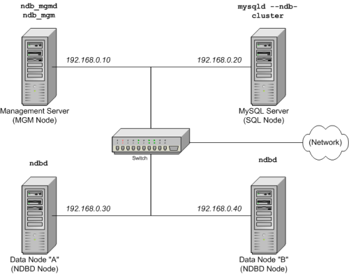
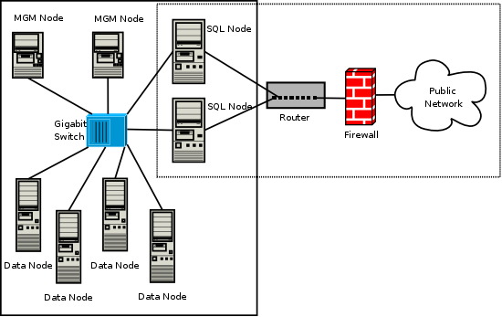
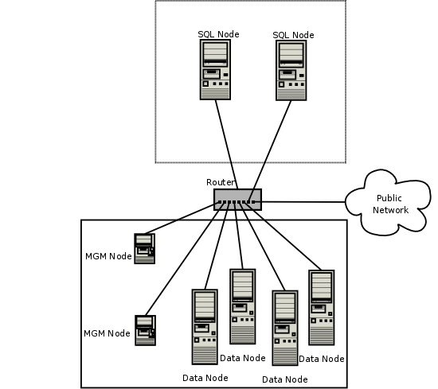

Table of Contents
- 17.1. MySQL Cluster Overview
- 17.2. MySQL Cluster Multi-Computer How-To
- 17.2.1. MySQL Cluster Hardware, Software, and Networking Requirements
- 17.2.2. MySQL Cluster Multi-Computer Installation
- 17.2.3. MySQL Cluster Multi-Computer Configuration
- 17.2.4. Initial Startup of MySQL Cluster
- 17.2.5. Loading Sample Data into MySQL Cluster and Performing Queries
- 17.2.6. Safe Shutdown and Restart of MySQL Cluster
- 17.3. MySQL Cluster Configuration
- 17.4. MySQL Cluster Options and Variables
- 17.5. Upgrading and Downgrading MySQL Cluster
- 17.6. MySQL Cluster Programs
- 17.6.1. MySQL Server Usage for MySQL Cluster
- 17.6.2. ndbd — The MySQL Cluster Data Node Daemon
- 17.6.3. ndb_mgmd — The MySQL Cluster Management Server Daemon
- 17.6.4. ndb_mgm — The MySQL Cluster Management Client
- 17.6.5. ndb_config — Extract MySQL Cluster Configuration Information
- 17.6.6. ndb_cpcd — Automate Testing for NDB Development
- 17.6.7. ndb_delete_all — Delete All Rows from an NDB Table
- 17.6.8. ndb_desc — Describe NDB Tables
- 17.6.9. ndb_drop_index — Drop Index from an NDB Table
- 17.6.10. ndb_drop_table — Drop an NDB Table
- 17.6.11. ndb_error_reporter — NDB Error-Reporting Utility
- 17.6.12. ndb_print_backup_file — Print NDB Backup File Contents
- 17.6.13. ndb_print_schema_file — Print NDB Schema File Contents
- 17.6.14. ndb_print_sys_file — Print NDB System File Contents
- 17.6.15. ndb_restore — Restore a MySQL Cluster Backup
- 17.6.16. ndb_select_all — Print Rows from an NDB Table
- 17.6.17. ndb_select_count — Print Row Counts for NDB Tables
- 17.6.18. ndb_show_tables — Display List of NDB Tables
- 17.6.19. ndb_size.pl — NDBCLUSTER Size Requirement Estimator
- 17.6.20. ndb_waiter — Wait for MySQL Cluster to Reach a Given Status
- 17.6.21. Options Common to MySQL Cluster Programs
- 17.6.22. Summary Tables of NDB Program Options
- 17.7. Management of MySQL Cluster
- 17.7.1. Summary of MySQL Cluster Start Phases
- 17.7.2. Commands in the MySQL Cluster Management Client
- 17.7.3. Online Backup of MySQL Cluster
- 17.7.4. Event Reports Generated in MySQL Cluster
- 17.7.5. MySQL Cluster Log Messages
- 17.7.6. MySQL Cluster Single User Mode
- 17.7.7. Quick Reference: MySQL Cluster SQL Statements
- 17.8. MySQL Cluster Security Issues
- 17.9. Using High-Speed Interconnects with MySQL Cluster
- 17.10. Known Limitations of MySQL Cluster
- 17.10.1. Noncompliance with SQL Syntax in MySQL Cluster
- 17.10.2. Limits and Differences of MySQL Cluster from Standard MySQL Limits
- 17.10.3. Limits Relating to Transaction Handling in MySQL Cluster
- 17.10.4. MySQL Cluster Error Handling
- 17.10.5. Limits Associated with Database Objects in MySQL Cluster
- 17.10.6. Unsupported or Missing Features in MySQL Cluster
- 17.10.7. Limitations Relating to Performance in MySQL Cluster
- 17.10.8. Issues Exclusive to MySQL Cluster
- 17.10.9. Limitations Relating to Multiple MySQL Cluster Nodes
- 17.10.10. Previous MySQL Cluster Issues Resolved in MySQL 5.0
- 17.11. MySQL Cluster Development Roadmap
- 17.12. MySQL Cluster Glossary
MySQL Cluster is a high-availability,
high-redundancy version of MySQL adapted for the distributed
computing environment. It uses the
NDBCLUSTER storage engine to enable
running several computers with MySQL servers and other software in a
cluster. This storage engine is available in MySQL 5.0
binary releases and in RPMs compatible with most modern Linux
distributions.
MySQL Cluster is currently available and supported on a number of platforms, including Linux, Solaris, Mac OS X, and other Unix-style operating systems on a variety of hardware. For exact levels of support available for on specific combinations of operating system versions, operating system distributions, and hardware platforms, please refer to MySQL Cluster Supported Platforms, maintained by the MySQL Support Team on the MySQL web site.
Beginning with MySQL Cluster NDB 7.0, MySQL Cluster is available for testing on Microsoft Windows (but not yet for production use). We are working to make Cluster available on all operating systems supported by MySQL; we will update the information provided here as this work continues. However, we do not plan to make MySQL Cluster available on Microsoft Windows in MySQL 5.0 or any other release series prior to MySQL Cluster NDB 7.0, which is based on MySQL 5.1. For more information, see MySQL Cluster NDB 6.X/7.X.
This chapter represents a work in progress, and its contents are subject to revision as MySQL Cluster continues to evolve. Additional information regarding MySQL Cluster can be found on the MySQL Web site at http://www.mysql.com/products/cluster/.
Additional resources. More information may be found in the following places:
Answers to some commonly asked questions about Cluster may be found in the Section A.10, “MySQL 5.0 FAQ — MySQL Cluster”.
The MySQL Cluster mailing list: http://lists.mysql.com/cluster.
The MySQL Cluster Forum: http://forums.mysql.com/list.php?25.
Many MySQL Cluster users and some of the MySQL Cluster developers blog about their experiences with Cluster, and make feeds of these available through PlanetMySQL.
If you are new to MySQL Cluster, you may find our Developer Zone article How to set up a MySQL Cluster for two servers to be helpful.
MySQL Cluster is a technology that enables clustering of in-memory databases in a shared-nothing system. The shared-nothing architecture allows the system to work with very inexpensive hardware, and with a minimum of specific requirements for hardware or software.
MySQL Cluster is designed not to have any single point of failure. For this reason, each component is expected to have its own memory and disk, and the use of shared storage mechanisms such as network shares, network file systems, and SANs is not recommended or supported.
MySQL Cluster integrates the standard MySQL server with an in-memory
clustered storage engine called NDB. In
our documentation, the term NDB refers
to the part of the setup that is specific to the storage engine,
whereas “MySQL Cluster” refers to the combination of
MySQL and the NDB storage engine.
A MySQL Cluster consists of a set of computers, each running one or more processes which may include a MySQL server, a data node, a management server, and (possibly) specialized data access programs. The relationship of these components in a cluster is shown here:

All these programs work together to form a MySQL Cluster. When data
is stored in the NDBCLUSTER storage
engine, the tables are stored in the data nodes. Such tables are
directly accessible from all other MySQL servers in the cluster.
Thus, in a payroll application storing data in a cluster, if one
application updates the salary of an employee, all other MySQL
servers that query this data can see this change immediately.
The data stored in the data nodes for MySQL Cluster can be mirrored; the cluster can handle failures of individual data nodes with no other impact than that a small number of transactions are aborted due to losing the transaction state. Because transactional applications are expected to handle transaction failure, this should not be a source of problems.
NDBCLUSTER
(also known as NDB) is an in-memory
storage engine offering high-availability and data-persistence
features.
The NDBCLUSTER storage engine can be
configured with a range of failover and load-balancing options,
but it is easiest to start with the storage engine at the cluster
level. MySQL Cluster's NDB storage
engine contains a complete set of data, dependent only on other
data within the cluster itself.
The “Cluster” portion of MySQL Cluster is configured independently of the MySQL servers. In a MySQL Cluster, each part of the cluster is considered to be a node.
Note
In many contexts, the term “node” is used to indicate a computer, but when discussing MySQL Cluster it means a process. It is possible to run multiple nodes on a single computer; for a computer on which one or more cluster nodes are being run we use the term cluster host.
However, MySQL 5.0 does not support the use of multiple data nodes on a single computer in a production setting. See Section 17.10.9, “Limitations Relating to Multiple MySQL Cluster Nodes”.
There are three types of cluster nodes, and in a minimal MySQL Cluster configuration, there will be at least three nodes, one of each of these types:
Management node (MGM node): The role of this type of node is to manage the other nodes within the MySQL Cluster, performing such functions as providing configuration data, starting and stopping nodes, running backup, and so forth. Because this node type manages the configuration of the other nodes, a node of this type should be started first, before any other node. An MGM node is started with the command ndb_mgmd.
Data node: This type of node stores cluster data. There are as many data nodes as there are replicas, times the number of fragments. For example, with two replicas, each having two fragments, you need four data nodes. One replica is sufficient for data storage, but provides no redundancy; therefore, it is recommended to have 2 (or more) replicas to provide redundancy, and thus high availability. A data node is started with the command ndbd.
SQL node: This is a node that accesses the cluster data. In the case of MySQL Cluster, an SQL node is a traditional MySQL server that uses the
NDBCLUSTERstorage engine. An SQL node is a mysqld process started with the--ndbclusterand--ndb-connectstringoptions, which are explained elsewhere in this chapter, possibly with additional MySQL server options as well.An SQL node is actually just a specialized type of API node, which designates any application which accesses Cluster data. Another example of an API node is the ndb_restore utility that is used to restore a cluster backup. It is possible to write such applications using the NDB API. For basic information about the NDB API, see Getting Started with the NDB API.
Important
It is not realistic to expect to employ a three-node setup in a production environment. Such a configuration provides no redundancy; in order to benefit from MySQL Cluster's high-availability features, you must use multiple data and SQL nodes. The use of multiple management nodes is also highly recommended.
For a brief introduction to the relationships between nodes, node groups, replicas, and partitions in MySQL Cluster, see Section 17.1.2, “MySQL Cluster Nodes, Node Groups, Replicas, and Partitions”.
Configuration of a cluster involves configuring each individual node in the cluster and setting up individual communication links between nodes. MySQL Cluster is currently designed with the intention that data nodes are homogeneous in terms of processor power, memory space, and bandwidth. In addition, to provide a single point of configuration, all configuration data for the cluster as a whole is located in one configuration file.
The management server (MGM node) manages the cluster configuration file and the cluster log. Each node in the cluster retrieves the configuration data from the management server, and so requires a way to determine where the management server resides. When interesting events occur in the data nodes, the nodes transfer information about these events to the management server, which then writes the information to the cluster log.
In addition, there can be any number of cluster client processes or applications. These are of two types:
Standard MySQL clients. MySQL Cluster can be used with existing MySQL applications written in PHP, Perl, C, C++, Java, Python, Ruby, and so on. Such client applications send SQL statements to and receive responses from MySQL servers acting as MySQL Cluster SQL nodes in much the same way that they interact with standalone MySQL servers. However, MySQL clients using a MySQL Cluster as a data source can be modified to take advantage of the ability to connect with multiple MySQL servers to achieve load balancing and failover. For example, Java clients using Connector/J 5.0.6 and later can use
jdbc:mysql:loadbalance://URLs (improved in Connector/J 5.1.7) to achieve load balancing transparently .Management clients. These clients connect to the management server and provide commands for starting and stopping nodes gracefully, starting and stopping message tracing (debug versions only), showing node versions and status, starting and stopping backups, and so on. Such clients — such as the ndb_mgm management client supplied with MySQL Cluster — are written using the MGM API, a C-language API that communicates directly with one or more MySQL Cluster management servers. For more information, see The MGM API.
This section discusses the manner in which MySQL Cluster divides and duplicates data for storage.
Central to an understanding of this topic are the following concepts, listed here with brief definitions:
(Data) Node. An ndbd process, which stores a replica —that is, a copy of the partition (see below) assigned to the node group of which the node is a member.
Each data node should be located on a separate computer. While it is also possible to host multiple ndbd processes on a single computer, such a configuration is not supported.
It is common for the terms “node” and “data node” to be used interchangeably when referring to an ndbd process; where mentioned, management (MGM) nodes (ndb_mgmd processes) and SQL nodes (mysqld processes) are specified as such in this discussion.
Node Group. A node group consists of one or more nodes, and stores partitions, or sets of replicas (see next item).
The number of node groups in a MySQL Cluster is not directly configurable; it is function of the number of data nodes and of the number of replicas (
NumberOfReplicasconfiguration parameter), as shown here:[
number_of_node_groups] =number_of_data_nodes/NumberOfReplicasThus, a MySQL Cluster with 4 data nodes has 4 node groups if
NumberOfReplicasis set to 1 in theconfig.inifile, 2 node groups ifNumberOfReplicasis set to 2, and 1 node group ifNumberOfReplicasis set to 4. Replicas are discussed later in this section; for more information aboutNumberOfReplicas, see Section 17.3.4.5, “Defining MySQL Cluster Data Nodes”.Note
All node groups in a MySQL Cluster must have the same number of data nodes.
Partition. This is a portion of the data stored by the cluster. There are as many cluster partitions as nodes participating in the cluster. Each node is responsible for keeping at least one copy of any partitions assigned to it (that is, at least one replica) available to the cluster.
A replica belongs entirely to a single node; a node can (and usually does) store several replicas.
Replica. This is a copy of a cluster partition. Each node in a node group stores a replica. Also sometimes known as a partition replica. The number of replicas is equal to the number of nodes per node group.
The following diagram illustrates a MySQL Cluster with four data nodes, arranged in two node groups of two nodes each; nodes 1 and 2 belong to node group 0, and nodes 3 and 4 belong to node group 1. Note that only data (ndbd) nodes are shown here; although a working cluster requires an ndb_mgm process for cluster management and at least one SQL node to access the data stored by the cluster, these have been omitted in the figure for clarity.

The data stored by the cluster is divided into four partitions, numbered 0, 1, 2, and 3. Each partition is stored — in multiple copies — on the same node group. Partitions are stored on alternate node groups:
Partition 0 is stored on node group 0; a primary replica (primary copy) is stored on node 1, and a backup replica (backup copy of the partition) is stored on node 2.
Partition 1 is stored on the other node group (node group 1); this partition's primary replica is on node 3, and its backup replica is on node 4.
Partition 2 is stored on node group 0. However, the placing of its two replicas is reversed from that of Partition 0; for Partition 2, the primary replica is stored on node 2, and the backup on node 1.
Partition 3 is stored on node group 1, and the placement of its two replicas are reversed from those of partition 1. That is, its primary replica is located on node 4, with the backup on node 3.
What this means regarding the continued operation of a MySQL Cluster is this: so long as each node group participating in the cluster has at least one node operating, the cluster has a complete copy of all data and remains viable. This is illustrated in the next diagram.

In this example, where the cluster consists of two node groups of two nodes each, any combination of at least one node in node group 0 and at least one node in node group 1 is sufficient to keep the cluster “alive” (indicated by arrows in the diagram). However, if both nodes from either node group fail, the remaining two nodes are not sufficient (shown by the arrows marked out with an X); in either case, the cluster has lost an entire partition and so can no longer provide access to a complete set of all cluster data.
- 17.2.1. MySQL Cluster Hardware, Software, and Networking Requirements
- 17.2.2. MySQL Cluster Multi-Computer Installation
- 17.2.3. MySQL Cluster Multi-Computer Configuration
- 17.2.4. Initial Startup of MySQL Cluster
- 17.2.5. Loading Sample Data into MySQL Cluster and Performing Queries
- 17.2.6. Safe Shutdown and Restart of MySQL Cluster
This section is a “How-To” that describes the basics for how to plan, install, configure, and run a MySQL Cluster. Whereas the examples in Section 17.3, “MySQL Cluster Configuration” provide more in-depth information on a variety of clustering options and configuration, the result of following the guidelines and procedures outlined here should be a usable MySQL Cluster which meets the minimum requirements for availability and safeguarding of data.
This section covers hardware and software requirements; networking issues; installation of MySQL Cluster; configuration issues; starting, stopping, and restarting the cluster; loading of a sample database; and performing queries.
Basic assumptions. This How-To makes the following assumptions:
The cluster is to be set up with four nodes, each on a separate host, and each with a fixed network address on a typical Ethernet network as shown here:
Node IP Address Management (MGMD) node 192.168.0.10 MySQL server (SQL) node 192.168.0.20 Data (NDBD) node "A" 192.168.0.30 Data (NDBD) node "B" 192.168.0.40 This may be made clearer in the following diagram:
In the interest of simplicity (and reliability), this How-To uses only numeric IP addresses. However, if DNS resolution is available on your network, it is possible to use host names in lieu of IP addresses in configuring Cluster. Alternatively, you can use the
/etc/hostsfile or your operating system's equivalent for providing a means to do host lookup if such is available.Note
A common problem when trying to use host names for Cluster nodes arises because of the way in which some operating systems (including some Linux distributions) set up the system's own host name in the
/etc/hostsduring installation. Consider two machines with the host namesndb1andndb2, both in theclusternetwork domain. Red Hat Linux (including some derivatives such as CentOS and Fedora) places the following entries in these machines'/etc/hostsfiles:# ndb1
/etc/hosts: 127.0.0.1 ndb1.cluster ndb1 localhost.localdomain localhost# ndb2
/etc/hosts: 127.0.0.1 ndb2.cluster ndb2 localhost.localdomain localhostSUSE Linux (including OpenSUSE) places these entries in the machines'
/etc/hostsfiles:# ndb1
/etc/hosts: 127.0.0.1 localhost 127.0.0.2 ndb1.cluster ndb1# ndb2
/etc/hosts: 127.0.0.1 localhost 127.0.0.2 ndb2.cluster ndb2In both instances,
ndb1routesndb1.clusterto a loopback IP address, but gets a public IP address from DNS forndb2.cluster, whilendb2routesndb2.clusterto a loopback address and obtains a public address forndb1.cluster. The result is that each data node connects to the management server, but cannot tell when any other data nodes have connected, and so the data nodes appear to hang while starting.You should also be aware that you cannot mix
localhostand other host names or IP addresses inconfig.ini. For these reasons, the solution in such cases (other than to use IP addresses for allconfig.iniHostNameentries) is to remove the fully qualified host names from/etc/hostsand use these inconfig.inifor all cluster hosts.Each host in our scenario is an Intel-based desktop PC running a common, generic Linux distribution installed to disk in a standard configuration, and running no unnecessary services. The core OS with standard TCP/IP networking capabilities should be sufficient. Also for the sake of simplicity, we also assume that the file systems on all hosts are set up identically. In the event that they are not, you will need to adapt these instructions accordingly.
Standard 100 Mbps or 1 gigabit Ethernet cards are installed on each machine, along with the proper drivers for the cards, and that all four hosts are connected via a standard-issue Ethernet networking appliance such as a switch. (All machines should use network cards with the same throughout. That is, all four machines in the cluster should have 100 Mbps cards or all four machines should have 1 Gbps cards.) MySQL Cluster will work in a 100 Mbps network; however, gigabit Ethernet will provide better performance.
Note that MySQL Cluster is not intended for use in a network for which throughput is less than 100 Mbps. For this reason (among others), attempting to run a MySQL Cluster over a public network such as the Internet is not likely to be successful, and is not recommended.
For our sample data, we will use the
worlddatabase which is available for download from the MySQL Web site. As this database takes up a relatively small amount of space, we assume that each machine has 256MB RAM, which should be sufficient for running the operating system, host NDB process, and (for the data nodes) for storing the database.
Although we refer to a Linux operating system in this How-To, the instructions and procedures that we provide here should be easily adaptable to other supported operating systems. We also assume that you already know how to perform a minimal installation and configuration of the operating system with networking capability, or that you are able to obtain assistance in this elsewhere if needed.
We discuss MySQL Cluster hardware, software, and networking requirements in somewhat greater detail in the next section. (See Section 17.2.1, “MySQL Cluster Hardware, Software, and Networking Requirements”.)
One of the strengths of MySQL Cluster is that it can be run on commodity hardware and has no unusual requirements in this regard, other than for large amounts of RAM, due to the fact that all live data storage is done in memory. (It is possible to reduce this requirement using Disk Data tables, which were implemented in MySQL 5.1; however, we do not intend to backport this feature to MySQL 5.0.) Naturally, multiple and faster CPUs will enhance performance. Memory requirements for other Cluster processes are relatively small.
The software requirements for Cluster are also modest. Host operating systems do not require any unusual modules, services, applications, or configuration to support MySQL Cluster. For supported operating systems, a standard installation should be sufficient. The MySQL software requirements are simple: all that is needed is a production release of MySQL 5.0 to have Cluster support. It is not necessary to compile MySQL yourself merely to be able to use Cluster. In this How-To, we assume that you are using the server binary appropriate to your platform, available via the MySQL software downloads page at http://dev.mysql.com/downloads/.
For communication between nodes, Cluster supports TCP/IP networking in any standard topology, and the minimum expected for each host is a standard 100 Mbps Ethernet card, plus a switch, hub, or router to provide network connectivity for the cluster as a whole. We strongly recommend that a MySQL Cluster be run on its own subnet which is not shared with non-Cluster machines for the following reasons:
Security. Communications between Cluster nodes are not encrypted or shielded in any way. The only means of protecting transmissions within a MySQL Cluster is to run your Cluster on a protected network. If you intend to use MySQL Cluster for Web applications, the cluster should definitely reside behind your firewall and not in your network's De-Militarized Zone (DMZ) or elsewhere.
See Section 17.8.1, “MySQL Cluster Security and Networking Issues”, for more information.
Efficiency. Setting up a MySQL Cluster on a private or protected network allows the cluster to make exclusive use of bandwidth between cluster hosts. Using a separate switch for your MySQL Cluster not only helps protect against unauthorized access to Cluster data, it also ensures that Cluster nodes are shielded from interference caused by transmissions between other computers on the network. For enhanced reliability, you can use dual switches and dual cards to remove the network as a single point of failure; many device drivers support failover for such communication links.
It is also possible to use the high-speed Scalable Coherent Interface (SCI) with MySQL Cluster, but this is not a requirement. See Section 17.9, “Using High-Speed Interconnects with MySQL Cluster”, for more about this protocol and its use with MySQL Cluster.
Each MySQL Cluster host computer running an SQL node must have installed on it a MySQL binary. For management nodes and data nodes, it is not necessary to install the MySQL server binary, but management nodes require the management server daemon (ndb_mgmd) and data nodes require the data node daemon (ndbd). It is also a good idea to install the management client (ndb_mgm) on the management server host. This section covers the steps necessary to install the correct binaries for each type of Cluster node.
Sun Microsystems, Inc. provides precompiled binaries that support
Cluster, and there is generally no need to compile these yourself.
However, we also include information relating to installing a
MySQL Cluster after building MySQL from source. For setting up a
cluster using MySQL's binaries, the first step in the
installation process for each cluster host is to download the file
mysql-5.0.86-pc-linux-gnu-i686.tar.gz
from the MySQL downloads
area. We assume that you have placed it in each machine's
/var/tmp directory. (If you do require a
custom binary, see Section 2.16.3, “Installing from the Development Source Tree”.)
RPMs are also available for both 32-bit and 64-bit Linux platforms. For a MySQL Cluster, three RPMs are required:
The Server RPM (for example,
MySQL-Server-5.0.86-0.glibc23.i386.rpm), which supplies the core files needed to run a MySQL Server.The NDB Cluster - Storage engine RPM (for example,
MySQL-ndb-storage-5.0.86-0.glibc23.i386.rpm), which supplies the MySQL Cluster data node binary (ndbd).The NDB Cluster - Storage engine management RPM (for example,
MySQL-ndb-management-5.0.86-0.glibc23.i386.rpm), which provides the MySQL Cluster management server binary (ndb_mgmd).
In addition, you should also obtain the NDB
Cluster - Storage engine basic tools RPM (for example,
MySQL-ndb-tools-5.0.86-0.glibc23.i386.rpm),
which supplies several useful applications for working with a
MySQL Cluster. The most important of these is the MySQL Cluster
management client (ndb_mgm). The
NDB Cluster - Storage engine extra
tools RPM (for example,
MySQL-ndb-extra-5.0.86-0.glibc23.i386.rpm)
contains some additional testing and monitoring programs, but is
not required to install a MySQL Cluster. (For more information
about these additional programs, see
Section 17.6, “MySQL Cluster Programs”.)
The MySQL version number in the RPM file names (shown here as
5.0.86) can vary according to the
version which you are actually using. It is very
important that all of the Cluster RPMs to be installed have the
same MySQL version number. The glibc
version number (if present — shown here as
glibc23), and architecture designation (shown
here as i386) should be appropriate to the
machine on which the RPM is to be installed.
See Section 2.10, “Installing MySQL from RPM Packages on Linux”, for general information about installing MySQL using RPMs supplied by Sun Microsystems, Inc.
After installing from RPM, you still need to configure the cluster as discussed in Section 17.2.3, “MySQL Cluster Multi-Computer Configuration”.
Note
After completing the installation, do not yet start any of the binaries. We show you how to do so following the configuration of all nodes.
Data and SQL Node Installation — .tar.gz
Binary.
On each of the machines designated to host data or SQL nodes,
perform the following steps as the system
root user:
Check your
/etc/passwdand/etc/groupfiles (or use whatever tools are provided by your operating system for managing users and groups) to see whether there is already amysqlgroup andmysqluser on the system. Some OS distributions create these as part of the operating system installation process. If they are not already present, create a newmysqluser group, and then add amysqluser to this group:shell>
groupadd mysqlshell>useradd -g mysql mysqlThe syntax for useradd and groupadd may differ slightly on different versions of Unix, or they may have different names such as adduser and addgroup.
Change location to the directory containing the downloaded file, unpack the archive, and create a symlink to the
mysqldirectory namedmysql. Note that the actual file and directory names will vary according to the MySQL version number.shell>
cd /var/tmpshell>tar -C /usr/local -xzvf mysql-5.0.86-pc-linux-gnu-i686.tar.gzshell>ln -s /usr/local/mysql-5.0.86-pc-linux-gnu-i686 /usr/local/mysqlChange location to the
mysqldirectory and run the supplied script for creating the system databases:shell>
cd mysqlshell>scripts/mysql_install_db --user=mysqlSet the necessary permissions for the MySQL server and data directories:
shell>
chown -R root .shell>chown -R mysql datashell>chgrp -R mysql .Note that the data directory on each machine hosting a data node is
/usr/local/mysql/data. This piece of information is essential when configuring the management node. (See Section 17.2.3, “MySQL Cluster Multi-Computer Configuration”.)Copy the MySQL startup script to the appropriate directory, make it executable, and set it to start when the operating system is booted up:
shell>
cp support-files/mysql.server /etc/rc.d/init.d/shell>chmod +x /etc/rc.d/init.d/mysql.servershell>chkconfig --add mysql.server(The startup scripts directory may vary depending on your operating system and version — for example, in some Linux distributions, it is
/etc/init.d.)Here we use Red Hat's chkconfig for creating links to the startup scripts; use whatever means is appropriate for this purpose on your operating system and distribution, such as update-rc.d on Debian.
Remember that the preceding steps must be performed separately on each machine where an SQL node is to reside.
SQL node installation — RPM files. On each machine to be used for hosting a cluster SQL node, install the MySQL Server RPM by executing the following command as the system root user, replacing the name shown for the RPM as necessary to match the name of the RPM downloaded from the MySQL web site:
shell> rpm -Uhv MySQL-server-5.0.86-0.glibc23.i386.rpm
This installs the MySQL server binary
(mysqld) in the
/usr/sbin directory, as well as all needed
MySQL Server support files. It also installs the
mysql.server and
mysqld_safe startup scripts in
/usr/share/mysql and
/usr/bin, respectively. The RPM installer
should take care of general configuration issues (such as
creating the mysql user and group, if needed)
automatically.
SQL node installation — building from source.
If you compile MySQL with clustering support (for example, by
using the
BUILD/compile-platform_name-max
script appropriate to your platform), and perform the default
installation (using make install as the root
user), mysqld is placed in
/usr/local/mysql/bin. Follow the steps
given in Section 2.16, “MySQL Installation Using a Source Distribution” to make
mysqld ready for use. If you want to run
multiple SQL nodes, you can use a copy of the same
mysqld executable and its associated support
files on several machines. The easiest way to do this is to copy
the entire /usr/local/mysql directory and
all directories and files contained within it to the other SQL
node host or hosts, then repeat the steps from
Section 2.16, “MySQL Installation Using a Source Distribution” on each machine. If you
configure the build with a nondefault
--prefix, you need to adjust
the directory accordingly.
Data node installation — RPM Files. On a computer that is to host a cluster data node it is necessary to install only the NDB Cluster - Storage engine RPM. To do so, copy this RPM to the data node host, and run the following command as the system root user, replacing the name shown for the RPM as necessary to match that of the RPM downloaded from the MySQL web site:
shell> rpm -Uhv MySQL-ndb-storage-5.0.86-0.glibc23.i386.rpm
The previous command installs the MySQL Cluster data node binary
(ndbd) in the /usr/sbin
directory.
Data node installation — building from source.
The only executable required on a data node host is
ndbd (mysqld, for example,
does not have to be present on the host machine). By default
when doing a source build, this file is placed in the directory
/usr/local/mysql/libexec. For installing on
multiple data node hosts, only ndbd need be
copied to the other host machine or machines. (This assumes that
all data node hosts use the same architecture and operating
system; otherwise you may need to compile separately for each
different platform.) ndbd need not be in any
particular location on the host's file system, as long as the
location is known.
Management node installation — .tar.gz binary.
Installation of the management node does not require the
mysqld binary. Only the binary for the
management server is required, which can be found in the
downloaded archive. You most likely want to install the
management client as well; this can also be found in the
.tar.gz archive. Again, we assume that you
have placed this archive in /var/tmp.
As system root (that is, after using
sudo, su root, or your
system's equivalent for temporarily assuming the system
administrator account's privileges), perform the following steps
to install ndb_mgmd and
ndb_mgm on the Cluster management node host:
Change location to the
/var/tmpdirectory, and extract the ndb_mgm and ndb_mgmd from the archive into a suitable directory such as/usr/local/bin:shell>
cd /var/tmpshell>tar -zxvf mysql-5.0.86-pc-linux-gnu-i686.tar.gzshell>cd mysql-5.0.86-pc-linux-gnu-i686shell>cp bin/ndb_mgm* /usr/local/bin(You can safely delete the directory created by unpacking the downloaded archive, and the files it contains, from
/var/tmponce ndb_mgm and ndb_mgmd have been copied to the executables directory.)Change location to the directory into which you copied the files, and then make both of them executable:
shell>
cd /usr/local/binshell>chmod +x ndb_mgm*
Management node installation — RPM file. To install the MySQL Cluster management server, it is necessary only to use the NDB Cluster - Storage engine management RPM. Copy this RPM to the computer intended to host the management node, and then install it by running the following command as the system root user (replace the name shown for the RPM as necessary to match that of the Storage engine management RPM downloaded from the MySQL web site):
shell> rpm -Uhv MySQL-ndb-management-5.0.86-0.glibc23.i386.rpm
This installs the management server binary
(ndb_mgmd) to the
/usr/sbin directory.
You should also install the NDB
management client, which is supplied by the
Storage engine basic tools RPM.
Copy this RPM to the same computer as the management node, and
then install it by running the following command as the system
root user (again, replace the name shown for the RPM as necessary
to match that of the Storage engine basic
tools RPM downloaded from the MySQL web site):
shell> rpm -Uhv MySQL-Cluster-gpl-tools-6.3.27-0.sles10.i586.rpm
The Storage engine basic tools
RPM installs the MySQL Cluster management client
(ndb_mgm) to the /usr/bin
directory.
Management node installation — building from source.
When building from source and running the default make
install, the management server binary
(ndb_mgmd) is placed in
/usr/local/mysql/libexec, while the
management client binary (ndb_mgm) can be
found in /usr/local/mysql/bin. Only
ndb_mgmd is required to be present on a
management node host; however, it is also a good idea to have
ndb_mgm present on the same host machine.
Neither of these executables requires a specific location on the
host machine's file system.
In Section 17.2.3, “MySQL Cluster Multi-Computer Configuration”, we create configuration files for all of the nodes in our example Cluster.
For our four-node, four-host MySQL Cluster, it is necessary to write four configuration files, one per node host.
Each data node or SQL node requires a
my.cnffile that provides two pieces of information: a connectstring that tells the node where to find the management node, and a line telling the MySQL server on this host (the machine hosting the data node) to enable theNDBCLUSTERstorage engine.For more information on connectstrings, see Section 17.3.4.2, “The MySQL Cluster Connectstring”.
The management node needs a
config.inifile telling it how many replicas to maintain, how much memory to allocate for data and indexes on each data node, where to find the data nodes, where to save data to disk on each data node, and where to find any SQL nodes.
Configuring the Storage and SQL Nodes
The my.cnf file needed for the data nodes is
fairly simple. The configuration file should be located in the
/etc directory and can be edited using any
text editor. (Create the file if it does not exist.) For example:
shell> vi /etc/my.cnf
Note
We show vi being used here to create the file, but any text editor should work just as well.
For each data node and SQL node in our example setup,
my.cnf should look like this:
# Options for mysqld process: [mysqld] ndbcluster # run NDB storage engine ndb-connectstring=192.168.0.10 # location of management server # Options for ndbd process: [mysql_cluster] ndb-connectstring=192.168.0.10 # location of management server
After entering the preceding information, save this file and exit the text editor. Do this for the machines hosting data node “A”, data node “B”, and the SQL node.
Important
Once you have started a mysqld process with
the NDBCLUSTER and
ndb-connectstring parameters in the
[mysqld] in the my.cnf
file as shown previously, you cannot execute any
CREATE TABLE or
ALTER TABLE statements without
having actually started the cluster. Otherwise, these statements
will fail with an error. This is by design.
Configuring the management node.
The first step in configuring the management node is to create
the directory in which the configuration file can be found and
then to create the file itself. For example (running as
root):
shell>mkdir /var/lib/mysql-clustershell>cd /var/lib/mysql-clustershell>vi config.ini
For our representative setup, the config.ini
file should read as follows:
# Options affecting ndbd processes on all data nodes:
[ndbd default]
NoOfReplicas=2 # Number of replicas
DataMemory=80M # How much memory to allocate for data storage
IndexMemory=18M # How much memory to allocate for index storage
# For DataMemory and IndexMemory, we have used the
# default values. Since the "world" database takes up
# only about 500KB, this should be more than enough for
# this example Cluster setup.
# TCP/IP options:
[tcp default]
portnumber=2202 # This the default; however, you can use any
# port that is free for all the hosts in the cluster
# Note: It is recommended beginning with MySQL 5.0 that
# you do not specify the portnumber at all and simply allow
# the default value to be used instead
# Management process options:
[ndb_mgmd]
hostname=192.168.0.10 # Hostname or IP address of MGM node
datadir=/var/lib/mysql-cluster # Directory for MGM node log files
# Options for data node "A":
[ndbd]
# (one [ndbd] section per data node)
hostname=192.168.0.30 # Hostname or IP address
datadir=/usr/local/mysql/data # Directory for this data node's data files
# Options for data node "B":
[ndbd]
hostname=192.168.0.40 # Hostname or IP address
datadir=/usr/local/mysql/data # Directory for this data node's data files
# SQL node options:
[mysqld]
hostname=192.168.0.20 # Hostname or IP address
# (additional mysqld connections can be
# specified for this node for various
# purposes such as running ndb_restore)
Note
The world database can be downloaded from
http://dev.mysql.com/doc/, where it can be found listed
under “Examples”.
After all the configuration files have been created and these minimal options have been specified, you are ready to proceed with starting the cluster and verifying that all processes are running. We discuss how this is done in Section 17.2.4, “Initial Startup of MySQL Cluster”.
For more detailed information about the available MySQL Cluster configuration parameters and their uses, see Section 17.3.4, “MySQL Cluster Configuration Files”, and Section 17.3, “MySQL Cluster Configuration”. For configuration of MySQL Cluster as relates to making backups, see Section 17.7.3.3, “Configuration for MySQL Cluster Backups”.
Note
The default port for Cluster management nodes is 1186; the default port for data nodes is 2202. Beginning with MySQL 5.0.3, this restriction is lifted, and the cluster automatically allocates ports for data nodes from those that are already free.
Starting the cluster is not very difficult after it has been configured. Each cluster node process must be started separately, and on the host where it resides. The management node should be started first, followed by the data nodes, and then finally by any SQL nodes:
On the management host, issue the following command from the system shell to start the management node process:
shell>
ndb_mgmd -f /var/lib/mysql-cluster/config.iniNote
ndb_mgmd must be told where to find its configuration file, using the
-for--config-fileoption. (See Section 17.6.3, “ndb_mgmd — The MySQL Cluster Management Server Daemon”, for details.)For additional options which can be used with ndb_mgmd, see Section 17.6.21, “Options Common to MySQL Cluster Programs”.
On each of the data node hosts, run this command to start the ndbd process:
shell>
ndbdIf you used RPM files to install MySQL on the cluster host where the SQL node is to reside, you can (and should) use the supplied startup script to start the MySQL server process on the SQL node.
If all has gone well, and the cluster has been set up correctly, the cluster should now be operational. You can test this by invoking the ndb_mgm management node client. The output should look like that shown here, although you might see some slight differences in the output depending upon the exact version of MySQL that you are using:
shell>ndb_mgm-- NDB Cluster -- Management Client -- ndb_mgm>SHOWConnected to Management Server at: localhost:1186 Cluster Configuration --------------------- [ndbd(NDB)] 2 node(s) id=2 @192.168.0.30 (Version: 5.0.86, Nodegroup: 0, Master) id=3 @192.168.0.40 (Version: 5.0.86, Nodegroup: 0) [ndb_mgmd(MGM)] 1 node(s) id=1 @192.168.0.10 (Version: 5.0.86) [mysqld(API)] 1 node(s) id=4 @192.168.0.20 (Version: 5.0.86)
The SQL node is referenced here as
[mysqld(API)], which reflects the fact that the
mysqld process is acting as a MySQL Cluster API
node.
Note
The IP address shown for a given MySQL Cluster SQL or other API
node in the output of SHOW
is the address used by the SQL or API node to connect to the
cluster data nodes, and not to any management node.
You should now be ready to work with databases, tables, and data in MySQL Cluster. See Section 17.2.5, “Loading Sample Data into MySQL Cluster and Performing Queries”, for a brief discussion.
Working with data in MySQL Cluster is not much different from doing so in MySQL without Cluster. There are two points to keep in mind:
For a table to be replicated in the cluster, it must use the
NDBCLUSTERstorage engine. To specify this, use theENGINE=NDBCLUSTERorENGINE=NDBoption when creating the table:CREATE TABLE
tbl_name(col_namecolumn_definitions) ENGINE=NDBCLUSTER;Alternatively, for an existing table that uses a different storage engine, use
ALTER TABLEto change the table to useNDBCLUSTER:ALTER TABLE
tbl_nameENGINE=NDBCLUSTER;Each
NDBCLUSTERtable must have a primary key. If no primary key is defined by the user when a table is created, theNDBCLUSTERstorage engine automatically generates a hidden one.Note
This hidden key takes up space just as does any other table index. It is not uncommon to encounter problems due to insufficient memory for accommodating these automatically created indexes.)
If you are importing tables from an existing database using the
output of mysqldump, you can open the SQL
script in a text editor and add the ENGINE
option to any table creation statements, or replace any existing
ENGINE (or TYPE) options.
Suppose that you have the world sample database
on another MySQL server that does not support MySQL Cluster, and
you want to export the City table:
shell> mysqldump --add-drop-table world City > city_table.sql
The resulting city_table.sql file will
contain this table creation statement (and the
INSERT statements necessary to
import the table data):
DROP TABLE IF EXISTS `City`;
CREATE TABLE `City` (
`ID` int(11) NOT NULL auto_increment,
`Name` char(35) NOT NULL default '',
`CountryCode` char(3) NOT NULL default '',
`District` char(20) NOT NULL default '',
`Population` int(11) NOT NULL default '0',
PRIMARY KEY (`ID`)
) ENGINE=MyISAM DEFAULT CHARSET=latin1;
INSERT INTO `City` VALUES (1,'Kabul','AFG','Kabol',1780000);
INSERT INTO `City` VALUES (2,'Qandahar','AFG','Qandahar',237500);
INSERT INTO `City` VALUES (3,'Herat','AFG','Herat',186800);
(remaining INSERT statements omitted)
You need to make sure that MySQL uses the
NDBCLUSTER storage engine for this
table. There are two ways that this can be accomplished. One of
these is to modify the table definition
before importing it into the Cluster
database. Using the City table as an example,
modify the ENGINE option of the definition as
follows:
DROP TABLE IF EXISTS `City`;
CREATE TABLE `City` (
`ID` int(11) NOT NULL auto_increment,
`Name` char(35) NOT NULL default '',
`CountryCode` char(3) NOT NULL default '',
`District` char(20) NOT NULL default '',
`Population` int(11) NOT NULL default '0',
PRIMARY KEY (`ID`)
) ENGINE=NDBCLUSTER DEFAULT CHARSET=latin1;
INSERT INTO `City` VALUES (1,'Kabul','AFG','Kabol',1780000);
INSERT INTO `City` VALUES (2,'Qandahar','AFG','Qandahar',237500);
INSERT INTO `City` VALUES (3,'Herat','AFG','Herat',186800);
(remaining INSERT statements omitted)
This must be done for the definition of each table that is to be
part of the clustered database. The easiest way to accomplish this
is to do a search-and-replace on the file that contains the
definitions and replace all instances of
TYPE= or
engine_nameENGINE=
with engine_nameENGINE=NDBCLUSTER. If you do not want to
modify the file, you can use the unmodified file to create the
tables, and then use ALTER TABLE to
change their storage engine. The particulars are given later in
this section.
Assuming that you have already created a database named
world on the SQL node of the cluster, you can
then use the mysql command-line client to read
city_table.sql, and create and populate the
corresponding table in the usual manner:
shell> mysql world < city_table.sql
It is very important to keep in mind that the preceding command
must be executed on the host where the SQL node is running (in
this case, on the machine with the IP address
192.168.0.20).
To create a copy of the entire world database
on the SQL node, use mysqldump on the
noncluster server to export the database to a file named
world.sql; for example, in the
/tmp directory. Then modify the table
definitions as just described and import the file into the SQL
node of the cluster like this:
shell> mysql world < /tmp/world.sql
If you save the file to a different location, adjust the preceding instructions accordingly.
It is important to note that
NDBCLUSTER in MySQL 5.0
does not support autodiscovery of databases. (See
Section 17.10, “Known Limitations of MySQL Cluster”.) This means that,
once the world database and its tables have
been created on one data node, you need to issue the
CREATE DATABASE world statement (beginning with
MySQL 5.0.2, you may use CREATE SCHEMA world
instead), followed by FLUSH
TABLES on each SQL node in the cluster. This causes the
node to recognize the database and read its table definitions.
Running SELECT queries on the SQL
node is no different from running them on any other instance of a
MySQL server. To run queries from the command line, you first need
to log in to the MySQL Monitor in the usual way (specify the
root password at the Enter
password: prompt):
shell> mysql -u root -p
Enter password:
Welcome to the MySQL monitor. Commands end with ; or \g.
Your MySQL connection id is 1 to server version: 5.0.86
Type 'help;' or '\h' for help. Type '\c' to clear the buffer.
mysql>
We simply use the MySQL server's root
account and assume that you have followed the standard security
precautions for installing a MySQL server, including setting a
strong root password. For more information, see
Section 2.17.3, “Securing the Initial MySQL Accounts”.
It is worth taking into account that Cluster nodes do
not make use of the MySQL privilege system
when accessing one another. Setting or changing MySQL user
accounts (including the root account) effects
only applications that access the SQL node, not interaction
between nodes. See
Section 17.8.2, “MySQL Cluster and MySQL Privileges”, for
more information.
If you did not modify the ENGINE clauses in the
table definitions prior to importing the SQL script, you should
run the following statements at this point:
mysql>USE world;mysql>ALTER TABLE City ENGINE=NDBCLUSTER;mysql>ALTER TABLE Country ENGINE=NDBCLUSTER;mysql>ALTER TABLE CountryLanguage ENGINE=NDBCLUSTER;
Selecting a database and running a SELECT query against a table in that database is also accomplished in the usual manner, as is exiting the MySQL Monitor:
mysql>USE world;mysql>SELECT Name, Population FROM City ORDER BY Population DESC LIMIT 5;+-----------+------------+ | Name | Population | +-----------+------------+ | Bombay | 10500000 | | Seoul | 9981619 | | São Paulo | 9968485 | | Shanghai | 9696300 | | Jakarta | 9604900 | +-----------+------------+ 5 rows in set (0.34 sec) mysql>\qBye shell>
Applications that use MySQL can employ standard APIs to access
NDB tables. It is important to
remember that your application must access the SQL node, and not
the management or data nodes. This brief example shows how we
might execute the SELECT statement
just shown by using the PHP 5.X mysqli
extension running on a Web server elsewhere on the network:
<!DOCTYPE HTML PUBLIC "-//W3C//DTD HTML 4.01 Transitional//EN"
"http://www.w3.org/TR/html4/loose.dtd">
<html>
<head>
<meta http-equiv="Content-Type"
content="text/html; charset=iso-8859-1">
<title>SIMPLE mysqli SELECT</title>
</head>
<body>
<?php
# connect to SQL node:
$link = new mysqli('192.168.0.20', 'root', 'root_password', 'world');
# parameters for mysqli constructor are:
# host, user, password, database
if( mysqli_connect_errno() )
die("Connect failed: " . mysqli_connect_error());
$query = "SELECT Name, Population
FROM City
ORDER BY Population DESC
LIMIT 5";
# if no errors...
if( $result = $link->query($query) )
{
?>
<table border="1" width="40%" cellpadding="4" cellspacing ="1">
<tbody>
<tr>
<th width="10%">City</th>
<th>Population</th>
</tr>
<?
# then display the results...
while($row = $result->fetch_object())
printf("<tr>\n <td align=\"center\">%s</td><td>%d</td>\n</tr>\n",
$row->Name, $row->Population);
?>
</tbody
</table>
<?
# ...and verify the number of rows that were retrieved
printf("<p>Affected rows: %d</p>\n", $link->affected_rows);
}
else
# otherwise, tell us what went wrong
echo mysqli_error();
# free the result set and the mysqli connection object
$result->close();
$link->close();
?>
</body>
</html>
We assume that the process running on the Web server can reach the IP address of the SQL node.
In a similar fashion, you can use the MySQL C API, Perl-DBI, Python-mysql, or MySQL Connectors to perform the tasks of data definition and manipulation just as you would normally with MySQL.
To shut down the cluster, enter the following command in a shell on the machine hosting the management node:
shell> ndb_mgm -e shutdown
The -e option here is used to pass a command to
the ndb_mgm client from the shell. (See
Section 17.6.21, “Options Common to MySQL Cluster Programs”, for more
information about this option.) The command causes the
ndb_mgm, ndb_mgmd, and any
ndbd processes to terminate gracefully. Any SQL
nodes can be terminated using mysqladmin
shutdown and other means.
To restart the cluster, run these commands:
On the management host (
192.168.0.10in our example setup):shell>
ndb_mgmd -f /var/lib/mysql-cluster/config.iniOn each of the data node hosts (
192.168.0.30and192.168.0.40):shell>
ndbdOn the SQL host (
192.168.0.20):shell>
mysqld_safe &
In a production setting, it is usually not desirable to shut down the cluster completely. In many cases, even when making configuration changes, or performing upgrades to the cluster hardware or software (or both), which require shutting down individual host machines, it is possible to do so without shutting down the cluster as a whole by performing a rolling restart of the cluster. For more information about doing this, see Section 17.5.1, “Performing a Rolling Restart of a MySQL Cluster”.
A MySQL server that is part of a MySQL Cluster differs in one chief
respect from a normal (nonclustered) MySQL server, in that it
employs the NDBCLUSTER storage engine.
This engine is also referred to simply as
NDB, and the two forms of the name are
synonymous.
To avoid unnecessary allocation of resources, the server is
configured by default with the NDB
storage engine disabled. To enable NDB,
you must modify the server's my.cnf
configuration file, or start the server with the
--ndbcluster option.
For more information about
--ndbcluster and other MySQL server
options specific to MySQL Cluster, see
Section 17.4.2, “mysqld Command Options for MySQL Cluster”.
The MySQL server is a part of the cluster, so it also must know how
to access an MGM node to obtain the cluster configuration data. The
default behavior is to look for the MGM node on
localhost. However, should you need to specify
that its location is elsewhere, this can be done in
my.cnf or on the MySQL server command line.
Before the NDB storage engine can be
used, at least one MGM node must be operational, as well as any
desired data nodes.
NDB, the Cluster storage engine, is
available in binary distributions for Linux, Mac OS X, and
Solaris. We are working to make Cluster run on all operating
systems supported by MySQL, including Windows.
If you choose to build from a source tarball or one of the MySQL
Cluster public development trees, be sure to use the
--with-ndbcluster option when running
configure. You can also use the
BUILD/compile-*-max build scripts (such as
compile-pentium-max) provided for most Unix
platforms.
Note
The compile-*-max scripts include OpenSSL, so you must either have or obtain OpenSSL to build successfully, or else modify the script that you use to exclude this requirement. Of course, you can also just follow the standard instructions for compiling your own binaries, and then perform the usual tests and installation procedure. See Section 2.16.3, “Installing from the Development Source Tree”.
These scripts by default install MySQL to the directory
/usr/local/mysql, placing all MySQL Cluster
executables, scripts, databases, and support files in
subdirectories under this directory. If this is not what you
desire, be sure to modify the script accordingly or run it with
the
--prefix=
option.
path/to/installation/dir
In the next few sections, we assume that you are already familiar with installing MySQL, and here we cover only the differences between configuring MySQL Cluster and configuring MySQL without clustering. (See Chapter 2, Installing and Upgrading MySQL, if you require more information about the latter.)
You will find Cluster configuration easiest if you have already
have all management and data nodes running first; this is likely
to be the most time-consuming part of the configuration. Editing
the my.cnf file is fairly straightforward,
and this section will cover only any differences from configuring
MySQL without clustering.
To familiarize you with the basics, we will describe the simplest possible configuration for a functional MySQL Cluster. After this, you should be able to design your desired setup from the information provided in the other relevant sections of this chapter.
First, you need to create a configuration directory such as
/var/lib/mysql-cluster, by executing the
following command as the system root user:
shell> mkdir /var/lib/mysql-cluster
In this directory, create a file named
config.ini that contains the following
information. Substitute appropriate values for
HostName and DataDir as
necessary for your system.
# file "config.ini" - showing minimal setup consisting of 1 data node, # 1 management server, and 3 MySQL servers. # The empty default sections are not required, and are shown only for # the sake of completeness. # Data nodes must provide a hostname but MySQL Servers are not required # to do so. # If you don't know the hostname for your machine, use localhost. # The DataDir parameter also has a default value, but it is recommended to # set it explicitly. # Note: [db], [api], and [mgm] are aliases for [ndbd], [mysqld], and [ndb_mgmd], # respectively. [db] is deprecated and should not be used in new installations. [ndbd default] NoOfReplicas= 1 [mysqld default] [ndb_mgmd default] [tcp default] [ndb_mgmd] HostName= myhost.example.com [ndbd] HostName= myhost.example.com DataDir= /var/lib/mysql-cluster [mysqld] [mysqld] [mysqld]
You can now start the ndb_mgmd management
server. By default, it attempts to read the
config.ini file in its current working
directory, so change location into the directory where the file is
located and then invoke ndb_mgmd:
shell>cd /var/lib/mysql-clustershell>ndb_mgmd
Then start a single data node by running ndbd:
shell> ndbd
For command-line options which can be used when starting ndbd, see Section 17.6.21, “Options Common to MySQL Cluster Programs”.
By default, ndbd looks for the management
server at localhost on port 1186.
Note
If you have installed MySQL from a binary tarball, you will need
to specify the path of the ndb_mgmd and
ndbd servers explicitly. (Normally, these
will be found in /usr/local/mysql/bin.)
Finally, change location to the MySQL data directory (usually
/var/lib/mysql or
/usr/local/mysql/data), and make sure that
the my.cnf file contains the option necessary
to enable the NDB storage engine:
[mysqld] ndbcluster
You can now start the MySQL server as usual:
shell> mysqld_safe --user=mysql &
Wait a moment to make sure the MySQL server is running properly.
If you see the notice mysql ended, check the
server's .err file to find out what went
wrong.
If all has gone well so far, you now can start using the cluster.
Connect to the server and verify that the
NDBCLUSTER storage engine is enabled:
shell>mysqlWelcome to the MySQL monitor. Commands end with ; or \g. Your MySQL connection id is 1 to server version: 5.0.86 Type 'help;' or '\h' for help. Type '\c' to clear the buffer. mysql>SHOW ENGINES\G... *************************** 12. row *************************** Engine: NDBCLUSTER Support: YES Comment: Clustered, fault-tolerant, memory-based tables *************************** 13. row *************************** Engine: NDB Support: YES Comment: Alias for NDBCLUSTER ...
The row numbers shown in the preceding example output may be different from those shown on your system, depending upon how your server is configured.
Try to create an NDBCLUSTER table:
shell>mysqlmysql>USE test;Database changed mysql>CREATE TABLE ctest (i INT) ENGINE=NDBCLUSTER;Query OK, 0 rows affected (0.09 sec) mysql>SHOW CREATE TABLE ctest \G*************************** 1. row *************************** Table: ctest Create Table: CREATE TABLE `ctest` ( `i` int(11) default NULL ) ENGINE=ndbcluster DEFAULT CHARSET=latin1 1 row in set (0.00 sec)
To check that your nodes were set up properly, start the management client:
shell> ndb_mgm
Use the SHOW command from within the management client to obtain a report on the cluster's status:
ndb_mgm> SHOW
Cluster Configuration
---------------------
[ndbd(NDB)] 1 node(s)
id=2 @127.0.0.1 (Version: 3.5.3, Nodegroup: 0, Master)
[ndb_mgmd(MGM)] 1 node(s)
id=1 @127.0.0.1 (Version: 3.5.3)
[mysqld(API)] 3 node(s)
id=3 @127.0.0.1 (Version: 3.5.3)
id=4 (not connected, accepting connect from any host)
id=5 (not connected, accepting connect from any host)
At this point, you have successfully set up a working MySQL
Cluster. You can now store data in the cluster by using any table
created with ENGINE=NDBCLUSTER or its alias
ENGINE=NDB.
- 17.3.4.1. MySQL Cluster Configuration — Basic Example
- 17.3.4.2. The MySQL Cluster Connectstring
- 17.3.4.3. Defining Computers in a MySQL Cluster
- 17.3.4.4. Defining a MySQL Cluster Management Server
- 17.3.4.5. Defining MySQL Cluster Data Nodes
- 17.3.4.6. Defining SQL and Other API Nodes in a MySQL Cluster
- 17.3.4.7. MySQL Cluster TCP/IP Connections
- 17.3.4.8. MySQL Cluster TCP/IP Connections Using Direct Connections
- 17.3.4.9. MySQL Cluster Shared-Memory Connections
- 17.3.4.10. SCI Transport Connections in MySQL Cluster
Configuring MySQL Cluster requires working with two files:
my.cnf: Specifies options for all MySQL Cluster executables. This file, with which you should be familiar with from previous work with MySQL, must be accessible by each executable running in the cluster.config.ini: This file, sometimes known as the global configuration file, is read only by the MySQL Cluster management server, which then distributes the information contained therein to all processes participating in the cluster.config.inicontains a description of each node involved in the cluster. This includes configuration parameters for data nodes and configuration parameters for connections between all nodes in the cluster. For a quick reference to the sections that can appear in this file, and what sorts of configuration parameters may be placed in each section, see Sections of theconfig.iniFile.
We are continuously making improvements in Cluster configuration and attempting to simplify this process. Although we strive to maintain backward compatibility, there may be times when introduce an incompatible change. In such cases we will try to let Cluster users know in advance if a change is not backward compatible. If you find such a change and we have not documented it, please report it in the MySQL bugs database using the instructions given in Section 1.6, “How to Report Bugs or Problems”.
To support MySQL Cluster, you will need to update
my.cnf as shown in the following example.
You may also specify these parameters on the command line when
invoking the executables.
Note
The options shown here should not be confused with those that
are used in config.ini global
configuration files. Global configuration options are
discussed later in this section.
# my.cnf # example additions to my.cnf for MySQL Cluster # (valid in MySQL 5.0) # enable ndbcluster storage engine, and provide connectstring for # management server host (default port is 1186) [mysqld] ndbcluster ndb-connectstring=ndb_mgmd.mysql.com # provide connectstring for management server host (default port: 1186) [ndbd] connect-string=ndb_mgmd.mysql.com # provide connectstring for management server host (default port: 1186) [ndb_mgm] connect-string=ndb_mgmd.mysql.com # provide location of cluster configuration file [ndb_mgmd] config-file=/etc/config.ini
(For more information on connectstrings, see Section 17.3.4.2, “The MySQL Cluster Connectstring”.)
# my.cnf # example additions to my.cnf for MySQL Cluster # (will work on all versions) # enable ndbcluster storage engine, and provide connectstring for management # server host to the default port 1186 [mysqld] ndbcluster ndb-connectstring=ndb_mgmd.mysql.com:1186
Important
Once you have started a mysqld process with
the NDBCLUSTER and
ndb-connectstring parameters in the
[mysqld] in the my.cnf
file as shown previously, you cannot execute any
CREATE TABLE or
ALTER TABLE statements without
having actually started the cluster. Otherwise, these
statements will fail with an error. This is by
design.
You may also use a separate [mysql_cluster]
section in the cluster my.cnf file for
settings to be read and used by all executables:
# cluster-specific settings [mysql_cluster] ndb-connectstring=ndb_mgmd.mysql.com:1186
For additional NDB variables that
can be set in the my.cnf file, see
Section 17.4.3, “MySQL Cluster System Variables”.
The MySQL Cluster global configuration file is named
config.ini by default. It is read by
ndb_mgmd at startup and can be placed
anywhere. Its location and name are specified by using
--config-file=
on the ndb_mgmd command line. If the
configuration file is not specified, ndb_mgmd
by default tries to read a file named
path_nameconfig.ini located in the current working
directory.
The global configuration file for MySQL Cluster uses INI format,
which consists of sections preceded by section headings
(surrounded by square brackets), followed by the appropriate
parameter names and values. One deviation from the standard INI
format is that the parameter name and value can be separated by
a colon (“:”) as well as the
equals sign (“=”); however, the
equals sign is preferred. Another deviation is that sections are
not uniquely identified by section name. Instead, unique
sections (such as two different nodes of the same type) are
identified by a unique ID specified as a parameter within the
section.
Default values are defined for most parameters, and can also be
specified in config.ini.
(Exception: The
NoOfReplicas configuration parameter has no
default value, and must always be specified explicitly in the
[ndbd default] section.) To create a default
value section, simply add the word default to
the section name. For example, an [ndbd]
section contains parameters that apply to a particular data
node, whereas an [ndbd default] section
contains parameters that apply to all data nodes. Suppose that
all data nodes should use the same data memory size. To
configure them all, create an [ndbd default]
section that contains a DataMemory line to
specify the data memory size.
The global configuration file must define the computers and nodes involved in the cluster and on which computers these nodes are located. An example of a simple configuration file for a cluster consisting of one management server, two data nodes and two MySQL servers is shown here:
# file "config.ini" - 2 data nodes and 2 SQL nodes # This file is placed in the startup directory of ndb_mgmd (the # management server) # The first MySQL Server can be started from any host. The second # can be started only on the host mysqld_5.mysql.com [ndbd default] NoOfReplicas= 2 DataDir= /var/lib/mysql-cluster [ndb_mgmd] Hostname= ndb_mgmd.mysql.com DataDir= /var/lib/mysql-cluster [ndbd] HostName= ndbd_2.mysql.com [ndbd] HostName= ndbd_3.mysql.com [mysqld] [mysqld] HostName= mysqld_5.mysql.com
Each node has its own section in the
config.ini file. For example, this cluster
has two data nodes, so the preceding configuration file contains
two [ndbd] sections defining these nodes.
Note
Do not place comments on the same line as a section heading in
the config.ini file; this causes the
management server not to start because it cannot parse the
configuration file in such cases.
Sections of the
config.ini File
There are six different sections that you can use in the
config.ini configuration file, as described
in the following list:
[computer]: Defines cluster hosts. This is not required to configure a viable MySQL Cluster, but be may used as a convenience when setting up a large cluster. See Section 17.3.4.3, “Defining Computers in a MySQL Cluster”, for more information.[ndbd]: Defines a cluster data node (ndbd process). See Section 17.3.4.5, “Defining MySQL Cluster Data Nodes”, for details.[mysqld]: Defines the cluster's MySQL server nodes (also called SQL or API nodes). For a discussion of SQL node configuration, see Section 17.3.4.6, “Defining SQL and Other API Nodes in a MySQL Cluster”.[mgm]or[ndb_mgmd]: Defines a cluster management server (MGM) node. For information concerning the configuration of MGM nodes, see Section 17.3.4.4, “Defining a MySQL Cluster Management Server”.[tcp]: Defines a TCP/IP connection between cluster nodes, with TCP/IP being the default connection protocol. Normally,[tcp]or[tcp default]sections are not required to set up a MySQL Cluster, as the cluster handles this automatically; however, it may be necessary in some situations to override the defaults provided by the cluster. See Section 17.3.4.7, “MySQL Cluster TCP/IP Connections”, for information about available TCP/IP configuration parameters and how to use them. (You may also find Section 17.3.4.8, “MySQL Cluster TCP/IP Connections Using Direct Connections” to be of interest in some cases.)[shm]: Defines shared-memory connections between nodes. In MySQL 5.0, it is enabled by default, but should still be considered experimental. For a discussion of SHM interconnects, see Section 17.3.4.9, “MySQL Cluster Shared-Memory Connections”.[sci]:Defines Scalable Coherent Interface connections between cluster data nodes. Such connections require software which, while freely available, is not part of the MySQL Cluster distribution, as well as specialised hardware. See Section 17.3.4.10, “SCI Transport Connections in MySQL Cluster” for detailed information about SCI interconnects.
You can define default values for each
section. All Cluster parameter names are case-insensitive, which
differs from parameters specified in my.cnf
or my.ini files.
With the exception of the MySQL Cluster management server (ndb_mgmd), each node that is part of a MySQL Cluster requires a connectstring that points to the management server's location. This connectstring is used in establishing a connection to the management server as well as in performing other tasks depending on the node's role in the cluster. The syntax for a connectstring is as follows:
[nodeid=node_id, ]host-definition[,host-definition[, ...]]host-definition:host_name[:port_number]
node_id is an integer larger than 1 which
identifies a node in config.ini.
host_name is a string representing a
valid Internet host name or IP address.
port_number is an integer referring
to a TCP/IP port number.
example 1 (long): "nodeid=2,myhost1:1100,myhost2:1100,192.168.0.3:1200" example 2 (short): "myhost1"
localhost:1186 is used as the default
connectstring value if none is provided. If
port_num is omitted from the
connectstring, the default port is 1186. This port should always
be available on the network because it has been assigned by IANA
for this purpose (see
http://www.iana.org/assignments/port-numbers for
details).
By listing multiple host definitions, it is possible to designate several redundant management servers. A MySQL Cluster data or API node attempts to contact successive management servers on each host in the order specified, until a successful connection has been established.
There are a number of different ways to specify the connectstring:
Each executable has its own command-line option which enables specifying the management server at startup. (See the documentation for the respective executable.)
It is also possible to set the connectstring for all nodes in the cluster at once by placing it in a
[mysql_cluster]section in the management server'smy.cnffile.For backward compatibility, two other options are available, using the same syntax:
Set the
NDB_CONNECTSTRINGenvironment variable to contain the connectstring.Write the connectstring for each executable into a text file named
Ndb.cfgand place this file in the executable's startup directory.
However, these are now deprecated and should not be used for new installations.
The recommended method for specifying the connectstring is to
set it on the command line or in the my.cnf
file for each executable.
The maximum length of a connectstring is 1024 characters.
The [computer] section has no real
significance other than serving as a way to avoid the need of
defining host names for each node in the system. All parameters
mentioned here are required.
Restart Type initial, node Permitted Values Type stringDefault Range -This is a unique identifier, used to refer to the host computer elsewhere in the configuration file.
Important
The computer ID is not the same as the node ID used for a management, API, or data node. Unlike the case with node IDs, you cannot use
NodeIdin place ofIdin the[computer]section of theconfig.inifile.Restart Type initial, node Permitted Values Type stringDefault Range -This is the computer's hostname or IP address.
The [ndb_mgmd] section is used to configure
the behavior of the management server. [mgm]
can be used as an alias; the two section names are equivalent.
All parameters in the following list are optional and assume
their default values if omitted.
Note
If neither the ExecuteOnComputer nor the
HostName parameter is present, the default
value localhost will be assumed for both.
Restart Type node Permitted Values Type numericDefault Range 1-63Each node in the cluster has a unique identity, which is represented by an integer value in the range 1 to 63 inclusive. This ID is used by all internal cluster messages for addressing the node.
This parameter can also be written as
NodeId, although the short form is sufficient (and preferred for this reason).Restart Type system Permitted Values Type stringDefault Range -This refers to the
Idset for one of the computers defined in a[computer]section of theconfig.inifile.Restart Type node Permitted Values Type numericDefault 1186Range 0-64KThis is the port number on which the management server listens for configuration requests and management commands.
Restart Type initial, node Permitted Values Type stringDefault Range -Specifying this parameter defines the hostname of the computer on which the management node is to reside. To specify a hostname other than
localhost, either this parameter orExecuteOnComputeris required.Restart Type node Permitted Values Type stringDefault FILE:filename=ndb_nodeid_cluster.log,maxsize=1000000,maxfiles=6Range -This parameter specifies where to send cluster logging information. There are three options in this regard —
CONSOLE,SYSLOG, andFILE— withFILEbeing the default:CONSOLEoutputs the log tostdout:CONSOLE
SYSLOGsends the log to asyslogfacility, possible values being one ofauth,authpriv,cron,daemon,ftp,kern,lpr,mail,news,syslog,user,uucp,local0,local1,local2,local3,local4,local5,local6, orlocal7.Note
Not every facility is necessarily supported by every operating system.
SYSLOG:facility=syslog
FILEpipes the cluster log output to a regular file on the same machine. The following values can be specified:filename: The name of the log file.maxsize: The maximum size (in bytes) to which the file can grow before logging rolls over to a new file. When this occurs, the old log file is renamed by appending.Nto the file name, whereNis the next number not yet used with this name.maxfiles: The maximum number of log files.
FILE:filename=cluster.log,maxsize=1000000,maxfiles=6
The default value for the
FILEparameter isFILE:filename=ndb_, wherenode_id_cluster.log,maxsize=1000000,maxfiles=6node_idis the ID of the node.
It is possible to specify multiple log destinations separated by semicolons as shown here:
CONSOLE;SYSLOG:facility=local0;FILE:filename=/var/log/mgmd
Restart Type node Permitted Values Type numericDefault 0Range 0-2This parameter is used to define which nodes can act as arbitrators. Only management nodes and SQL nodes can be arbitrators.
ArbitrationRankcan take one of the following values:0: The node will never be used as an arbitrator.1: The node has high priority; that is, it will be preferred as an arbitrator over low-priority nodes.2: Indicates a low-priority node which be used as an arbitrator only if a node with a higher priority is not available for that purpose.
Normally, the management server should be configured as an arbitrator by setting its
ArbitrationRankto 1 (the default value) and that of all SQL nodes to 0.Restart Type node Permitted Values Type numericDefault 0Range 0-4GAn integer value which causes the management server's responses to arbitration requests to be delayed by that number of milliseconds. By default, this value is 0; it is normally not necessary to change it.
Restart Type node Permitted Values Type stringDefault .Range -This specifies the directory where output files from the management server will be placed. These files include cluster log files, process output files, and the daemon's process ID (PID) file. (For log files, this location can be overridden by setting the
FILEparameter forLogDestinationas discussed previously in this section.)The default value for this parameter is the directory in which ndb_mgmd is located.
Note
After making changes in a management node's configuration, it is necessary to perform a rolling restart of the cluster in order for the new configuration to take effect.
To add new management servers to a running MySQL Cluster, it
is also necessary to perform a rolling restart of all cluster
nodes after modifying any existing
config.ini files. For more information
about issues arising when using multiple management nodes, see
Section 17.10.9, “Limitations Relating to Multiple MySQL Cluster Nodes”.
The [ndbd] and [ndbd
default] sections are used to configure the behavior
of the cluster's data nodes.
There are many parameters which control buffer sizes, pool sizes, timeouts, and so forth. The only mandatory parameters are:
Either
ExecuteOnComputerorHostName, which must be defined in the local[ndbd]section.The parameter
NoOfReplicas, which must be defined in the[ndbd default]section, as it is common to all Cluster data nodes.
Most data node parameters are set in the [ndbd
default] section. Only those parameters explicitly
stated as being able to set local values are allowed to be
changed in the [ndbd] section. Where present,
HostName, Id and
ExecuteOnComputer must
be defined in the local [ndbd] section, and
not in any other section of config.ini. In
other words, settings for these parameters are specific to one
data node.
For those parameters affecting memory usage or buffer sizes, it
is possible to use K, M,
or G as a suffix to indicate units of 1024,
1024×1024, or 1024×1024×1024. (For example,
100K means 100 × 1024 = 102400.)
Parameter names and values are currently case-sensitive.
Identifying data nodes.
The Id value (that is, the data node
identifier) can be allocated on the command line when the node
is started or in the configuration file.
Restart Type node Permitted Values Type numericDefault Range 1-48This is the node ID used as the address of the node for all cluster internal messages. For data nodes, this is an integer in the range 1 to 48 inclusive. Each node in the cluster must have a unique identifier.
This parameter can also be written as
NodeId, although the short form is sufficient (and preferred for this reason).Restart Type system Permitted Values Type stringDefault Range -This refers to the
Idset for one of the computers defined in a[computer]section.Restart Type initial, node Permitted Values Type stringDefault localhostRange -Specifying this parameter defines the hostname of the computer on which the data node is to reside. To specify a hostname other than
localhost, either this parameter orExecuteOnComputeris required.Each node in the cluster uses a port to connect to other nodes. This port is used also for non-TCP transporters in the connection setup phase. The default port is allocated dynamically in such a way as to ensure that no two nodes on the same computer receive the same port number, so it should not normally be necessary to specify a value for this parameter.
Restart Type initial, system Permitted Values Type numericDefault NoneRange 1-4This global parameter can be set only in the
[ndbd default]section, and defines the number of replicas for each table stored in the cluster. This parameter also specifies the size of node groups. A node group is a set of nodes all storing the same information.Node groups are formed implicitly. The first node group is formed by the set of data nodes with the lowest node IDs, the next node group by the set of the next lowest node identities, and so on. By way of example, assume that we have 4 data nodes and that
NoOfReplicasis set to 2. The four data nodes have node IDs 2, 3, 4 and 5. Then the first node group is formed from nodes 2 and 3, and the second node group by nodes 4 and 5. It is important to configure the cluster in such a manner that nodes in the same node groups are not placed on the same computer because a single hardware failure would cause the entire cluster to fail.If no node IDs are provided, the order of the data nodes will be the determining factor for the node group. Whether or not explicit assignments are made, they can be viewed in the output of the management client's
SHOWcommand.There is no default value for
NoOfReplicas; the recommended value is 2 for most common usage scenarios.The maximum possible value is 4; currently, only the values 1 and 2 are actually supported (see Bug#18621).
Important
Setting
NoOfReplicasto 1 means that there is only a single copy of all Cluster data; in this case, the loss of a single data node causes the cluster to fail because there are no additional copies of the data stored by that node.The value for this parameter must divide evenly into the number of data nodes in the cluster. For example, if there are two data nodes, then
NoOfReplicasmust be equal to either 1 or 2, since 2/3 and 2/4 both yield fractional values; if there are four data nodes, thenNoOfReplicasmust be equal to 1, 2, or 4.Restart Type initial, node Permitted Values Type stringDefault .Range -This parameter specifies the directory where trace files, log files, pid files and error logs are placed.
The default is the data node process working directory.
Restart Type initial, node Permitted Values Type stringDefault DataDirRange -This parameter specifies the directory where all files created for metadata, REDO logs, UNDO logs, and data files are placed. The default is the directory specified by
DataDir.Note
This directory must exist before the ndbd process is initiated.
The recommended directory hierarchy for MySQL Cluster includes
/var/lib/mysql-cluster, under which a directory for the node's file system is created. The name of this subdirectory contains the node ID. For example, if the node ID is 2, this subdirectory is namedndb_2_fs.Restart Type initial, node Permitted Values Type stringDefault FileSystemPath/BACKUPRange -This parameter specifies the directory in which backups are placed. If omitted, the default backup location is the directory named
BACKUPunder the location specified by theFileSystemPathparameter. (See above.)
Data Memory, Index Memory, and String Memory
DataMemory and IndexMemory
are [ndbd] parameters specifying the size of
memory segments used to store the actual records and their
indexes. In setting values for these, it is important to
understand how DataMemory and
IndexMemory are used, as they usually need to
be updated to reflect actual usage by the cluster:
Restart Type node Permitted Values Type numericDefault 80MRange 1M-1024GThis parameter defines the amount of space (in bytes) available for storing database records. The entire amount specified by this value is allocated in memory, so it is extremely important that the machine has sufficient physical memory to accommodate it.
The memory allocated by
DataMemoryis used to store both the actual records and indexes. Each record is currently of fixed size. (EvenVARCHARcolumns are stored as fixed-width columns.) There is a 16-byte overhead on each record; an additional amount for each record is incurred because it is stored in a 32KB page with 128 byte page overhead (see below). There is also a small amount wasted per page due to the fact that each record is stored in only one page.The maximum record size is currently 8052 bytes.
The memory space defined by
DataMemoryis also used to store ordered indexes, which use about 10 bytes per record. Each table row is represented in the ordered index. A common error among users is to assume that all indexes are stored in the memory allocated byIndexMemory, but this is not the case: Only primary key and unique hash indexes use this memory; ordered indexes use the memory allocated byDataMemory. However, creating a primary key or unique hash index also creates an ordered index on the same keys, unless you specifyUSING HASHin the index creation statement. This can be verified by running ndb_desc -ddb_nametable_namein the management client.The memory space allocated by
DataMemoryconsists of 32KB pages, which are allocated to table fragments. Each table is normally partitioned into the same number of fragments as there are data nodes in the cluster. Thus, for each node, there are the same number of fragments as are set inNoOfReplicas.In addition, due to the way in which new pages are allocated when the capacity of the current page is exhausted, there is an additional overhead of approximately 18.75%. When more
DataMemoryis required, more than one new page is allocated, according to the following formula:number of new pages = FLOOR(number of current pages × 0.1875) + 1
For example, if 15 pages are currently allocated to a given table and an insert to this table requires additional storage space, the number of new pages allocated to the table is
FLOOR(15 × 0.1875) + 1 = FLOOR(2.8125) + 1 = 2 + 1 = 3. Now 15 + 3 = 18 memory pages are allocated to the table. When the last of these 18 pages becomes full,FLOOR(18 × 0.1875) + 1 = FLOOR(3.3750) + 1 = 3 + 1 = 4new pages are allocated, so the total number of pages allocated to the table is now 22.Once a page has been allocated, it is currently not possible to return it to the pool of free pages, except by deleting the table. (This also means that
DataMemorypages, once allocated to a given table, cannot be used by other tables.) Performing a node recovery also compresses the partition because all records are inserted into empty partitions from other live nodes.The
DataMemorymemory space also contains UNDO information: For each update, a copy of the unaltered record is allocated in theDataMemory. There is also a reference to each copy in the ordered table indexes. Unique hash indexes are updated only when the unique index columns are updated, in which case a new entry in the index table is inserted and the old entry is deleted upon commit. For this reason, it is also necessary to allocate enough memory to handle the largest transactions performed by applications using the cluster. In any case, performing a few large transactions holds no advantage over using many smaller ones, for the following reasons:Large transactions are not any faster than smaller ones
Large transactions increase the number of operations that are lost and must be repeated in event of transaction failure
Large transactions use more memory
The default value for
DataMemoryis 80MB; the minimum is 1MB. There is no maximum size, but in reality the maximum size has to be adapted so that the process does not start swapping when the limit is reached. This limit is determined by the amount of physical RAM available on the machine and by the amount of memory that the operating system may commit to any one process. 32-bit operating systems are generally limited to 2–4GB per process; 64-bit operating systems can use more. For large databases, it may be preferable to use a 64-bit operating system for this reason.Restart Type node Permitted Values Type numericDefault 18MRange 1M-1TThis parameter controls the amount of storage used for hash indexes in MySQL Cluster. Hash indexes are always used for primary key indexes, unique indexes, and unique constraints. Note that when defining a primary key and a unique index, two indexes will be created, one of which is a hash index used for all tuple accesses as well as lock handling. It is also used to enforce unique constraints.
The size of the hash index is 25 bytes per record, plus the size of the primary key. For primary keys larger than 32 bytes another 8 bytes is added.
The default value for
IndexMemoryis 18MB. The minimum is 1MB.Restart Type system Permitted Values Type numericDefault 0Range 0-4GThis parameter determines how much memory is allocated for strings such as table names, and is specified in an
[ndbd]or[ndbd default]section of theconfig.inifile. A value between0and100inclusive is interpreted as a percent of the maximum default value, which is calculated based on a number of factors including the number of tables, maximum table name size, maximum size of.FRMfiles,MaxNoOfTriggers, maximum column name size, and maximum default column value. In general it is safe to assume that the maximum default value is approximately 5 MB for a MySQL Cluster having 1000 tables.A value greater than
100is interpreted as a number of bytes.In MySQL 5.0, the default value is
100— that is, 100 percent of the default maximum, or roughly 5 MB. It is possible to reduce this value safely, but it should never be less than 5 percent. If you encounter Error 773 Out of string memory, please modify StringMemory config parameter: Permanent error: Schema error, this means that means that you have set theStringMemoryvalue too low.25(25 percent) is not excessive, and should prevent this error from recurring in all but the most extreme conditions, as when there are hundreds or thousands ofNDBtables with names whose lengths and columns whose number approach their permitted maximums.
The following example illustrates how memory is used for a table. Consider this table definition:
CREATE TABLE example ( a INT NOT NULL, b INT NOT NULL, c INT NOT NULL, PRIMARY KEY(a), UNIQUE(b) ) ENGINE=NDBCLUSTER;
For each record, there are 12 bytes of data plus 12 bytes
overhead. Having no nullable columns saves 4 bytes of overhead.
In addition, we have two ordered indexes on columns
a and b consuming roughly
10 bytes each per record. There is a primary key hash index on
the base table using roughly 29 bytes per record. The unique
constraint is implemented by a separate table with
b as primary key and a as
a column. This other table consumes an additional 29 bytes of
index memory per record in the example table
as well 8 bytes of record data plus 12 bytes of overhead.
Thus, for one million records, we need 58MB for index memory to handle the hash indexes for the primary key and the unique constraint. We also need 64MB for the records of the base table and the unique index table, plus the two ordered index tables.
You can see that hash indexes takes up a fair amount of memory space; however, they provide very fast access to the data in return. They are also used in MySQL Cluster to handle uniqueness constraints.
Currently, the only partitioning algorithm is hashing and ordered indexes are local to each node. Thus, ordered indexes cannot be used to handle uniqueness constraints in the general case.
An important point for both IndexMemory and
DataMemory is that the total database size is
the sum of all data memory and all index memory for each node
group. Each node group is used to store replicated information,
so if there are four nodes with two replicas, there will be two
node groups. Thus, the total data memory available is 2 ×
DataMemory for each data node.
It is highly recommended that DataMemory and
IndexMemory be set to the same values for all
nodes. Data distribution is even over all nodes in the cluster,
so the maximum amount of space available for any node can be no
greater than that of the smallest node in the cluster.
DataMemory and IndexMemory
can be changed, but decreasing either of these can be risky;
doing so can easily lead to a node or even an entire MySQL
Cluster that is unable to restart due to there being
insufficient memory space. Increasing these values should be
acceptable, but it is recommended that such upgrades are
performed in the same manner as a software upgrade, beginning
with an update of the configuration file, and then restarting
the management server followed by restarting each data node in
turn.
Updates do not increase the amount of index memory used. Inserts take effect immediately; however, rows are not actually deleted until the transaction is committed.
Transaction parameters.
The next three [ndbd] parameters that we
discuss are important because they affect the number of
parallel transactions and the sizes of transactions that can
be handled by the system.
MaxNoOfConcurrentTransactions sets the
number of parallel transactions possible in a node.
MaxNoOfConcurrentOperations sets the number
of records that can be in update phase or locked
simultaneously.
Both of these parameters (especially
MaxNoOfConcurrentOperations) are likely
targets for users setting specific values and not using the
default value. The default value is set for systems using small
transactions, to ensure that these do not use excessive memory.
Restart Type system Permitted Values Type numericDefault 4096Range 32-4GEach cluster data node requires a transaction record for each active transaction in the cluster. The task of coordinating transactions is distributed among all of the data nodes. The total number of transaction records in the cluster is the number of transactions in any given node times the number of nodes in the cluster.
Transaction records are allocated to individual MySQL servers. Each connection to a MySQL server requires at least one transaction record, plus an additional transaction object per table accessed by that connection. This means that a reasonable minimum for this parameter is
MaxNoOfConcurrentTransactions = (maximum number of tables accessed in any single transaction + 1) * number of cluster SQL nodesFor example, suppose that there are 4 SQL nodes using the cluster. A single join involving 5 tables requires 6 transaction records; if there are 5 such joins in a transaction, then 5 * 6 = 30 transaction records are required for this transaction, per MySQL server, or 30 * 4 = 120 transaction records total.
This parameter must be set to the same value for all cluster data nodes. This is due to the fact that, when a data node fails, the oldest surviving node re-creates the transaction state of all transactions that were ongoing in the failed node.
Changing the value of
MaxNoOfConcurrentTransactionsrequires a complete shutdown and restart of the cluster.The default value is 4096.
Restart Type node Permitted Values Type numericDefault 32KRange 32-4GIt is a good idea to adjust the value of this parameter according to the size and number of transactions. When performing transactions of only a few operations each and not involving a great many records, there is no need to set this parameter very high. When performing large transactions involving many records need to set this parameter higher.
Records are kept for each transaction updating cluster data, both in the transaction coordinator and in the nodes where the actual updates are performed. These records contain state information needed to find UNDO records for rollback, lock queues, and other purposes.
This parameter should be set to the number of records to be updated simultaneously in transactions, divided by the number of cluster data nodes. For example, in a cluster which has four data nodes and which is expected to handle 1,000,000 concurrent updates using transactions, you should set this value to 1000000 / 4 = 250000.
Read queries which set locks also cause operation records to be created. Some extra space is allocated within individual nodes to accommodate cases where the distribution is not perfect over the nodes.
When queries make use of the unique hash index, there are actually two operation records used per record in the transaction. The first record represents the read in the index table and the second handles the operation on the base table.
The default value is 32768.
This parameter actually handles two values that can be configured separately. The first of these specifies how many operation records are to be placed with the transaction coordinator. The second part specifies how many operation records are to be local to the database.
A very large transaction performed on an eight-node cluster requires as many operation records in the transaction coordinator as there are reads, updates, and deletes involved in the transaction. However, the operation records of the are spread over all eight nodes. Thus, if it is necessary to configure the system for one very large transaction, it is a good idea to configure the two parts separately.
MaxNoOfConcurrentOperationswill always be used to calculate the number of operation records in the transaction coordinator portion of the node.It is also important to have an idea of the memory requirements for operation records. These consume about 1KB per record.
Restart Type node Permitted Values Type numericDefault UNDEFINEDRange 32-4GBy default, this parameter is calculated as 1.1 ×
MaxNoOfConcurrentOperations. This fits systems with many simultaneous transactions, none of them being very large. If there is a need to handle one very large transaction at a time and there are many nodes, it is a good idea to override the default value by explicitly specifying this parameter.
Transaction temporary storage.
The next set of [ndbd] parameters is used
to determine temporary storage when executing a statement that
is part of a Cluster transaction. All records are released
when the statement is completed and the cluster is waiting for
the commit or rollback.
The default values for these parameters are adequate for most situations. However, users with a need to support transactions involving large numbers of rows or operations may need to increase these values to enable better parallelism in the system, whereas users whose applications require relatively small transactions can decrease the values to save memory.
MaxNoOfConcurrentIndexOperationsRestart Type node Permitted Values Type numericDefault 8KRange 0-4GFor queries using a unique hash index, another temporary set of operation records is used during a query's execution phase. This parameter sets the size of that pool of records. Thus, this record is allocated only while executing a part of a query. As soon as this part has been executed, the record is released. The state needed to handle aborts and commits is handled by the normal operation records, where the pool size is set by the parameter
MaxNoOfConcurrentOperations.The default value of this parameter is 8192. Only in rare cases of extremely high parallelism using unique hash indexes should it be necessary to increase this value. Using a smaller value is possible and can save memory if the DBA is certain that a high degree of parallelism is not required for the cluster.
Restart Type node Permitted Values Type numericDefault 4000Range 0-4GThe default value of
MaxNoOfFiredTriggersis 4000, which is sufficient for most situations. In some cases it can even be decreased if the DBA feels certain the need for parallelism in the cluster is not high.A record is created when an operation is performed that affects a unique hash index. Inserting or deleting a record in a table with unique hash indexes or updating a column that is part of a unique hash index fires an insert or a delete in the index table. The resulting record is used to represent this index table operation while waiting for the original operation that fired it to complete. This operation is short-lived but can still require a large number of records in its pool for situations with many parallel write operations on a base table containing a set of unique hash indexes.
Restart Type node Permitted Values Type numericDefault 1MRange 1K-4GThe memory affected by this parameter is used for tracking operations fired when updating index tables and reading unique indexes. This memory is used to store the key and column information for these operations. It is only very rarely that the value for this parameter needs to be altered from the default.
The default value for
TransactionBufferMemoryis 1MB.Normal read and write operations use a similar buffer, whose usage is even more short-lived. The compile-time parameter
ZATTRBUF_FILESIZE(found inndb/src/kernel/blocks/Dbtc/Dbtc.hpp) set to 4000 × 128 bytes (500KB). A similar buffer for key information,ZDATABUF_FILESIZE(also inDbtc.hpp) contains 4000 × 16 = 62.5KB of buffer space.Dbtcis the module that handles transaction coordination.
Scans and buffering.
There are additional [ndbd] parameters in
the Dblqh module (in
ndb/src/kernel/blocks/Dblqh/Dblqh.hpp)
that affect reads and updates. These include
ZATTRINBUF_FILESIZE, set by default to
10000 × 128 bytes (1250KB) and
ZDATABUF_FILE_SIZE, set by default to
10000*16 bytes (roughly 156KB) of buffer space. To date, there
have been neither any reports from users nor any results from
our own extensive tests suggesting that either of these
compile-time limits should be increased.
Restart Type node Permitted Values Type numericDefault 256Range 2-500This parameter is used to control the number of parallel scans that can be performed in the cluster. Each transaction coordinator can handle the number of parallel scans defined for this parameter. Each scan query is performed by scanning all partitions in parallel. Each partition scan uses a scan record in the node where the partition is located, the number of records being the value of this parameter times the number of nodes. The cluster should be able to sustain
MaxNoOfConcurrentScansscans concurrently from all nodes in the cluster.Scans are actually performed in two cases. The first of these cases occurs when no hash or ordered indexes exists to handle the query, in which case the query is executed by performing a full table scan. The second case is encountered when there is no hash index to support the query but there is an ordered index. Using the ordered index means executing a parallel range scan. The order is kept on the local partitions only, so it is necessary to perform the index scan on all partitions.
The default value of
MaxNoOfConcurrentScansis 256. The maximum value is 500.Restart Type node Permitted Values Type numericDefault UNDEFINEDRange 32-4GSpecifies the number of local scan records if many scans are not fully parallelized. If the number of local scan records is not provided, it is calculated as the product of
MaxNoOfConcurrentScansand the number of data nodes in the system. The minimum value is 32.Restart Type node Permitted Values Type numericDefault 64Range 1-992This parameter is used to calculate the number of lock records used to handle concurrent scan operations.
The default value is 64; this value has a strong connection to the
ScanBatchSizedefined in the SQL nodes.Restart Type node Permitted Values Type numericDefault 1MRange 512K-4GThis is an internal buffer used for passing messages within individual nodes and between nodes. Although it is highly unlikely that this would need to be changed, it is configurable. By default, it is set to 1MB.
The following [ndbd] parameters control log
and checkpoint behavior.
Restart Type initial, node Permitted Values Type numericDefault 8Range 3-4GThis parameter sets the number of REDO log files for the node, and thus the amount of space allocated to REDO logging. Because the REDO log files are organized in a ring, it is extremely important that the first and last log files in the set (sometimes referred to as the “head” and “tail” log files, respectively) do not meet. When these approach one another too closely, the node begins aborting all transactions encompassing updates due to a lack of room for new log records.
A
REDOlog record is not removed until three local checkpoints have been completed since that log record was inserted. Checkpointing frequency is determined by its own set of configuration parameters discussed elsewhere in this chapter.How these parameters interact and proposals for how to configure them are discussed in Section 17.3.6, “Configuring MySQL Cluster Parameters for Local Checkpoints”.
The default parameter value is 8, which means 8 sets of 4 16MB files for a total of 512MB. In other words, REDO log space is always allocated in blocks of 64MB. In scenarios requiring a great many updates, the value for
NoOfFragmentLogFilesmay need to be set as high as 300 or even higher to provide sufficient space for REDO logs.If the checkpointing is slow and there are so many writes to the database that the log files are full and the log tail cannot be cut without jeopardizing recovery, all updating transactions are aborted with internal error code 410 (
Out of log file space temporarily). This condition prevails until a checkpoint has completed and the log tail can be moved forward.Important
This parameter cannot be changed “on the fly”; you must restart the node using
--initial. If you wish to change this value for all data nodes in a running cluster, you can do so via a rolling node restart (using--initialwhen starting each data node).Restart Type node Permitted Values Type numericDefault 40Range 20-4GThis parameter sets a ceiling on how many internal threads to allocate for open files. Any situation requiring a change in this parameter should be reported as a bug.
The default value is 40.
Restart Type node Permitted Values Type numericDefault 25Range 0-4GThis parameter sets the maximum number of trace files that are kept before overwriting old ones. Trace files are generated when, for whatever reason, the node crashes.
The default is 25 trace files.
Metadata objects.
The next set of [ndbd] parameters defines
pool sizes for metadata objects, used to define the maximum
number of attributes, tables, indexes, and trigger objects
used by indexes, events, and replication between clusters.
Note that these act merely as “suggestions” to
the cluster, and any that are not specified revert to the
default values shown.
Restart Type node Permitted Values Type numericDefault 1000Range 32-4GDefines the number of attributes that can be defined in the cluster.
The default value is 1000, with the minimum possible value being 32. The maximum is 4294967039. Each attribute consumes around 200 bytes of storage per node due to the fact that all metadata is fully replicated on the servers.
When setting
MaxNoOfAttributes, it is important to prepare in advance for anyALTER TABLEstatements that you might want to perform in the future. This is due to the fact, during the execution ofALTER TABLEon a Cluster table, 3 times the number of attributes as in the original table are used, and a good practice is to allow double this amount. For example, if the MySQL Cluster table having the greatest number of attributes (greatest_number_of_attributes) has 100 attributes, a good starting point for the value ofMaxNoOfAttributeswould be6 *.greatest_number_of_attributes= 600You should also estimate the average number of attributes per table and multiply this by the total number of MySQL Cluster tables. If this value is larger than the value obtained in the previous paragraph, you should use the larger value instead.
Assuming that you can create all desired tables without any problems, you should also verify that this number is sufficient by trying an actual
ALTER TABLEafter configuring the parameter. If this is not successful, increaseMaxNoOfAttributesby another multiple ofMaxNoOfTablesand test it again.Restart Type node Permitted Values Type numericDefault 128Range 8-4GA table object is allocated for each table and for each unique hash index in the cluster. This parameter sets the maximum number of table objects for the cluster as a whole.
For each attribute that has a
BLOBdata type an extra table is used to store most of theBLOBdata. These tables also must be taken into account when defining the total number of tables.The default value of this parameter is 128. The minimum is 8 and the maximum is 1600. Each table object consumes approximately 20KB per node.
Note
The sum of
MaxNoOfTables,MaxNoOfOrderedIndexes, andMaxNoOfUniqueHashIndexesmust not exceed232 – 2(4294967294).Restart Type node Permitted Values Type numericDefault 128Range 0-4GFor each ordered index in the cluster, an object is allocated describing what is being indexed and its storage segments. By default, each index so defined also defines an ordered index. Each unique index and primary key has both an ordered index and a hash index.
MaxNoOfOrderedIndexessets the total number of hash indexes that can be in use in the system at any one time.The default value of this parameter is 128. Each hash index object consumes approximately 10KB of data per node.
Note
The sum of
MaxNoOfTables,MaxNoOfOrderedIndexes, andMaxNoOfUniqueHashIndexesmust not exceed232 – 2(4294967294).Restart Type node Permitted Values Type numericDefault 64Range 0-4GFor each unique index that is not a primary key, a special table is allocated that maps the unique key to the primary key of the indexed table. By default, an ordered index is also defined for each unique index. To prevent this, you must specify the
USING HASHoption when defining the unique index.The default value is 64. Each index consumes approximately 15KB per node.
Note
The sum of
MaxNoOfTables,MaxNoOfOrderedIndexes, andMaxNoOfUniqueHashIndexesmust not exceed232 – 2(4294967294).Restart Type node Permitted Values Type numericDefault 768Range 0-4GInternal update, insert, and delete triggers are allocated for each unique hash index. (This means that three triggers are created for each unique hash index.) However, an ordered index requires only a single trigger object. Backups also use three trigger objects for each normal table in the cluster.
This parameter sets the maximum number of trigger objects in the cluster.
The default value is 768.
This parameter is deprecated in MySQL 5.0; you should use
MaxNoOfOrderedIndexesandMaxNoOfUniqueHashIndexesinstead.This parameter is used only by unique hash indexes. There needs to be one record in this pool for each unique hash index defined in the cluster.
The default value of this parameter is 128.
Boolean parameters.
The behavior of data nodes is also affected by a set of
[ndbd] parameters taking on boolean values.
These parameters can each be specified as
TRUE by setting them equal to
1 or Y, and as
FALSE by setting them equal to
0 or N.
Restart Type node Permitted Values (>= 5.0.0, <= 5.0.35) Type booleanDefault 0Range 0-1Permitted Values (>= 5.0.36) Type numericDefault 0Range 0-2For a number of operating systems, including Solaris and Linux, it is possible to lock a process into memory and so avoid any swapping to disk. This can be used to help guarantee the cluster's real-time characteristics.
Beginning with MySQL 5.0.36, this parameter takes one of the integer values
0,1, or2, which act as follows:0: Disables locking. This is the default value.1: Performs the lock after allocating memory for the process.2: Performs the lock before memory for the process is allocated.
Previously, this parameter was a Boolean.
0orfalsewas the default setting, and disabled locking.1ortrueenabled locking of the process after its memory was allocated.Important
Beginning with MySQL 5.0.36, it is no longer possible to use
trueorfalsefor the value of this parameter; when upgrading from a previous version, you must change the value to0,1, or2.Note
To make use of this parameter, the data node process must be run as system root.
Restart Type node Permitted Values Type booleanDefault trueRange -This parameter specifies whether an ndbd process should exit or perform an automatic restart when an error condition is encountered.
This feature is enabled by default.
Restart Type initial, system Permitted Values Type booleanDefault 0Range 0-1It is possible to specify MySQL Cluster tables as diskless, meaning that tables are not checkpointed to disk and that no logging occurs. Such tables exist only in main memory. A consequence of using diskless tables is that neither the tables nor the records in those tables survive a crash. However, when operating in diskless mode, it is possible to run ndbd on a diskless computer.
Important
This feature causes the entire cluster to operate in diskless mode.
When this feature is enabled, Cluster online backup is disabled. In addition, a partial start of the cluster is not possible.
Disklessis disabled by default.Restart Type node Permitted Values Type numericDefault 2Range 0-4This feature is accessible only when building the debug version where it is possible to insert errors in the execution of individual blocks of code as part of testing.
This feature is disabled by default.
Controlling Timeouts, Intervals, and Disk Paging
There are a number of [ndbd] parameters
specifying timeouts and intervals between various actions in
Cluster data nodes. Most of the timeout values are specified in
milliseconds. Any exceptions to this are mentioned where
applicable.
Restart Type node Permitted Values Type numericDefault 6000Range 70-4GTo prevent the main thread from getting stuck in an endless loop at some point, a “watchdog” thread checks the main thread. This parameter specifies the number of milliseconds between checks. If the process remains in the same state after three checks, the watchdog thread terminates it.
This parameter can easily be changed for purposes of experimentation or to adapt to local conditions. It can be specified on a per-node basis although there seems to be little reason for doing so.
The default timeout is 4000 milliseconds (4 seconds).
Restart Type node Permitted Values Type numericDefault 30000Range 0-4GThis parameter specifies how long the Cluster waits for all data nodes to come up before the cluster initialization routine is invoked. This timeout is used to avoid a partial Cluster startup whenever possible.
This parameter is overridden when performing an initial start or initial restart of the cluster.
The default value is 30000 milliseconds (30 seconds). 0 disables the timeout, in which case the cluster may start only if all nodes are available.
Restart Type node Permitted Values Type numericDefault 60000Range 0-4GIf the cluster is ready to start after waiting for
StartPartialTimeoutmilliseconds but is still possibly in a partitioned state, the cluster waits until this timeout has also passed.This parameter is overridden when performing an initial start or initial restart of the cluster.
The default timeout is 60000 milliseconds (60 seconds).
Restart Type node Permitted Values Type numericDefault 0Range 0-4GIf a data node has not completed its startup sequence within the time specified by this parameter, the node startup fails. Setting this parameter to 0 (the default value) means that no data node timeout is applied.
For nonzero values, this parameter is measured in milliseconds. For data nodes containing extremely large amounts of data, this parameter should be increased. For example, in the case of a data node containing several gigabytes of data, a period as long as 10–15 minutes (that is, 600000 to 1000000 milliseconds) might be required to perform a node restart.
Restart Type node Permitted Values Type numericDefault 1500Range 10-4GOne of the primary methods of discovering failed nodes is by the use of heartbeats. This parameter states how often heartbeat signals are sent and how often to expect to receive them. After missing three heartbeat intervals in a row, the node is declared dead. Thus, the maximum time for discovering a failure through the heartbeat mechanism is four times the heartbeat interval.
The default heartbeat interval is 1500 milliseconds (1.5 seconds). This parameter must not be changed drastically and should not vary widely between nodes. If one node uses 5000 milliseconds and the node watching it uses 1000 milliseconds, obviously the node will be declared dead very quickly. This parameter can be changed during an online software upgrade, but only in small increments.
Restart Type node Permitted Values Type numericDefault 1500Range 100-4GEach data node sends heartbeat signals to each MySQL server (SQL node) to ensure that it remains in contact. If a MySQL server fails to send a heartbeat in time it is declared “dead,” in which case all ongoing transactions are completed and all resources released. The SQL node cannot reconnect until all activities initiated by the previous MySQL instance have been completed. The three-heartbeat criteria for this determination are the same as described for
HeartbeatIntervalDbDb.The default interval is 1500 milliseconds (1.5 seconds). This interval can vary between individual data nodes because each data node watches the MySQL servers connected to it, independently of all other data nodes.
Restart Type node Permitted Values Type numericDefault 20Range 0-31This parameter is an exception in that it does not specify a time to wait before starting a new local checkpoint; rather, it is used to ensure that local checkpoints are not performed in a cluster where relatively few updates are taking place. In most clusters with high update rates, it is likely that a new local checkpoint is started immediately after the previous one has been completed.
The size of all write operations executed since the start of the previous local checkpoints is added. This parameter is also exceptional in that it is specified as the base-2 logarithm of the number of 4-byte words, so that the default value 20 means 4MB (4 × 220) of write operations, 21 would mean 8MB, and so on up to a maximum value of 31, which equates to 8GB of write operations.
All the write operations in the cluster are added together. Setting
TimeBetweenLocalCheckpointsto 6 or less means that local checkpoints will be executed continuously without pause, independent of the cluster's workload.Restart Type node Permitted Values Type numericDefault 2000Range 10-32000When a transaction is committed, it is committed in main memory in all nodes on which the data is mirrored. However, transaction log records are not flushed to disk as part of the commit. The reasoning behind this behavior is that having the transaction safely committed on at least two autonomous host machines should meet reasonable standards for durability.
It is also important to ensure that even the worst of cases — a complete crash of the cluster — is handled properly. To guarantee that this happens, all transactions taking place within a given interval are put into a global checkpoint, which can be thought of as a set of committed transactions that has been flushed to disk. In other words, as part of the commit process, a transaction is placed in a global checkpoint group. Later, this group's log records are flushed to disk, and then the entire group of transactions is safely committed to disk on all computers in the cluster.
This parameter defines the interval between global checkpoints. The default is 2000 milliseconds.
TimeBetweenInactiveTransactionAbortCheckRestart Type node Permitted Values Type numericDefault 1000Range 1000-4GTimeout handling is performed by checking a timer on each transaction once for every interval specified by this parameter. Thus, if this parameter is set to 1000 milliseconds, every transaction will be checked for timing out once per second.
The default value is 1000 milliseconds (1 second).
Restart Type node Permitted Values Type numericDefault 4GRange 0-4GThis parameter states the maximum time that is permitted to lapse between operations in the same transaction before the transaction is aborted.
The default for this parameter is zero (no timeout). For a real-time database that needs to ensure that no transaction keeps locks for too long, this parameter should be set to a relatively small value. The unit is milliseconds.
TransactionDeadlockDetectionTimeoutRestart Type node Permitted Values Type numericDefault 1200Range 50-4GWhen a node executes a query involving a transaction, the node waits for the other nodes in the cluster to respond before continuing. A failure to respond can occur for any of the following reasons:
The node is “dead”
The operation has entered a lock queue
The node requested to perform the action could be heavily overloaded.
This timeout parameter states how long the transaction coordinator waits for query execution by another node before aborting the transaction, and is important for both node failure handling and deadlock detection. In MySQL 5.0.20 and earlier versions, setting it too high could cause undesirable behavior in situations involving deadlocks and node failure. Beginning with MySQL 5.0.21, active transactions occurring during node failures are actively aborted by the MySQL Cluster Transaction Coordinator, and so high settings are no longer an issue with this parameter.
The default timeout value is 1200 milliseconds (1.2 seconds). The effective minimum value is 100 milliseconds; it is possible to set it as low as 50 milliseconds, but any such value is treated as 100 ms. (Bug#44099)
NoOfDiskPagesToDiskAfterRestartTUPRestart Type node Permitted Values Type numericDefault 40Range 1-4GWhen executing a local checkpoint, the algorithm flushes all data pages to disk. Merely doing so as quickly as possible without any moderation is likely to impose excessive loads on processors, networks, and disks. To control the write speed, this parameter specifies how many pages per 100 milliseconds are to be written. In this context, a “page” is defined as 8KB. This parameter is specified in units of 80KB per second, so setting
NoOfDiskPagesToDiskAfterRestartTUPto a value of20entails writing 1.6MB in data pages to disk each second during a local checkpoint. This value includes the writing of UNDO log records for data pages. That is, this parameter handles the limitation of writes from data memory. UNDO log records for index pages are handled by the parameterNoOfDiskPagesToDiskAfterRestartACC. (See the entry forIndexMemoryfor information about index pages.)In short, this parameter specifies how quickly to execute local checkpoints. It operates in conjunction with
NoOfFragmentLogFiles,DataMemory, andIndexMemory.For more information about the interaction between these parameters and possible strategies for choosing appropriate values for them, see Section 17.3.6, “Configuring MySQL Cluster Parameters for Local Checkpoints”.
The default value is 40 (3.2MB of data pages per second).
NoOfDiskPagesToDiskAfterRestartACCRestart Type node Permitted Values Type numericDefault 20Range 1-4GThis parameter uses the same units as
NoOfDiskPagesToDiskAfterRestartTUPand acts in a similar fashion, but limits the speed of writing index pages from index memory.The default value of this parameter is 20 (1.6MB of index memory pages per second).
NoOfDiskPagesToDiskDuringRestartTUPRestart Type node Permitted Values Type numericDefault 40Range 1-4GThis parameter is used in a fashion similar to
NoOfDiskPagesToDiskAfterRestartTUPandNoOfDiskPagesToDiskAfterRestartACC, only it does so with regard to local checkpoints executed in the node when a node is restarting. A local checkpoint is always performed as part of all node restarts. During a node restart it is possible to write to disk at a higher speed than at other times, because fewer activities are being performed in the node.This parameter covers pages written from data memory.
The default value is 40 (3.2MB per second).
NoOfDiskPagesToDiskDuringRestartACCRestart Type node Permitted Values Type numericDefault 20Range 1-4GControls the number of index memory pages that can be written to disk during the local checkpoint phase of a node restart.
As with
NoOfDiskPagesToDiskAfterRestartTUPandNoOfDiskPagesToDiskAfterRestartACC, values for this parameter are expressed in terms of 8KB pages written per 100 milliseconds (80KB/second).The default value is 20 (1.6MB per second).
Restart Type node Permitted Values Type numericDefault 1000Range 10-4GThis parameter specifies how long data nodes wait for a response from the arbitrator to an arbitration message. If this is exceeded, the network is assumed to have split.
The default value is 1000 milliseconds (1 second).
Buffering and logging.
Several [ndbd] configuration parameters
corresponding to former compile-time parameters were
introduced in MySQL 4.1.5. These enable the advanced user to
have more control over the resources used by node processes
and to adjust various buffer sizes at need.
These buffers are used as front ends to the file system when
writing log records to disk. If the node is running in diskless
mode, these parameters can be set to their minimum values
without penalty due to the fact that disk writes are
“faked” by the NDB
storage engine's file system abstraction layer.
Restart Type node Permitted Values Type numericDefault 2MRange 1M-4GThe UNDO index buffer, whose size is set by this parameter, is used during local checkpoints. The
NDBstorage engine uses a recovery scheme based on checkpoint consistency in conjunction with an operational REDO log. To produce a consistent checkpoint without blocking the entire system for writes, UNDO logging is done while performing the local checkpoint. UNDO logging is activated on a single table fragment at a time. This optimization is possible because tables are stored entirely in main memory.The UNDO index buffer is used for the updates on the primary key hash index. Inserts and deletes rearrange the hash index; the NDB storage engine writes UNDO log records that map all physical changes to an index page so that they can be undone at system restart. It also logs all active insert operations for each fragment at the start of a local checkpoint.
Reads and updates set lock bits and update a header in the hash index entry. These changes are handled by the page-writing algorithm to ensure that these operations need no UNDO logging.
This buffer is 2MB by default. The minimum value is 1MB, which is sufficient for most applications. For applications doing extremely large or numerous inserts and deletes together with large transactions and large primary keys, it may be necessary to increase the size of this buffer. If this buffer is too small, the NDB storage engine issues internal error code 677 (
Index UNDO buffers overloaded).Important
It is not safe to decrease the value of this parameter during a rolling restart.
Restart Type node Permitted Values Type numericDefault 16MRange 1M-4GThis parameter sets the size of the UNDO data buffer, which performs a function similar to that of the UNDO index buffer, except the UNDO data buffer is used with regard to data memory rather than index memory. This buffer is used during the local checkpoint phase of a fragment for inserts, deletes, and updates.
Because UNDO log entries tend to grow larger as more operations are logged, this buffer is also larger than its index memory counterpart, with a default value of 16MB.
This amount of memory may be unnecessarily large for some applications. In such cases, it is possible to decrease this size to a minimum of 1MB.
It is rarely necessary to increase the size of this buffer. If there is such a need, it is a good idea to check whether the disks can actually handle the load caused by database update activity. A lack of sufficient disk space cannot be overcome by increasing the size of this buffer.
If this buffer is too small and gets congested, the NDB storage engine issues internal error code 891 (Data UNDO buffers overloaded).
Important
It is not safe to decrease the value of this parameter during a rolling restart.
Restart Type node Permitted Values Type numericDefault 8MRange 1M-4GAll update activities also need to be logged. The REDO log makes it possible to replay these updates whenever the system is restarted. The NDB recovery algorithm uses a “fuzzy” checkpoint of the data together with the UNDO log, and then applies the REDO log to play back all changes up to the restoration point.
RedoBuffersets the size of the buffer in which the REDO log is written, and is 8MB by default. The minimum value is 1MB.If this buffer is too small, the NDB storage engine issues error code 1221 (
REDO log buffers overloaded).Important
It is not safe to decrease the value of this parameter during a rolling restart.
Controlling log messages.
In managing the cluster, it is very important to be able to
control the number of log messages sent for various event
types to stdout. For each event category,
there are 16 possible event levels (numbered 0 through 15).
Setting event reporting for a given event category to level 15
means all event reports in that category are sent to
stdout; setting it to 0 means that there
will be no event reports made in that category.
By default, only the startup message is sent to
stdout, with the remaining event reporting
level defaults being set to 0. The reason for this is that these
messages are also sent to the management server's cluster log.
An analogous set of levels can be set for the management client to determine which event levels to record in the cluster log.
Restart Type node Permitted Values Type numericDefault 1Range 0-15The reporting level for events generated during startup of the process.
The default level is 1.
Restart Type node Permitted Values Type numericDefault 0Range 0-15The reporting level for events generated as part of graceful shutdown of a node.
The default level is 0.
Restart Type node Permitted Values Type numericDefault 0Range 0-15The reporting level for statistical events such as number of primary key reads, number of updates, number of inserts, information relating to buffer usage, and so on.
The default level is 0.
Restart Type initial, node Permitted Values Type numericDefault 0Range 0-15The reporting level for events generated by local and global checkpoints.
The default level is 0.
Restart Type node Permitted Values Type numericDefault 0Range 0-15The reporting level for events generated during node restart.
The default level is 0.
Restart Type node Permitted Values Type numericDefault 0Range 0-15The reporting level for events generated by connections between cluster nodes.
The default level is 0.
Restart Type node Permitted Values Type numericDefault 0Range 0-15The reporting level for events generated by errors and warnings by the cluster as a whole. These errors do not cause any node failure but are still considered worth reporting.
The default level is 0.
Version Introduced 5.0.0 Restart Type node Permitted Values (>= 5.0.0) Type numericDefault 0Range 0-15The reporting level for events generated by congestion. These errors do not cause node failure but are still considered worth reporting.
The default level is 0.
Restart Type node Permitted Values Type numericDefault 0Range 0-15The reporting level for events generated for information about the general state of the cluster.
The default level is 0.
Backup parameters.
The [ndbd] parameters discussed in this
section define memory buffers set aside for execution of
online backups.
Restart Type node Permitted Values Type numericDefault 2MRange 0-4GIn creating a backup, there are two buffers used for sending data to the disk. The backup data buffer is used to fill in data recorded by scanning a node's tables. Once this buffer has been filled to the level specified as
BackupWriteSize(see below), the pages are sent to disk. While flushing data to disk, the backup process can continue filling this buffer until it runs out of space. When this happens, the backup process pauses the scan and waits until some disk writes have completed freed up memory so that scanning may continue.The default value is 2MB.
Restart Type node Permitted Values Type numericDefault 2MRange 0-4GThe backup log buffer fulfills a role similar to that played by the backup data buffer, except that it is used for generating a log of all table writes made during execution of the backup. The same principles apply for writing these pages as with the backup data buffer, except that when there is no more space in the backup log buffer, the backup fails. For that reason, the size of the backup log buffer must be large enough to handle the load caused by write activities while the backup is being made. See Section 17.7.3.3, “Configuration for MySQL Cluster Backups”.
The default value for this parameter should be sufficient for most applications. In fact, it is more likely for a backup failure to be caused by insufficient disk write speed than it is for the backup log buffer to become full. If the disk subsystem is not configured for the write load caused by applications, the cluster is unlikely to be able to perform the desired operations.
It is preferable to configure cluster nodes in such a manner that the processor becomes the bottleneck rather than the disks or the network connections.
The default value is 2MB.
Restart Type node Permitted Values Type numericDefault 4MRange 0-4GThis parameter is simply the sum of
BackupDataBufferSizeandBackupLogBufferSize.The default value is 2MB + 2MB = 4MB.
Important
If
BackupDataBufferSizeandBackupLogBufferSizetaken together exceed 4MB, then this parameter must be set explicitly in theconfig.inifile to their sum.Restart Type node Permitted Values Type numericDefault 32KRange 2K-4GThis parameter specifies the default size of messages written to disk by the backup log and backup data buffers.
The default value is 32KB.
Restart Type node Permitted Values Type numericDefault 256KRange 2K-4GThis parameter specifies the maximum size of messages written to disk by the backup log and backup data buffers.
The default value is 256KB.
Important
When specifying these parameters, the following relationships must hold true. Otherwise, the data node will be unable to start.
BackupDataBufferSize >= BackupWriteSize + 188KBBackupLogBufferSize >= BackupWriteSize + 16KBBackupMaxWriteSize >= BackupWriteSize
Note
To add new data nodes to a MySQL Cluster, it is necessary to
shut down the cluster completely, update the
config.ini file, and then restart the
cluster (that is, you must perform a system restart). All data
node processes must be started with the
--initial option.
We are working to make it possible to add new data node groups to a running cluster online in a future release; however, we do not plan to implement this change in MySQL 5.0.
The [mysqld] and [api]
sections in the config.ini file define the
behavior of the MySQL servers (SQL nodes) and other applications
(API nodes) used to access cluster data. None of the parameters
shown is required. If no computer or host name is provided, any
host can use this SQL or API node.
Generally speaking, a [mysqld] section is
used to indicate a MySQL server providing an SQL interface to
the cluster, and an [api] section is used for
applications other than mysqld processes
accessing cluster data, but the two designations are actually
synonomous; you can, for instance, list parameters for a MySQL
server acting as an SQL node in an [api]
section.
Note
For a discussion of MySQL server options for MySQL Cluster, see Section 17.4.2, “mysqld Command Options for MySQL Cluster”; for information about MySQL server system variables relating to MySQL Cluster, see Section 17.4.3, “MySQL Cluster System Variables”.
Restart Type node Permitted Values Type numericDefault Range 1-63The
Idis an integer value used to identify the node in all cluster internal messages. It must be an integer in the range 1 to 63 inclusive, and must be unique among all node IDs within the cluster.This parameter can also be written as
NodeId, although the short form is sufficient (and preferred for this reason).Restart Type system Permitted Values Type stringDefault Range -This refers to the
Idset for one of the computers (hosts) defined in a[computer]section of the configuration file.Restart Type initial, node Permitted Values Type stringDefault Range -Specifying this parameter defines the hostname of the computer on which the SQL node (API node) is to reside. To specify a hostname, either this parameter or
ExecuteOnComputeris required.If no
HostNameorExecuteOnComputeris specified in a given[mysql]or[api]section of theconfig.inifile, then an SQL or API node may connect using the corresponding “slot” from any host which can establish a network connection to the management server host machine. This differs from the default behavior for data nodes, wherelocalhostis assumed forHostNameunless otherwise specified.Restart Type node Permitted Values Type numericDefault 0Range 0-2This parameter defines which nodes can act as arbitrators. Both MGM nodes and SQL nodes can be arbitrators. A value of 0 means that the given node is never used as an arbitrator, a value of 1 gives the node high priority as an arbitrator, and a value of 2 gives it low priority. A normal configuration uses the management server as arbitrator, setting its
ArbitrationRankto 1 (the default) and those for all SQL nodes to 0.Restart Type node Permitted Values Type numericDefault 0Range 0-4GSetting this parameter to any other value than 0 (the default) means that responses by the arbitrator to arbitration requests will be delayed by the stated number of milliseconds. It is usually not necessary to change this value.
Restart Type node Permitted Values Type numericDefault 32KRange 1024-1MFor queries that are translated into full table scans or range scans on indexes, it is important for best performance to fetch records in properly sized batches. It is possible to set the proper size both in terms of number of records (
BatchSize) and in terms of bytes (BatchByteSize). The actual batch size is limited by both parameters.The speed at which queries are performed can vary by more than 40% depending upon how this parameter is set. In future releases, MySQL Server will make educated guesses on how to set parameters relating to batch size, based on the query type.
This parameter is measured in bytes and by default is equal to 32KB.
Restart Type node Permitted Values Type numericDefault 64Range 1-992This parameter is measured in number of records and is by default set to 64. The maximum size is 992.
Restart Type node Permitted Values Type numericDefault 256KRange 32K-16MThe batch size is the size of each batch sent from each data node. Most scans are performed in parallel to protect the MySQL Server from receiving too much data from many nodes in parallel; this parameter sets a limit to the total batch size over all nodes.
The default value of this parameter is set to 256KB. Its maximum size is 16MB.
You can obtain some information from a MySQL server running as a
Cluster SQL node using SHOW
STATUS in the mysql client, as
shown here:
mysql> SHOW STATUS LIKE 'ndb%';
+-----------------------------+---------------+
| Variable_name | Value |
+-----------------------------+---------------+
| Ndb_cluster_node_id | 5 |
| Ndb_config_from_host | 192.168.0.112 |
| Ndb_config_from_port | 1186 |
| Ndb_number_of_storage_nodes | 4 |
+-----------------------------+---------------+
4 rows in set (0.02 sec)
For information about these Cluster system status variables, see Section 5.1.6, “Server Status Variables”.
Note
To add new SQL or API nodes to the configuration of a running
MySQL Cluster, it is necessary to perform a rolling restart of
all cluster nodes after adding new [mysqld]
or [api] sections to the
config.ini file (or files, if you are
using more than one management server). This must be done
before the new SQL or API nodes can connect to the cluster.
It is not necessary to perform any restart of the cluster if new SQL or API nodes can employ previously unused API slots in the cluster configuration to connect to the cluster.
TCP/IP is the default transport mechanism for all connections between nodes in a MySQL Cluster. Normally it is not necessary to define TCP/IP connections; MySQL Cluster automatically sets up such connections for all data nodes, management nodes, and SQL or API nodes.
Note
For an exception to this rule, see Section 17.3.4.8, “MySQL Cluster TCP/IP Connections Using Direct Connections”.
To override the default connection parameters, it is necessary
to define a connection using one or more
[tcp] sections in the
config.ini file. Each
[tcp] section explicitly defines a TCP/IP
connection between two MySQL Cluster nodes, and must contain at
a minimum the parameters NodeId1 and
NodeId2, as well as any connection parameters
to override.
It is also possible to change the default values for these
parameters by setting them in the [tcp
default] section.
Important
Any [tcp] sections in the
config.ini file should be listed
last, following all other sections in the
file. However, this is not required for a [tcp
default] section. This requirement is a known issue
with the way in which the config.ini file
is read by the MySQL Cluster management server.
Connection parameters which can be set in
[tcp] and [tcp default]
sections of the config.ini file are listed
here:
To identify a connection between two nodes it is necessary to provide their node IDs in the
[tcp]section of the configuration file. These are the same uniqueIdvalues for each of these nodes as described in Section 17.3.4.6, “Defining SQL and Other API Nodes in a MySQL Cluster”.Restart Type node Permitted Values Type numericDefault 256KRange 64K-4GTCP transporters use a buffer to store all messages before performing the send call to the operating system. When this buffer reaches 64KB its contents are sent; these are also sent when a round of messages have been executed. To handle temporary overload situations it is also possible to define a bigger send buffer.
The default size of the send buffer is 256 KB; 2MB is recommended in most situations in which it is necessary to set this parameter. The minimum size is 64 KB; the theoretical maximum is 4 GB.
Restart Type node Permitted Values Type booleanDefault trueRange -To be able to retrace a distributed message datagram, it is necessary to identify each message. When this parameter is set to
Y, message IDs are transported over the network. This feature is disabled by default in production builds, and enabled in-debugbuilds.Restart Type node Permitted Values Type booleanDefault falseRange -This parameter is a boolean parameter (enabled by setting it to
Yor1, disabled by setting it toNor0). It is disabled by default. When it is enabled, checksums for all messages are calculated before they placed in the send buffer. This feature ensures that messages are not corrupted while waiting in the send buffer, or by the transport mechanism.This formerly specified the port number to be used for listening for connections from other nodes. This parameter should no longer be used.
Restart Type node Permitted Values Type numericDefault 64KRange 16K-4GSpecifies the size of the buffer used when receiving data from the TCP/IP socket.
The default value of this parameter from its of 64 KB; 1M is recommended in most situations where the size of the receive buffer needs to be set. The minimum possible value is 16K; theoretical maximum is 4G.
Setting up a cluster using direct connections between data nodes
requires specifying explicitly the crossover IP addresses of the
data nodes so connected in the [tcp] section
of the cluster config.ini file.
In the following example, we envision a cluster with at least
four hosts, one each for a management server, an SQL node, and
two data nodes. The cluster as a whole resides on the
172.23.72.* subnet of a LAN. In addition to
the usual network connections, the two data nodes are connected
directly using a standard crossover cable, and communicate with
one another directly using IP addresses in the
1.1.0.* address range as shown:
# Management Server [ndb_mgmd] Id=1 HostName=172.23.72.20 # SQL Node [mysqld] Id=2 HostName=172.23.72.21 # Data Nodes [ndbd] Id=3 HostName=172.23.72.22 [ndbd] Id=4 HostName=172.23.72.23 # TCP/IP Connections [tcp] NodeId1=3 NodeId2=4 HostName1=1.1.0.1 HostName2=1.1.0.2
The HostName
parameter, where NN is an integer, is
used only when specifying direct TCP/IP connections.
The use of direct connections between data nodes can improve the cluster's overall efficiency by allowing the data nodes to bypass an Ethernet device such as a switch, hub, or router, thus cutting down on the cluster's latency. It is important to note that to take the best advantage of direct connections in this fashion with more than two data nodes, you must have a direct connection between each data node and every other data node in the same node group.
MySQL Cluster attempts to use the shared memory transporter and
configure it automatically where possible. (In very early
versions of MySQL Cluster, shared memory segments functioned
only when the server binary was built using
--with-ndb-shm.) [shm]
sections in the config.ini file explicitly
define shared-memory connections between nodes in the cluster.
When explicitly defining shared memory as the connection method,
it is necessary to define at least NodeId1,
NodeId2 and ShmKey. All
other parameters have default values that should work well in
most cases.
Important
SHM functionality is considered experimental only. It is not officially supported in any current MySQL Cluster release, and testing results indicate that SHM performance is not appreciably greater than when using TCP/IP for the transporter.
For these reasons, you must determine for yourself or by using our free resources (forums, mailing lists) whether SHM can be made to work correctly in your specific case.
To identify a connection between two nodes it is necessary to provide node identifiers for each of them, as
NodeId1andNodeId2.Restart Type node Permitted Values Type numericDefault Range 0-4GWhen setting up shared memory segments, a node ID, expressed as an integer, is used to identify uniquely the shared memory segment to use for the communication. There is no default value.
Restart Type node Permitted Values Type numericDefault 1MRange 64K-4GEach SHM connection has a shared memory segment where messages between nodes are placed by the sender and read by the reader. The size of this segment is defined by
ShmSize. The default value is 1MB.Restart Type node Permitted Values Type booleanDefault falseRange -To retrace the path of a distributed message, it is necessary to provide each message with a unique identifier. Setting this parameter to
Ycauses these message IDs to be transported over the network as well. This feature is disabled by default in production builds, and enabled in-debugbuilds.Restart Type node Permitted Values Type booleanDefault trueRange -This parameter is a boolean (
Y/N) parameter which is disabled by default. When it is enabled, checksums for all messages are calculated before being placed in the send buffer.This feature prevents messages from being corrupted while waiting in the send buffer. It also serves as a check against data being corrupted during transport.
Restart Type node Permitted Values Type numericDefault Range 0-4GWhen using the shared memory transporter, a process sends an operating system signal to the other process when there is new data available in the shared memory. Should that signal conflict with with an existing signal, this parameter can be used to change it. This is a possibility when using SHM due to the fact that different operating systems use different signal numbers.
The default value of
SigNumis 0; therefore, it must be set to avoid errors in the cluster log when using the shared memory transporter. Typically, this parameter is set to 10 in the[shm default]section of theconfig.inifile.
[sci] sections in the
config.ini file explicitly define SCI
(Scalable Coherent Interface) connections between cluster nodes.
Using SCI transporters in MySQL Cluster is supported only when
the MySQL binaries are built using
--with-ndb-sci=.
The /your/path/to/SCIpath should point to a directory
that contains at a minimum lib and
include directories containing SISCI
libraries and header files. (See
Section 17.9, “Using High-Speed Interconnects with MySQL Cluster” for more
information about SCI.)
In addition, SCI requires specialized hardware.
It is strongly recommended to use SCI Transporters only for communication between ndbd processes. Note also that using SCI Transporters means that the ndbd processes never sleep. For this reason, SCI Transporters should be used only on machines having at least two CPUs dedicated for use by ndbd processes. There should be at least one CPU per ndbd process, with at least one CPU left in reserve to handle operating system activities.
To identify a connection between two nodes it is necessary to provide node identifiers for each of them, as
NodeId1andNodeId2.Restart Type node Permitted Values Type numericDefault Range 0-4GThis identifies the SCI node ID on the first Cluster node (identified by
NodeId1).Restart Type node Permitted Values Type numericDefault 0Range 0-4GIt is possible to set up SCI Transporters for failover between two SCI cards which then should use separate networks between the nodes. This identifies the node ID and the second SCI card to be used on the first node.
Restart Type node Permitted Values Type numericDefault Range 0-4GThis identifies the SCI node ID on the second Cluster node (identified by
NodeId2).Restart Type node Permitted Values Type numericDefault 0Range 0-4GWhen using two SCI cards to provide failover, this parameter identifies the second SCI card to be used on the second node.
Restart Type node Permitted Values Type numericDefault 10MRange 64K-4GEach SCI transporter has a shared memory segment used for communication between the two nodes. Setting the size of this segment to the default value of 1MB should be sufficient for most applications. Using a smaller value can lead to problems when performing many parallel inserts; if the shared buffer is too small, this can also result in a crash of the ndbd process.
Restart Type node Permitted Values Type numericDefault 8KRange 128-32KA small buffer in front of the SCI media stores messages before transmitting them over the SCI network. By default, this is set to 8KB. Our benchmarks show that performance is best at 64KB but 16KB reaches within a few percent of this, and there was little if any advantage to increasing it beyond 8KB.
Restart Type node Permitted Values Type booleanDefault trueRange -To trace a distributed message it is necessary to identify each message uniquely. When this parameter is set to
Y, message IDs are transported over the network. This feature is disabled by default in production builds, and enabled in-debugbuilds.Restart Type node Permitted Values Type booleanDefault falseRange -This parameter is a boolean value, and is disabled by default. When
Checksumis enabled, checksums are calculated for all messages before they are placed in the send buffer. This feature prevents messages from being corrupted while waiting in the send buffer. It also serves as a check against data being corrupted during transport.
The next four sections provide summary tables of MySQL Cluster
configuration parameters used in the
config.ini file to govern the cluster's
functioning. Each table lists the parameters for one of the
Cluster node process types (ndbd,
ndb_mgmd, and mysqld), and
includes the parameter's type as well as its default, mimimum, and
maximum values as applicable.
It is also stated what type of restart is required (node restart
or system restart) — and whether the restart must be done
with --initial — to change the value of a
given configuration parameter.
When performing a node restart or an initial node restart, all of
the cluster's data nodes must be restarted in turn (also referred
to as a rolling restart). It is possible to
update cluster configuration parameters marked as
node online — that is, without shutting
down the cluster — in this fashion. An initial node restart
requires restarting each ndbd process with the
--initial option.
A system restart requires a complete shutdown and restart of the entire cluster. An initial system restart requires taking a backup of the cluster, wiping the cluster file system after shutdown, and then restoring from the backup following the restart.
In any cluster restart, all of the cluster's management servers must be restarted in order for them to read the updated configuration parameter values.
Important
Values for numeric cluster parameters can generally be increased without any problems, although it is advisable to do so progressively, making such adjustments in relatively small increments. However, decreasing the values of such parameters — particularly those relating to memory usage and disk space — is not to be undertaken lightly, and it is recommended that you do so only following careful planning and testing. In addition, it is the generally the case that parameters relating to memory and disk usage which can be raised using a simple node restart require an initial node restart to be lowered.
Because some of these parameters can be used for configuring more than one type of cluster node, they may appear in more than one of the tables.
Note
4294967039 — which often appears as a
maximum value in these tables — is defined in the
NDBCLUSTER sources as
MAX_INT_RNIL and is equal to
0xFFFFFEFF, or
232 –
28 – 1.
The following table provides information about parameters used
in the [ndbd] or [ndbd
default] sections of a config.ini
file for configuring MySQL Cluster data nodes. For detailed
descriptions and other additional information about each of
these parameters, see
Section 17.3.4.5, “Defining MySQL Cluster Data Nodes”.
Table 17.1. Data Node Configuration Parameters
Note
To add new data nodes to a MySQL Cluster, it is necessary to
shut down the cluster completely, update the
config.ini file, and then restart the
cluster (that is, you must perform a system restart). All data
node processes must be started with the
--initial option.
We are working to make it possible to add new data node groups to a running cluster online in a future release; however, we do not plan to implement this change in MySQL 5.0.
The following table provides information about parameters used
in the [ndb_mgmd] or [mgm]
sections of a config.ini file for
configuring MySQL Cluster management nodes. For detailed
descriptions and other additional information about each of
these parameters, see
Section 17.3.4.4, “Defining a MySQL Cluster Management Server”.
Table 17.2. Management Node Configuration Parameters
| Name | Type/Units | Default | Min Value | Max Value | Restart Type |
|---|---|---|---|---|---|
| ArbitrationDelay | milliseconds | 4G | N | ||
| ArbitrationRank | 0-2 | 2 | N | ||
| DataDir | path | . | N | ||
| ExecuteOnComputer | name | S | |||
| HostName | name or IP | IN | |||
| Id | unsigned | 1 | 63 | N | |
| LogDestination | {CONSOLE|SYSLOG|FILE} | FILE:filename=ndb_nodeid_cluster.log,maxsize=1000000,maxfiles=6 | N | ||
| MaxNoOfSavedEvents | unsigned | 100 | 4G | N | |
| PortNumber | unsigned | 1186 | 64K | N | |
| PortNumberStats | unsigned | 64K | N |
Note
After making changes in a management node's configuration, it is necessary to perform a rolling restart of the cluster in order for the new configuration to take effect. See Section 17.3.4.4, “Defining a MySQL Cluster Management Server”, for more information.
To add new management servers to a running MySQL Cluster, it
is also necessary perform a rolling restart of all cluster
nodes after modifying any existing
config.ini files. For more information
about issues arising when using multiple management nodes, see
Section 17.10.9, “Limitations Relating to Multiple MySQL Cluster Nodes”.
The following table provides information about parameters used
in the [SQL] and [api]
sections of a config.ini file for
configuring MySQL Cluster SQL nodes and API nodes. For detailed
descriptions and other additional information about each of
these parameters, see
Section 17.3.4.6, “Defining SQL and Other API Nodes in a MySQL Cluster”.
Note
For a discussion of MySQL server options for MySQL Cluster, see Section 17.4.2, “mysqld Command Options for MySQL Cluster”; for information about MySQL server system variables relating to MySQL Cluster, see Section 17.4.3, “MySQL Cluster System Variables”.
Table 17.3. API Node Configuration Parameters
| Name | Type/Units | Default | Min Value | Max Value | Restart Type |
|---|---|---|---|---|---|
| ArbitrationDelay | milliseconds | 4G | N | ||
| ArbitrationRank | 0-2 | 2 | N | ||
| BatchByteSize | bytes | 32K | 1024 | 1M | N |
| ExecuteOnComputer | name | S | |||
| HostName | name or IP | IN | |||
| Id | unsigned | 1 | 63 | N | |
| MaxScanBatchSize | bytes | 256K | 32K | 16M | N |
Note
To add new SQL or API nodes to the configuration of a running
MySQL Cluster, it is necessary to perform a rolling restart of
all cluster nodes after adding new [mysqld]
or [api] sections to the
config.ini file (or files, if you are
using more than one management server). This must be done
before the new SQL or API nodes can connect to the cluster.
It is not necessary to perform any restart of the cluster if new SQL or API nodes can employ previously unused API slots in the cluster configuration to connect to the cluster.
The following tables provide information about parameters used
in the [computer], [tcp],
[shm], and [sci] sections
of a config.ini file for configuring MySQL
Cluster management nodes. For detailed descriptions and other
additional information about individual parameters, see
Section 17.3.4.7, “MySQL Cluster TCP/IP Connections”,
Section 17.3.4.9, “MySQL Cluster Shared-Memory Connections”, or
Section 17.3.4.10, “SCI Transport Connections in MySQL Cluster”, as appropriate.
Table 17.4. COMPUTER Configuration Parameters
| Name | Type/Units | Default | Min Value | Max Value | Restart Type |
|---|---|---|---|---|---|
| HostName | name or IP | IN | |||
| Id | string | IN |
Table 17.5. TCP Configuration Parameters
| Name | Type/Units | Default | Min Value | Max Value | Restart Type |
|---|---|---|---|---|---|
| Checksum | false | N | |||
| Group | unsigned | 55 | 200 | N | |
| NodeId1 | N | ||||
| NodeId2 | N | ||||
| NodeIdServer | N | ||||
| PortNumber | unsigned | 64K | N | ||
| Proxy | N | ||||
| ReceiveBufferMemory | bytes | 64K | 16K | 4G | N |
| SendBufferMemory | unsigned | 256K | 64K | 4G | N |
| SendSignalId | true | N |
Table 17.6. SHM Configuration Parameters
| Name | Type/Units | Default | Min Value | Max Value | Restart Type |
|---|---|---|---|---|---|
| Checksum | true | N | |||
| Group | unsigned | 35 | 200 | N | |
| NodeId1 | N | ||||
| NodeId2 | N | ||||
| NodeIdServer | N | ||||
| PortNumber | unsigned | 64K | N | ||
| SendSignalId | false | N | |||
| ShmKey | unsigned | 4G | N | ||
| ShmSize | bytes | 1M | 64K | 4G | N |
| Signum | unsigned | 4G | N |
Table 17.7. SCI Configuration Parameters
| Name | Type/Units | Default | Min Value | Max Value | Restart Type |
|---|---|---|---|---|---|
| Checksum | false | N | |||
| Group | unsigned | 15 | 200 | N | |
| Host1SciId0 | unsigned | 4G | N | ||
| Host1SciId1 | unsigned | 4G | N | ||
| Host2SciId0 | unsigned | 4G | N | ||
| Host2SciId1 | unsigned | 4G | N | ||
| NodeId1 | N | ||||
| NodeId2 | N | ||||
| NodeIdServer | N | ||||
| PortNumber | unsigned | 64K | N | ||
| SendLimit | unsigned | 8K | 128 | 32K | N |
| SendSignalId | true | N | |||
| SharedBufferSize | unsigned | 10M | 64K | 4G | N |
The parameters discussed in
Logging
and Checkpointing and in
Data
Memory, Index Memory, and String Memory that are used to
configure local checkpoints for a MySQL Cluster do not exist in
isolation, but rather are very much interdepedent on each other.
In this section, we illustrate how these parameters —
including DataMemory,
IndexMemory,
NoOfDiskPagesToDiskAfterRestartTUP,
NoOfDiskPagesToDiskAfterRestartACC, and
NoOfFragmentLogFiles — relate to one
another in a working Cluster.
In this example, we assume that our application performs the following numbers of types of operations per hour:
50000 selects
15000 inserts
15000 updates
15000 deletes
We also make the following assumptions about the data used in the application:
We are working with a single table having 40 columns.
Each column can hold up to 32 bytes of data.
A typical
UPDATErun by the application affects the values of 5 columns.No
NULLvalues are inserted by the application.
A good starting point is to determine the amount of time that should elapse between local checkpoints (LCPs). It is worth noting that, in the event of a system restart, it takes 40-60 percent of this interval to execute the REDO log — for example, if the time between LCPs is 5 minutes (300 seconds), then it should take 2 to 3 minutes (120 to 180 seconds) for the REDO log to be read.
The maximum amount of data per node can be assumed to be the size
of the DataMemory parameter. In this example,
we assume that this is 2 GB. The
NoOfDiskPagesToDiskAfterRestartTUP parameter
represents the amount of data to be checkpointed per unit time
— however, this parameter is actually expressed as the
number of 8K memory pages to be checkpointed per 100 milliseconds.
2 GB per 300 seconds is approximately 6.8 MB per second, or 700 KB
per 100 milliseconds, which works out to roughly 85 pages per 100
milliseconds.
Similarly, we can calculate
NoOfDiskPagesToDiskAfterRestartACC in terms of
the time for local checkpoints and the amount of memory required
for indexes — that is, the IndexMemory.
Assuming that we allow 512 MB for indexes, this works out to
approximately 20 8-KB pages per 100 milliseconds for this
parameter.
Next, we need to determine the number of REDO log files required
— that is, fragment log files — the corresponding
parameter being NoOfFragmentLogFiles. We need
to make sure that there are sufficient REDO log files for keeping
records for at least 3 local checkpoints. In a production setting,
there are always uncertainties — for instance, we cannot be
sure that disks always operate at top speed or with maximum
throughput. For this reason, it is best to err on the side of
caution, so we double our requirement and calculate a number of
fragment log files which should be enough to keep records covering
6 local checkpoints.
It is also important to remember that the disk also handles writes
to the REDO log and UNDO log, so if you find that the amount of
data being written to disk as determined by the values of
NoOfDiskPagesToDiskAfterRestartACC and
NoOfDiskPagesToDiskAfterRestartTUP is
approaching the amount of disk bandwidth available, you may wish
to increase the time between local checkpoints.
Given 5 minutes (300 seconds) per local checkpoint, this means that we need to support writing log records at maximum speed for 6 * 300 = 1800 seconds. The size of a REDO log record is 72 bytes plus 4 bytes per updated column value plus the maximum size of the updated column, and there is one REDO log record for each table record updated in a transaction, on each node where the data reside. Using the numbers of operations set out previously in this section, we derive the following:
50000 select operations per hour yields 0 log records (and thus 0 bytes), since
SELECTstatements are not recorded in the REDO log.15000
DELETEstatements per hour is approximately 5 delete operations per second. (Since we wish to be conservative in our estimate, we round up here and in the following calculations.) No columns are updated by deletes, so these statements consume only 5 operations * 72 bytes per operation = 360 bytes per second.15000
UPDATEstatements per hour is roughly the same as 5 updates per second. Each update uses 72 bytes, plus 4 bytes per column * 5 columns updated, plus 32 bytes per column * 5 columns — this works out to 72 + 20 + 160 = 252 bytes per operation, and multiplying this by 5 operation per second yields 1260 bytes per second.15000
INSERTstatements per hour is equivalent to 5 insert operations per second. Each insert requires REDO log space of 72 bytes, plus 4 bytes per record * 40 columns, plus 32 bytes per column * 40 columns, which is 72 + 160 + 1280 = 1512 bytes per operation. This times 5 operations per second yields 7560 bytes per second.
So the total number of REDO log bytes being written per second is
approximately 0 + 360 + 1260 + 7560 = 9180 bytes. Multiplied by
1800 seconds, this yields 16524000 bytes required for REDO
logging, or approximately 15.75 MB. The unit used for
NoOfFragmentLogFiles represents a set of 4
16-MB log files — that is, 64 MB. Thus, the minimum value
(3) for this parameter is sufficient for the scenario envisioned
in this example, since 3 times 64 = 192 MB, or about 12 times what
is required; the default value of 8 (or 512 MB) is more than ample
in this case.
A copy of each altered table record is kept in the UNDO log. In the scenario discussed above, the UNDO log would not require any more space than what is provided by the default seetings. However, given the size of disks, it is sensible to allocate at least 1 GB for it.
This section provides information about MySQL server options, server and status variables that are specific to MySQL Cluster. For general information on using these, and for other options and variables not specific to MySQL Cluster, see Section 5.1, “The MySQL Server”.
For MySQL Cluster configuration parameters used in the cluster
confiuration file (usually named config.ini),
see Section 17.3, “MySQL Cluster Configuration”.
The following table provides a list of the command-line options,
server and status variables applicable within
mysqld when it is running as an SQL node in a
MySQL Cluster. For a table showing all
command-line options, server and status variables available for
use with mysqld, see
Section 5.1.1, “Server Option and Variable Reference”.
Table 17.8. mysqld Option/Variable Reference
| Name | Cmd-Line | Option file | System Var | Status Var | Var Scope | Dynamic |
|---|---|---|---|---|---|---|
| Handler_discover | Yes | Both | No | |||
| have_ndbcluster | Yes | Global | No | |||
| ndb_autoincrement_prefetch_sz | Yes | Yes | Yes | Both | Yes | |
| ndb_cache_check_time | Yes | Yes | Yes | Global | Yes | |
| Ndb_cluster_node_id | Yes | Both | No | |||
| Ndb_config_from_host | Yes | Both | No | |||
| Ndb_config_from_port | Yes | Both | No | |||
| ndb_force_send | Yes | Yes | Yes | Both | Yes | |
| ndb_index_stat_cache_entries | Yes | Yes | ||||
| ndb_index_stat_enable | Yes | Yes | ||||
| ndb_index_stat_update_freq | Yes | Yes | ||||
| ndb-mgmd-host | Yes | Yes | ||||
| ndb-nodeid | Yes | Yes | Yes | Global | No | |
| ndb_optimized_node_selection | Yes | Yes | ||||
| ndb_report_thresh_binlog_epoch_slip | Yes | Yes | ||||
| ndb_report_thresh_binlog_mem_usage | Yes | Yes | ||||
| ndb_use_exact_count | Yes | Both | Yes | |||
| ndb_use_transactions | Yes | Yes | Yes | Both | Yes | |
| ndbcluster | Yes | Yes |
This section provides descriptions of mysqld server options relating to MySQL Cluster. For information about mysqld options not specific to MySQL Cluster, and for general information about the use of options with mysqld, see Section 5.1.2, “Server Command Options”.
For information about command-line options used with other MySQL
Cluster processes (ndbd,
ndb_mgmd, and ndb_mgm), see
Section 17.6.21, “Options Common to MySQL Cluster Programs”. For
information about command-line options used with
NDB utility programs (such as
ndb_desc, ndb_size.pl, and
ndb_show_tables), see
Section 17.6, “MySQL Cluster Programs”.
--ndb-connectstring=connect_stringCommand Line Format --ndb-connectstringConfig File Format ndb-connectstringPermitted Values Type stringWhen using the
NDBCLUSTERstorage engine, this option specifies the management server that distributes cluster configuration data. See Section 17.3.4.2, “The MySQL Cluster Connectstring”, for syntax.Command Line Format --ndbclusterConfig File Format ndbclusterPermitted Values Type booleanDefault FALSEThe
NDBCLUSTERstorage engine is necessary for using MySQL Cluster. If a mysqld binary includes support for theNDBCLUSTERstorage engine, the engine is disabled by default. Use the--ndbclusteroption to enable it. Use--skip-ndbclusterto explicitly disable the engine.Version Introduced 5.0.45 Command Line Format --ndb-nodeid=#Config File Format ndb-nodeidVariable Name Ndb_cluster_node_idVariable Scope Global Dynamic Variable No Permitted Values (>= 5.0.45) Type numericRange 1-63Set this MySQL server's node ID in a MySQL Cluster. This can be used instead of specifying the node ID as part of the connectstring or in the
config.inifile, or allowing the cluster to determine an arbitrary node ID. If you use this option, then--ndb-nodeidmust be specified before--ndb-connectstring. If--ndb-nodeidis used and a node ID is specified in the connectstring, then the MySQL server will not be able to connect to the cluster. In addition, if--nodeidis used, then either a matching node ID must be found in a[mysqld]or[api]section ofconfig.ini, or there must be an “open”[mysqld]or[api]section in the file (that is, a section without anIdparameter specified).Regardless of how the node ID is determined, its is shown as the value of the global status variable
Ndb_cluster_node_idin the output ofSHOW STATUS, and ascluster_node_idin theconnectionrow of the output ofSHOW ENGINE NDBCLUSTER STATUS.For more information about node IDs for MySQL Cluster SQL nodes, see Section 17.3.4.6, “Defining SQL and Other API Nodes in a MySQL Cluster”.
Command Line Format --skip-ndbclusterConfig File Format skip-ndbclusterDisable the
NDBCLUSTERstorage engine. This is the default for binaries that were built withNDBCLUSTERstorage engine support; the server allocates memory and other resources for this storage engine only if the--ndbclusteroption is given explicitly. See Section 17.3.3, “Quick Test Setup of MySQL Cluster”, for an example.
This section provides detailed information about MySQL server
system variables that are specific to MySQL Cluster and the
NDB storage engine. For system
variables not specific to MySQL Cluster, see
Section 5.1.3, “Server System Variables”. For general information
on using system variables, see
Section 5.1.5, “Using System Variables”.
Variable Name have_ndbclusterVariable Scope Global Dynamic Variable No Permitted Values Type booleanYESif mysqld supportsNDBCLUSTERtables.DISABLEDif--skip-ndbclusteris used.Version Introduced 5.0.3 Command Line Format --multi_range_count=#Config File Format multi_range_countOption Sets Variable Yes, multi_range_countVariable Name multi_range_countVariable Scope Both Dynamic Variable Yes Permitted Values Type numericDefault 256Range 1-4294967295The maximum number of ranges to send to a table handler at once during range selects. The default value is 256. Sending multiple ranges to a handler at once can improve the performance of certain selects dramatically. This is especially true for the
NDBCLUSTERtable handler, which needs to send the range requests to all nodes. Sending a batch of those requests at once reduces communication costs significantly.This variable was added in MySQL 5.0.3.
Command Line Format --ndb_autoincrement_prefetch_szConfig File Format ndb_autoincrement_prefetch_szOption Sets Variable Yes, ndb_autoincrement_prefetch_szVariable Name ndb_autoincrement_prefetch_szVariable Scope Both Dynamic Variable Yes Permitted Values (<= 5.0.54) Type numericDefault 32Range 1-256Permitted Values (>= 5.0.56) Type numericDefault 1Range 1-256Determines the probability of gaps in an autoincremented column. Set it to
1to minimize this. Setting it to a high value for optimization — makes inserts faster, but decreases the likelihood that consecutive autoincrement numbers will be used in a batch of inserts. Default value:32. Minimum value:1.Beginning with MySQL 5.0.56, this variable affects the number of
AUTO_INCREMENTIDs that are fetched between statements only. Within a statement, at least 32 IDs are now obtained at a time. The default value forndb_autoincrement_prefetch_szis now1, to increase the speed of statements inserting single rows. (Bug#31956)Command Line Format --ndb_cache_check_timeConfig File Format ndb_cache_check_timeOption Sets Variable Yes, ndb_cache_check_timeVariable Name ndb_cache_check_timeVariable Scope Global Dynamic Variable Yes Permitted Values Type numericDefault 0The number of milliseconds that elapse between checks of MySQL Cluster SQL nodes by the MySQL query cache. Setting this to 0 (the default and minimum value) means that the query cache checks for validation on every query.
The recommended maximum value for this variable is 1000, which means that the check is performed once per second. A larger value means that the check is performed and possibly invalidated due to updates on different SQL nodes less often. It is generally not desirable to set this to a value greater than 2000.
Command Line Format --ndb-force-sendConfig File Format ndb_force_sendOption Sets Variable Yes, ndb_force_sendVariable Name ndb_force_sendVariable Scope Both Dynamic Variable Yes Permitted Values Type booleanDefault TRUEForces sending of buffers to
NDBimmediately, without waiting for other threads. Defaults toON.Command Line Format --ndb_index_stat_cache_entriesConfig File Format ndb_index_stat_cache_entriesPermitted Values Type numericDefault 32Range 0-4294967295Sets the granularity of the statistics by determining the number of starting and ending keys to store in the statistics memory cache. Zero means no caching takes place; in this case, the data nodes are always queried directly. Default value:
32.Command Line Format --ndb_index_stat_enableConfig File Format ndb_index_stat_enablePermitted Values Type booleanDefault ONUse
NDBindex statistics in query optimization. Defaults toON.Command Line Format --ndb_index_stat_update_freqConfig File Format ndb_index_stat_update_freqPermitted Values Type numericDefault 20Range 0-4294967295How often to query data nodes instead of the statistics cache. For example, a value of
20(the default) means to direct every 20th query to the data nodes.Command Line Format --ndb-optimized-node-selectionConfig File Format ndb_optimized_node_selectionPermitted Values Type booleanDefault ONCauses an SQL node to use the “closest” data node as transaction coordinator. For this purpose, a data node having a shared memory connection with the SQL node is considered to be “closest” to the SQL node; the next closest (in order of decreasing proximity) are: TCP connection to
localhost; SCI connection; TCP connection from a host other thanlocalhost.This option is enabled by default. Set to
0orOFFto disable it, in which case the SQL node uses each data node in the cluster in succession. When this option is disabled each SQL thread attempts to use a given data node 8 times before proceeding to the next one.ndb_report_thresh_binlog_epoch_slipCommand Line Format --ndb_report_thresh_binlog_epoch_slipConfig File Format ndb_report_thresh_binlog_epoch_slipPermitted Values Type numericDefault 3Range 0-256This is a threshold on the number of epochs to be behind before reporting binlog status. For example, a value of
3(the default) means that if the difference between which epoch has been received from the storage nodes and which epoch has been applied to the binlog is 3 or more, a status message will be sent to the cluster log.ndb_report_thresh_binlog_mem_usageCommand Line Format --ndb_report_thresh_binlog_mem_usageConfig File Format ndb_report_thresh_binlog_mem_usagePermitted Values Type numericDefault 10Range 0-10This is a threshold on the percentage of free memory remaining before reporting binlog status. For example, a value of
10(the default) means that if the amount of available memory for receiving binlog data from the data nodes falls below 10%, a status message will be sent to the cluster log.Variable Name ndb_use_exact_countVariable Scope Both Dynamic Variable Yes Permitted Values Type booleanDefault ONForces
NDBto use a count of records duringSELECT COUNT(*)query planning to speed up this type of query. The default value isON. For faster queries overall, disable this feature by setting the value ofndb_use_exact_counttoOFF.Command Line Format --ndb_use_transactionsConfig File Format ndb_use_transactionsVariable Name ndb_use_transactionsVariable Scope Both Dynamic Variable Yes Permitted Values Type booleanDefault ONYou can disable
NDBtransaction support by setting this variable's values toOFF(not recommended). The default isON.
This section provides detailed information about MySQL server
status variables that relate to MySQL Cluster and the
NDB storage engine. For status
variables not specific to MySQL Cluster, and for general
information on using status variables, see
Section 5.1.6, “Server Status Variables”.
The MySQL server can ask the
NDBCLUSTERstorage engine if it knows about a table with a given name. This is called discovery.Handler_discoverindicates the number of times that tables have been discovered via this mechanism.If the server is acting as a MySQL Cluster node, then the value of this variable its node ID in the cluster.
If the server is not part of a MySQL Cluster, then the value of this variable is 0.
If the server is part of a MySQL Cluster, the value of this variable is the host name or IP address of the Cluster management server from which it gets its configuration data.
If the server is not part of a MySQL Cluster, then the value of this variable is an empty string.
Prior to MySQL 5.0.23, this variable was named
Ndb_connected_host.If the server is part of a MySQL Cluster, the value of this variable is the number of the port through which it is connected to the Cluster management server from which it gets its configuration data.
If the server is not part of a MySQL Cluster, then the value of this variable is 0.
Prior to MySQL 5.0.23, this variable was named
Ndb_connected_port.If the server is part of a MySQL Cluster, the value of this variable is the number of data nodes in the cluster.
If the server is not part of a MySQL Cluster, then the value of this variable is 0.
Prior to MySQL 5.0.29, this variable was named
Ndb_number_of_storage_nodes.
This portion of the MySQL Cluster chapter covers upgrading and downgrading a MySQL Cluster from one MySQL release to another. It discusses different types of Cluster upgrades and downgrades, and provides a Cluster upgrade/downgrade compatibility matrix (see Section 17.5.2, “MySQL Cluster 5.0 Upgrade and Downgrade Compatibility”). You are expected already to be familiar with installing and configuring a MySQL Cluster prior to attempting an upgrade or downgrade. See Section 17.3, “MySQL Cluster Configuration”.
This section remains in development, and continues to be updated and expanded.
This section discusses how to perform a rolling restart of a MySQL Cluster installation, so called because it involves stopping and starting (or restarting) each node in turn, so that the cluster itself remains operational. This is often done as part of a rolling upgrade or rolling downgrade, where high availability of the cluster is mandatory and no downtime of the cluster as a whole is permissible. Where we refer to upgrades, the information provided here also generally applies to downgrades as well.
There are a number of reasons why a rolling restart might be desirable:
Cluster configuration change. To make a change in the cluster's configuration, such as adding an SQL node to the cluster, or setting a configuration parameter to a new value.
Cluster software upgrade/downgrade. To upgrade the cluster to a newer version of the MySQL Cluster software (or to downgrade it to an older version). This is usually referred to as a “rolling upgrade” (or “rolling downgrade”, when reverting to an older version of MySQL Cluster).
Change on node host. To make changes in the hardware or operating system on which one or more cluster nodes are running.
Cluster reset. To reset the cluster because it has reached an undesirable state. In such cases it is often desirable to reload the data and metadata of one or more data nodes. This can be done 1 of 3 ways:
Start each data node process (ndbd, or possibly ndbmtd in MySQL Cluster NDB 7.0 and later) with the
--initialoption, which forces the data node to clear its filesystem and reload data and metadata from the other data nodes.Create a backup using the ndb_mgm client
BACKUPcommand prior to performing the restart. Following the upgrade, restore the node or nodes using ndb_restore.See Section 17.7.3, “Online Backup of MySQL Cluster”, and Section 17.6.15, “ndb_restore — Restore a MySQL Cluster Backup”, for more information.
Use mysqldump (see Section 4.5.4, “mysqldump — A Database Backup Program”) to create a backup prior to the upgrade; afterwards, restore the dump using
LOAD DATA INFILE.
Freeing of resources. To allow memory allocated to a table by successive
INSERTandDELETEoperations to be freed for re-use by other MySQL Cluster tables.
The process for performing a rolling restart may be generalized as follows:
Stop all cluster management nodes (ndb_mgmd processes), reconfigure them, then restart them.
Stop, reconfigure, then restart each cluster data node (ndbd process) in turn.
Stop, reconfigure, then restart each cluster SQL node (mysqld process) in turn.
The specifics for implementing a particular rolling upgrade depend upon the actual changes being made. A more detailed view of the process is presented here:

In the previous diagram, the Stop
and Start steps indicate that the
process must be stopped completely using a shell command (such as
kill on most Unix systems) or the management
client STOP command, then started again from a
system shell by invoking the ndbd or
ndb_mgmd executable as appropriate.
Restart indicates the process may
be restarted using the ndb_mgm management
client RESTART command.
Important
When performing an upgrade or downgrade of the cluster software, you must upgrade or downgrade the management nodes first, then the data nodes, and finally the SQL nodes. Doing so in any other order may leave the cluster in an unusable state.
This section provides information about MySQL Cluster software and table file compatibility between MySQL 5.0 releases with regard to performing upgrades and downgrades.
Important
Only compatibility between MySQL versions with regard to
NDBCLUSTER is taken into account in
this section, and there are likely other issues to be
considered. As with any other MySQL software upgrade
or downgrade, you are strongly encouraged to review the relevant
portions of the MySQL Manual for the MySQL versions from which
and to which you intend to migrate, before attempting an upgrade
or downgrade of the MySQL Cluster software. See
Section 2.18.1, “Upgrading MySQL”.
The following table shows Cluster upgrade and downgrade compatibility between different releases of MySQL 5.0:
Notes.
MySQL 5.0.2 was the first public release in this series.
Direct upgrades or downgrades between MySQL Cluster 4.1 and 5.0 are not supported; you must dump all
NDBCLUSTERtables using mysqldump, install the new version of the software, and then reload the tables from the dump.Online downgrades from MySQL Cluster 5.0.12 to 5.0.11 (or earlier) are not supported.
You cannot restore with ndb_restore to a MySQL 5.0 Cluster using a backup made from a Cluster running MySQL 5.1. You must use mysqldump in such cases.
There was no public release of MySQL 5.0.23.
- 17.6.1. MySQL Server Usage for MySQL Cluster
- 17.6.2. ndbd — The MySQL Cluster Data Node Daemon
- 17.6.3. ndb_mgmd — The MySQL Cluster Management Server Daemon
- 17.6.4. ndb_mgm — The MySQL Cluster Management Client
- 17.6.5. ndb_config — Extract MySQL Cluster Configuration Information
- 17.6.6. ndb_cpcd — Automate Testing for NDB Development
- 17.6.7. ndb_delete_all — Delete All Rows from an NDB Table
- 17.6.8. ndb_desc — Describe NDB Tables
- 17.6.9. ndb_drop_index — Drop Index from an NDB Table
- 17.6.10. ndb_drop_table — Drop an NDB Table
- 17.6.11. ndb_error_reporter — NDB Error-Reporting Utility
- 17.6.12. ndb_print_backup_file — Print NDB Backup File Contents
- 17.6.13. ndb_print_schema_file — Print NDB Schema File Contents
- 17.6.14. ndb_print_sys_file — Print NDB System File Contents
- 17.6.15. ndb_restore — Restore a MySQL Cluster Backup
- 17.6.16. ndb_select_all — Print Rows from an NDB Table
- 17.6.17. ndb_select_count — Print Row Counts for NDB Tables
- 17.6.18. ndb_show_tables — Display List of NDB Tables
- 17.6.19. ndb_size.pl — NDBCLUSTER Size Requirement Estimator
- 17.6.20. ndb_waiter — Wait for MySQL Cluster to Reach a Given Status
- 17.6.21. Options Common to MySQL Cluster Programs
- 17.6.22. Summary Tables of NDB Program Options
Using and managing a MySQL Cluster requires several specialized programs, which we describe in this chapter. We discuss the purposes of these programs in a MySQL Cluster, how to use the programs, and what startup options are available for each of them.
These programs include the MySQL Cluster data, management, and SQL node process daemons (ndbd, ndb_mgmd, and mysqld) and the management client (ndb_mgm).
Other NDB utility, diagnostic, and example programs are included with the MySQL Cluster distribution. These include ndb_restore, ndb_show_tables, and ndb_config). These programs are covered later in this chapter.
The last two sections of this chapter contain tables of options used, respectively, with mysqld and with the various NDB programs.
mysqld is the traditional MySQL server process.
To be used with MySQL Cluster, mysqld needs to
be built with support for the
NDBCLUSTER storage engine, as it is
in the precompiled binaries available from
http://dev.mysql.com/downloads/. If you build MySQL from
source, you must invoke configure with the
--with-ndbcluster option to enable NDB
Cluster storage engine support.
If the mysqld binary has been built with
Cluster support, the NDBCLUSTER
storage engine is still disabled by default. You can use either of
two possible options to enable this engine:
Use
--ndbclusteras a startup option on the command line when starting mysqld.Insert a line containing
NDBCLUSTERin the[mysqld]section of yourmy.cnffile.
An easy way to verify that your server is running with the
NDBCLUSTER storage engine enabled is
to issue the SHOW ENGINES statement
in the MySQL Monitor (mysql). You should see
the value YES as the Support
value in the row for NDBCLUSTER. If
you see NO in this row or if there is no such
row displayed in the output, you are not running an
NDB-enabled version of MySQL. If you
see DISABLED in this row, you need to enable it
in either one of the two ways just described.
To read cluster configuration data, the MySQL server requires at a minimum three pieces of information:
The MySQL server's own cluster node ID
The host name or IP address for the management server (MGM node)
The number of the TCP/IP port on which it can connect to the management server
Node IDs can be allocated dynamically, so it is not strictly necessary to specify them explicitly.
The mysqld parameter
ndb-connectstring is used to specify the
connectstring either on the command line when starting
mysqld or in my.cnf. The
connectstring contains the host name or IP address where the
management server can be found, as well as the TCP/IP port it
uses.
In the following example, ndb_mgmd.mysql.com is
the host where the management server resides, and the management
server listens for cluster messages on port 1186:
shell> mysqld --ndbcluster --ndb-connectstring=ndb_mgmd.mysql.com:1186
See Section 17.3.4.2, “The MySQL Cluster Connectstring”, for more information on connectstrings.
Given this information, the MySQL server will be a full participant in the cluster. (We often refer to a mysqld process running in this manner as an SQL node.) It will be fully aware of all cluster data nodes as well as their status, and will establish connections to all data nodes. In this case, it is able to use any data node as a transaction coordinator and to read and update node data.
You can see in the mysql client whether a MySQL
server is connected to the cluster using SHOW
PROCESSLIST. If the MySQL server is connected to the
cluster, and you have the PROCESS
privilege, then the first row of the output is as shown here:
mysql> SHOW PROCESSLIST \G
*************************** 1. row ***************************
Id: 1
User: system user
Host:
db:
Command: Daemon
Time: 1
State: Waiting for event from ndbcluster
Info: NULL
Important
To participate in a MySQL Cluster, the mysqld
process must be started with both the
options --ndbcluster and
--ndb-connectstring (or their equivalents in
my.cnf). If mysqld is
started with only the
--ndbcluster option, or if it is
unable to contact the cluster, it is not possible to work with
NDB tables, nor is it
possible to create any new tables regardless of storage
engine. The latter restriction is a safety measure
intended to prevent the creation of tables having the same names
as NDB tables while the SQL node is
not connected to the cluster. If you wish to create tables using
a different storage engine while the mysqld
process is not participating in a MySQL Cluster, you must
restart the server without the
--ndbcluster option.
ndbd is the process that is used to handle all the data in tables using the NDB Cluster storage engine. This is the process that empowers a data node to accomplish distributed transaction handling, node recovery, checkpointing to disk, online backup, and related tasks.
In a MySQL Cluster, a set of ndbd processes cooperate in handling data. These processes can execute on the same computer (host) or on different computers. The correspondences between data nodes and Cluster hosts is completely configurable.
The following list describes command options specific to the
MySQL Cluster data node program ndbd. For
options common to all NDBCLUSTER
programs, see
Section 17.6.21, “Options Common to MySQL Cluster Programs”.
Version Introduced 5.0.29 Command Line Format --bind-address=namePermitted Values Type stringDefault Causes ndbd to bind to a specific network interface (host name or IP address). This option has no default value.
This option was added in MySQL 5.0.29.
Command Line Format --daemonPermitted Values Type booleanDefault TRUEInstructs ndbd to execute as a daemon process. This is the default behavior.
--nodaemoncan be used to prevent the process from running as a daemon.Command Line Format --initialPermitted Values Type booleanDefault FALSEInstructs ndbd to perform an initial start. An initial start erases any files created for recovery purposes by earlier instances of ndbd. It also re-creates recovery log files. Note that on some operating systems this process can take a substantial amount of time.
An
--initialstart is to be used only when starting the ndbd process under very special circumstances; this is because this option causes all files to be removed from the Cluster file system and all redo log files to be re-created. These circumstances are listed here:When performing a software upgrade which has changed the contents of any files.
When restarting the node with a new version of ndbd.
As a measure of last resort when for some reason the node restart or system restart repeatedly fails. In this case, be aware that this node can no longer be used to restore data due to the destruction of the data files.
Use of this option prevents the
StartPartialTimeoutandStartPartitionedTimeoutconfiguration parameters from having any effect.Important
This option does not affect any backup files that have already been created by the affected node.
It is permissible to use this option when starting the cluster for the very first time (that is, before any data node files have been created); however, it is not necessary to do so.
Version Introduced 5.0.21 Command Line Format --initial-startPermitted Values Type booleanDefault FALSEThis option is used when performing a partial initial start of the cluster. Each node should be started with this option, as well as
--nowait-nodes.For example, suppose you have a 4-node cluster whose data nodes have the IDs 2, 3, 4, and 5, and you wish to perform a partial initial start using only nodes 2, 4, and 5 — that is, omitting node 3:
ndbd --ndbd-nodeid=2 --nowait-nodes=3 --initial-start ndbd --ndbd-nodeid=4 --nowait-nodes=3 --initial-start ndbd --ndbd-nodeid=5 --nowait-nodes=3 --initial-start
This option was added in MySQL 5.0.21.
--nowait-nodes=node_id_1[,node_id_2[, ...]]Version Introduced 5.0.21 Command Line Format --nowait-nodes=listPermitted Values Type stringDefault This option takes a list of data nodes which for which the cluster will not wait for before starting.
This can be used to start the cluster in a partitioned state. For example, to start the cluster with only half of the data nodes (nodes 2, 3, 4, and 5) running in a 4-node cluster, you can start each ndbd process with
--nowait-nodes=3,5. In this case, the cluster starts as soon as nodes 2 and 4 connect, and does not waitStartPartitionedTimeoutmilliseconds for nodes 3 and 5 to connect as it would otherwise.If you wanted to start up the same cluster as in the previous example without one ndbd — say, for example, that the host machine for node 3 has suffered a hardware failure — then start nodes 2, 4, and 5 with
--nowait-nodes=3. Then the cluster will start as soon as nodes 2, 4, and 5 connect and will not wait for node 3 to start.This option was added in MySQL 5.0.21.
Command Line Format --nodaemonPermitted Values Type booleanDefault FALSEInstructs ndbd not to start as a daemon process. This is useful when ndbd is being debugged and you want output to be redirected to the screen.
Command Line Format --nostartPermitted Values Type booleanDefault FALSEInstructs ndbd not to start automatically. When this option is used, ndbd connects to the management server, obtains configuration data from it, and initializes communication objects. However, it does not actually start the execution engine until specifically requested to do so by the management server. This can be accomplished by issuing the proper
STARTcommand in the management client (see Section 17.7.2, “Commands in the MySQL Cluster Management Client”).
ndbd generates a set of log files which are
placed in the directory specified by
DataDir in the
config.ini configuration file.
These log files are listed below.
node_id is the node's unique
identifier. Note that node_id
represents the node's unique identifier. For example,
ndb_2_error.log is the error log
generated by the data node whose node ID is
2.
ndb_is a file containing records of all crashes which the referenced ndbd process has encountered. Each record in this file contains a brief error string and a reference to a trace file for this crash. A typical entry in this file might appear as shown here:node_id_error.logDate/Time: Saturday 30 July 2004 - 00:20:01 Type of error: error Message: Internal program error (failed ndbrequire) Fault ID: 2341 Problem data: DbtupFixAlloc.cpp Object of reference: DBTUP (Line: 173) ProgramName: NDB Kernel ProcessID: 14909 TraceFile: ndb_2_trace.log.2 ***EOM***
Listings of possible ndbd exit codes and messages generated when a data node process shuts down prematurely can be found in
ndbdError Messages.Important
The last entry in the error log file is not necessarily the newest one (nor is it likely to be). Entries in the error log are not listed in chronological order; rather, they correspond to the order of the trace files as determined in the
ndb_file (see below). Error log entries are thus overwritten in a cyclical and not sequential fashion.node_id_trace.log.nextndb_is a trace file describing exactly what happened just before the error occurred. This information is useful for analysis by the MySQL Cluster development team.node_id_trace.log.trace_idIt is possible to configure the number of these trace files that will be created before old files are overwritten.
trace_idis a number which is incremented for each successive trace file.ndb_is the file that keeps track of the next trace file number to be assigned.node_id_trace.log.nextndb_is a file containing any data output by the ndbd process. This file is created only if ndbd is started as a daemon, which is the default behavior.node_id_out.logndb_is a file containing the process ID of the ndbd process when started as a daemon. It also functions as a lock file to avoid the starting of nodes with the same identifier.node_id.pidndb_is a file used only in debug versions of ndbd, where it is possible to trace all incoming, outgoing, and internal messages with their data in the ndbd process.node_id_signal.log
It is recommended not to use a directory mounted through NFS
because in some environments this can cause problems whereby
the lock on the .pid file remains in
effect even after the process has terminated.
To start ndbd, it may also be necessary to specify the host name of the management server and the port on which it is listening. Optionally, one may also specify the node ID that the process is to use.
shell> ndbd --connect-string="nodeid=2;host=ndb_mgmd.mysql.com:1186"
See Section 17.3.4.2, “The MySQL Cluster Connectstring”, for additional information about this issue. Section 17.6.2, “ndbd — The MySQL Cluster Data Node Daemon”, describes other options for ndbd.
When ndbd starts, it actually initiates two processes. The first of these is called the “angel process”; its only job is to discover when the execution process has been completed, and then to restart the ndbd process if it is configured to do so. Thus, if you attempt to kill ndbd via the Unix kill command, it is necessary to kill both processes, beginning with the angel process. The preferred method of terminating an ndbd process is to use the management client and stop the process from there.
The execution process uses one thread for reading, writing, and scanning data, as well as all other activities. This thread is implemented asynchronously so that it can easily handle thousands of concurrent actions. In addition, a watch-dog thread supervises the execution thread to make sure that it does not hang in an endless loop. A pool of threads handles file I/O, with each thread able to handle one open file. Threads can also be used for transporter connections by the transporters in the ndbd process. In a multi-processor system performing a large number of operations (including updates), the ndbd process can consume up to 2 CPUs if permitted to do so.
For a machine with many CPUs it is possible to use several ndbd processes which belong to different node groups; however, such a configuration is still considered experimental and is not supported for MySQL 5.0 in a production setting. See Section 17.10, “Known Limitations of MySQL Cluster”.
The management server is the process that reads the cluster configuration file and distributes this information to all nodes in the cluster that request it. It also maintains a log of cluster activities. Management clients can connect to the management server and check the cluster's status.
The following list includes options that are specific to ndb_mgmd. For options common to all NDB programs, see Section 17.6.21, “Options Common to MySQL Cluster Programs”.
--config-file=,filename-ffilenameCommand Line Format -cPermitted Values Type filenameDefault ./config.iniInstructs the management server as to which file it should use for its configuration file. By default, the management server looks for a file named
config.iniin the same directory as the ndb_mgmd executable; otherwise the file name and location must be specified explicitly.This option also can be given as
-c, but this shortcut is obsolete and should not be used in new installations.file_nameCommand Line Format --daemonPermitted Values Type booleanDefault TRUEInstructs ndb_mgmd to start as a daemon process. This is the default behavior.
Command Line Format --nodaemonPermitted Values Type booleanDefault FALSEInstructs ndb_mgmd not to start as a daemon process.
Version Introduced 5.0.10 Command Line Format --print-full-configPermitted Values Type booleanDefault FALSEShows extended information regarding the configuration of the cluster. With this option on the command line the ndb_mgmd process prints information about the cluster setup including an extensive list of the cluster configuration sections as well as parameters and their values. Normally used together with the
--config-file(-f) option.
It is not strictly necessary to specify a connectstring when starting the management server. However, if you are using more than one management server, a connectstring should be provided and each node in the cluster should specify its node ID explicitly.
See Section 17.3.4.2, “The MySQL Cluster Connectstring”, for information about using connectstrings. Section 17.6.3, “ndb_mgmd — The MySQL Cluster Management Server Daemon”, describes other options for ndb_mgmd.
The following files are created or used by
ndb_mgmd in its starting directory, and are
placed in the DataDir as specified in the
config.ini configuration file. In the
list that follows, node_id is the
unique node identifier.
config.iniis the configuration file for the cluster as a whole. This file is created by the user and read by the management server. Section 17.3, “MySQL Cluster Configuration”, discusses how to set up this file.ndb_is the cluster events log file. Examples of such events include checkpoint startup and completion, node startup events, node failures, and levels of memory usage. A complete listing of cluster events with descriptions may be found in Section 17.7, “Management of MySQL Cluster”.node_id_cluster.logWhen the size of the cluster log reaches one million bytes, the file is renamed to
ndb_, wherenode_id_cluster.log.seq_idseq_idis the sequence number of the cluster log file. (For example: If files with the sequence numbers 1, 2, and 3 already exist, the next log file is named using the number4.)ndb_is the file used fornode_id_out.logstdoutandstderrwhen running the management server as a daemon.ndb_is the process ID file used when running the management server as a daemon.node_id.pid
The ndb_mgm management client process is actually not needed to run the cluster. Its value lies in providing a set of commands for checking the cluster's status, starting backups, and performing other administrative functions. The management client accesses the management server using a C API. Advanced users can also employ this API for programming dedicated management processes to perform tasks similar to those performed by ndb_mgm.
To start the management client, it is necessary to supply the host name and port number of the management server:
shell> ndb_mgm [host_name [port_num]]
For example:
shell> ndb_mgm ndb_mgmd.mysql.com 1186
The default host name and port number are
localhost and 1186, respectively.
The following list includes options that are specific to ndb_mgm. For options common to all NDB programs, see Section 17.6.21, “Options Common to MySQL Cluster Programs”.
Command Line Format --try-reconnect=#Permitted Values Type booleanDefault TRUEIf the connection to the management server is broken, the node tries to reconnect to it every 5 seconds until it succeeds. By using this option, it is possible to limit the number of attempts to
numberbefore giving up and reporting an error instead.
Additional information about using ndb_mgm can be found in Section 17.6.22.4, “Program Options for ndb_mgm”, and Section 17.7.2, “Commands in the MySQL Cluster Management Client”.
This tool extracts configuration information for data nodes,
SQL nodes, and API nodes from a cluster management node (and
possibly its config.ini file).
Usage:
ndb_config options
The options available for this
utility differ somewhat from those used with the other
utilities, and so are listed in their entirety in the next
section, followed by some examples.
Options:
Command Line Format --helpCauses ndb_config to print a list of available options, and then exit.
Command Line Format -VCauses ndb_config to print a version information string, and then exit.
--ndb-connectstring=connect_stringCommand Line Format --ndb-connectstring=namePermitted Values Type stringDefault localhost:1186Specifies the connectstring to use in connecting to the management server. The format for the connectstring is the same as described in Section 17.3.4.2, “The MySQL Cluster Connectstring”, and defaults to
localhost:1186.The use of
-cas a short version for this option is supported for ndb_config beginning with MySQL 5.0.29.Gives the path to the management server's configuration file (
config.ini). This may be a relative or absolute path. If the management node resides on a different host from the one on which ndb_config is invoked, then an absolute path must be used.--query=,query-options-qquery-optionsCommand Line Format --query=stringPermitted Values Type stringDefault This is a comma-delimited list of query options — that is, a list of one or more node attributes to be returned. These include
id(node ID), type (node type — that is,ndbd,mysqld, orndb_mgmd), and any configuration parameters whose values are to be obtained.For example,
--query=id,type,indexmemory,datamemorywould return the node ID, node type,DataMemory, andIndexMemoryfor each node.Note
If a given parameter is not applicable to a certain type of node, than an empty string is returned for the corresponding value. See the examples later in this section for more information.
Command Line Format --host=namePermitted Values Type stringDefault Specifies the host name of the node for which configuration information is to be obtained.
--id=,node_id--nodeid=node_idCommand Line Format --ndb-nodeid=#Permitted Values Type numericDefault 0Used to specify the node ID of the node for which configuration information is to be obtained.
Command Line Format --nodesPermitted Values Type booleanDefault FALSE(Tells ndb_config to print information from parameters defined in
[ndbd]sections only. Currently, using this option has no affect, since these are the only values checked, but it may become possible in future to query parameters set in[tcp]and other sections of cluster configuration files.)Command Line Format --type=namePermitted Values Type enumerationDefault Valid Values ndbd,mysqld,ndb_mgmdFilters results so that only configuration values applying to nodes of the specified
node_type(ndbd,mysqld, orndb_mgmd) are returned.--fields=,delimiter-fdelimiterCommand Line Format --fields=stringPermitted Values Type stringDefault Specifies a
delimiterstring used to separate the fields in the result. The default is “,” (the comma character).Note
If the
delimitercontains spaces or escapes (such as\nfor the linefeed character), then it must be quoted.--rows=,separator-rseparatorCommand Line Format --rows=stringPermitted Values Type stringDefault Specifies a
separatorstring used to separate the rows in the result. The default is a space character.Note
If the
separatorcontains spaces or escapes (such as\nfor the linefeed character), then it must be quoted.
Examples:
To obtain the node ID and type of each node in the cluster:
shell>
./ndb_config --query=id,type --fields=':' --rows='\n'1:ndbd 2:ndbd 3:ndbd 4:ndbd 5:ndb_mgmd 6:mysqld 7:mysqld 8:mysqld 9:mysqldIn this example, we used the
--fieldsoptions to separate the ID and type of each node with a colon character (:), and the--rowsoptions to place the values for each node on a new line in the output.To produce a connectstring that can be used by data, SQL, and API nodes to connect to the management server:
shell>
./ndb_config --config-file=usr/local/mysql/cluster-data/config.ini --query=hostname,portnumber --fields=: --rows=, --type=ndb_mgmd192.168.0.179:1186This invocation of ndb_config checks only data nodes (using the
--typeoption), and shows the values for each node's ID and host name, and itsDataMemory,IndexMemory, andDataDirparameters:shell>
./ndb_config --type=ndbd --query=id,host,datamemory,indexmemory,datadir -f ' : ' -r '\n'1 : 192.168.0.193 : 83886080 : 18874368 : /usr/local/mysql/cluster-data 2 : 192.168.0.112 : 83886080 : 18874368 : /usr/local/mysql/cluster-data 3 : 192.168.0.176 : 83886080 : 18874368 : /usr/local/mysql/cluster-data 4 : 192.168.0.119 : 83886080 : 18874368 : /usr/local/mysql/cluster-dataIn this example, we used the short options
-fand-rfor setting the field delimiter and row separator, respectively.To exclude results from any host except one in particular, use the
--hostoption:shell>
./ndb_config --host=192.168.0.176 -f : -r '\n' -q id,type3:ndbd 5:ndb_mgmdIn this example, we also used the short form
-qto determine the attributes to be queried.Similarly, you can limit results to a node with a specific ID using the
--idor--nodeidoption.
This utility is found in the libexec
directory. It is part of an internal automated test framework
used in testing and debugging MySQL Cluster. Because it can
control processes on remote systems, it is not advisable to
use ndb_cpcd in a production cluster.
The source files for ndb_cpcd may be found
in the directory storage/ndb/src/cw/cpcd,
in the MySQL source tree.
ndb_delete_all deletes all rows from the
given NDB table. In some cases,
this can be much faster than
DELETE or even
TRUNCATE.
Usage:
ndb_delete_all -cconnect_stringtbl_name-ddb_name
This deletes all rows from the table named
tbl_name in the database named
db_name. It is exactly equivalent
to executing TRUNCATE
in MySQL.
db_name.tbl_name
Additional Options:
ndb_desc provides a detailed description of
one or more NDB tables.
Usage:
ndb_desc -cconnect_stringtbl_name-ddb_name[-p]
Sample Output:
MySQL table creation and population statements:
USE test;
CREATE TABLE fish (
id INT(11) NOT NULL AUTO_INCREMENT,
name VARCHAR(20),
PRIMARY KEY pk (id),
UNIQUE KEY uk (name)
) ENGINE=NDBCLUSTER;
INSERT INTO fish VALUES
('','guppy'), ('','tuna'), ('','shark'),
('','manta ray'), ('','grouper'), ('','puffer');
Output from ndb_desc:
shell> ./ndb_desc -c localhost fish -d test -p
-- fish --
Version: 16777221
Fragment type: 5
K Value: 6
Min load factor: 78
Max load factor: 80
Temporary table: no
Number of attributes: 2
Number of primary keys: 1
Length of frm data: 268
Row Checksum: 1
Row GCI: 1
TableStatus: Retrieved
-- Attributes --
id Int PRIMARY KEY DISTRIBUTION KEY AT=FIXED ST=MEMORY
name Varchar(20;latin1_swedish_ci) NULL AT=SHORT_VAR ST=MEMORY
-- Indexes --
PRIMARY KEY(id) - UniqueHashIndex
uk(name) - OrderedIndex
PRIMARY(id) - OrderedIndex
uk$unique(name) - UniqueHashIndex
-- Per partition info --
Partition Row count Commit count Frag fixed memory Frag varsized memory
2 2 2 65536 327680
1 2 2 65536 327680
3 2 2 65536 327680
NDBT_ProgramExit: 0 - OK
Additional Options:
ndb_drop_index drops the specified index
from an NDB table. It
is recommended that you use this utility only as an example
for writing NDB API applications — see the
Warning later in this section for details.
Usage:
ndb_drop_index -cconnect_stringtable_nameindex-ddb_name
The statement shown above drops the index named
index from the
table in the
database.
Additional Options: None that are specific to this application.
Warning
Operations performed on Cluster table indexes using the NDB API are not visible to MySQL and make the table unusable by a MySQL server. If you use this program to drop an index, then try to access the table from an SQL node, an error results, as shown here:
shell>./ndb_drop_index -c localhost dogs ix -d ctest1Dropping index dogs/idx...OK NDBT_ProgramExit: 0 - OK shell>./mysql -u jon -p ctest1Enter password: ******* Reading table information for completion of table and column names You can turn off this feature to get a quicker startup with -A Welcome to the MySQL monitor. Commands end with ; or \g. Your MySQL connection id is 7 to server version: 5.1.12-beta-20060817 Type 'help;' or '\h' for help. Type '\c' to clear the buffer. mysql> SHOW TABLES; +------------------+ | Tables_in_ctest1 | +------------------+ | a | | bt1 | | bt2 | | dogs | | employees | | fish | +------------------+ 6 rows in set (0.00 sec) mysql> SELECT * FROM dogs; ERROR 1296 (HY000): Got error 4243 'Index not found' from NDBCLUSTER
In such a case, your only option for
making the table available to MySQL again is to drop the table
and re-create it. You can use either the SQL
statementDROP TABLE or the
ndb_drop_table utility (see
Section 17.6.10, “ndb_drop_table — Drop an NDB Table”) to
drop the table.
ndb_drop_table drops the specified
NDB table. (If you try to use
this on a table created with a storage engine other than NDB,
it fails with the error 723: No such table
exists.) This operation is extremely fast —
in some cases, it can be an order of magnitude faster than
using DROP TABLE on an
NDB table from MySQL.
Usage:
ndb_drop_table -cconnect_stringtbl_name-ddb_name
Additional Options: None.
ndb_error_reporter creates an archive from data node and management node log files that can be used to help diagnose bugs or other problems with a cluster. It is highly recommended that you make use of this utility when filing reports of bugs in MySQL Cluster.
Usage:
ndb_error_reporterpath/to/config-file[username] [--fs]
This utility is intended for use on a management node host,
and requires the path to the management host configuration
file (config.ini). Optionally, you can
supply the name of a user that is able to access the cluster's
data nodes via SSH, in order to copy the data node log files.
ndb_error_reporter then includes all of these files in archive
that is created in the same directory in which it is run. The
archive is named
ndb_error_report_,
where YYYYMMDDHHMMSS.tar.bz2YYYYMMDDHHMMSS is a datetime
string.
If the --fs is used, then the data node file
systems are also copied to the management host and included in
the archive that is produced by this script. As data node file
systems can be extremely large even after being compressed, we
ask that you please do not send archives
created using this option to Sun Microsystems, Inc. unless you
are specifically requested to do so.
| Command Line Format | --fs | ||||
| Permitted Values |
|
ndb_print_backup_file obtains diagnostic information from a cluster backup file.
Usage:
ndb_print_backup_file file_name
file_name is the name of a cluster
backup file. This can be any of the files
(.Data, .ctl, or
.log file) found in a cluster backup
directory. These files are found in the data node's backup
directory under the subdirectory
BACKUP-,
where ## is the sequence number for
the backup. For more information about cluster backup files
and their contents, see
Section 17.7.3.1, “MySQL Cluster Backup Concepts”.
Like ndb_print_schema_file and
ndb_print_sys_file (and unlike most of the
other NDB utilities that are
intended to be run on a management server host or to connect
to a management server)
ndb_print_backup_file must be run on a
cluster data node, since it accesses the data node file system
directly. Because it does not make use of the management
server, this utility can be used when the management server is
not running, and even when the cluster has been completely
shut down.
Additional Options: None.
ndb_print_schema_file obtains diagnostic information from a cluster schema file.
Usage:
ndb_print_schema_file file_name
file_name is the name of a cluster
schema file. For more information about cluster schema files,
see Cluster Data Node FileSystemDir Files.
Like ndb_print_backup_file and
ndb_print_sys_file (and unlike most of the
other NDB utilities that are
intended to be run on a management server host or to connect
to a management server)
ndb_schema_backup_file must be run on a
cluster data node, since it accesses the data node file system
directly. Because it does not make use of the management
server, this utility can be used when the management server is
not running, and even when the cluster has been completely
shut down.
Additional Options: None.
ndb_print_sys_file obtains diagnostic information from a MySQL Cluster system file.
Usage:
ndb_print_sys_file file_name
file_name is the name of a cluster
system file (sysfile). Cluster system files are located in a
data node's data directory (DataDir); the
path under this directory to system files matches the pattern
ndb_.
In each case, the #_fs/D#/DBDIH/P#.sysfile# represents a
number (not necessarily the same number). For more
information, see
Cluster Data Node FileSystemDir Files.
Like ndb_print_backup_file and
ndb_print_schema_file (and unlike most of
the other NDB utilities that are
intended to be run on a management server host or to connect
to a management server)
ndb_print_backup_file must be run on a
cluster data node, since it accesses the data node file system
directly. Because it does not make use of the management
server, this utility can be used when the management server is
not running, and even when the cluster has been completely
shut down.
Additional Options: None.
The cluster restoration program is implemented as a separate
command-line utility ndb_restore, which can
normally be found in the MySQL bin
directory. This program reads the files created as a result of
the backup and inserts the stored information into the
database.
ndb_restore must be executed once for each
of the backup files that were created by the START
BACKUP command used to create the backup (see
Section 17.7.3.2, “Using The MySQL Cluster Management Client to Create a Backup”).
This is equal to the number of data nodes in the cluster at
the time that the backup was created.
Note
Before using ndb_restore, it is recommended that the cluster be running in single user mode, unless you are restoring multiple data nodes in parallel. See Section 17.7.6, “MySQL Cluster Single User Mode”, for more information about single user mode.
Typical options for this utility are shown here:
ndb_restore [-cconnectstring] -nnode_id[-m] -bbackup_id-r --backup_path=/path/to/backup/files
The -c option is used to specify a
connectstring which tells ndb_restore where
to locate the cluster management server. (See
Section 17.3.4.2, “The MySQL Cluster Connectstring”, for information
on connectstrings.) If this option is not used, then
ndb_restore attempts to connect to a
management server on localhost:1186. This
utility acts as a cluster API node, and so requires a free
connection “slot” to connect to the cluster
management server. This means that there must be at least one
[api] or [mysqld]
section that can be used by it in the cluster
config.ini file. It is a good idea to
keep at least one empty [api] or
[mysqld] section in
config.ini that is not being used for a
MySQL server or other application for this reason (see
Section 17.3.4.6, “Defining SQL and Other API Nodes in a MySQL Cluster”).
You can verify that ndb_restore is connected to the cluster by using the SHOW command in the ndb_mgm management client. You can also accomplish this from a system shell, as shown here:
shell> ndb_mgm -e "SHOW"
-n is used to specify the node ID of the data
node on which the backups were taken.
The first time you run the ndb_restore
restoration program, you also need to restore the metadata. In
other words, you must re-create the database tables —
this can be done by running it with the -m
option. Note that the cluster should have an empty database
when starting to restore a backup. (In other words, you should
start ndbd with --initial
prior to performing the restore.)
The -b option is used to specify the ID or
sequence number of the backup, and is the same number shown by
the management client in the Backup
message displayed upon completion of a backup. (See
Section 17.7.3.2, “Using The MySQL Cluster Management Client to Create a Backup”.)
backup_id completed
Important
When restoring cluster backups, you must be sure to restore all data nodes from backups having the same backup ID. Using files from different backups will at best result in restoring the cluster to an inconsistent state, and may fail altogether.
The path to the backup directory is required; this is supplied
to ndb_restore using the
--backup_path option, and must include the
subdirectory corresponding to the ID backup of the backup to
be restored. For example, if the data node's
DataDir is
/var/lib/mysql-cluster, then the backup
directory is
/var/lib/mysql-cluster/BACKUP, and the
backup files for the backup with the ID 3 can be found in
/var/lib/mysql-cluster/BACKUP/BACKUP-3.
The path may be absolute or relative to the directory in which
the ndb_restore executable is located.
Note
Previous to MySQL 5.0.38, the path to the backup directory
was specified as shown here, with
backup_path= being optional:
[backup_path=]/path/to/backup/files
Beginning with MySQL 5.0.38, this syntax changed to
--backup_path=,
to conform more closely with options used by other MySQL
programs; /path/to/backup/files--backup_id is required, and
there is no short form for this option.
It is possible to restore a backup to a database with a
different configuration than it was created from. For example,
suppose that a backup with backup ID 12,
created in a cluster with two database nodes having the node
IDs 2 and 3, is to be
restored to a cluster with four nodes. Then
ndb_restore must be run twice — once
for each database node in the cluster where the backup was
taken. However, ndb_restore cannot always
restore backups made from a cluster running one version of
MySQL to a cluster running a different MySQL version. See
Section 17.5.2, “MySQL Cluster 5.0 Upgrade and Downgrade Compatibility”,
for more information.
Important
It is not possible to restore a backup made from a newer version of MySQL Cluster using an older version of ndb_restore. You can restore a backup made from a newer version of MySQL to an older cluster, but you must use a copy of ndb_restore from the newer MySQL Cluster version to do so.
For example, to restore a cluster backup taken from a cluster running MySQL 5.0.45 to a cluster running MySQL Cluster 5.0.41, you must use a copy of ndb_restore from the 5.0.45 distribution.
For more rapid restoration, the data may be restored in
parallel, provided that there is a sufficient number of
cluster connections available. That is, when restoring to
multiple nodes in parallel, you must have an
[api] or [mysqld]
section in the cluster config.ini file
available for each concurrent ndb_restore
process. However, the data files must always be applied before
the logs.
Most of the options available for this program are shown in the following table:
| Long Form | Short Form | Description | Default Value |
--backup-id | -b | Backup sequence ID | None |
--backup_path (added in MySQL 5.0.38; previously this
was backup_path — see Note in
text) | None | Path to backup files | None |
--character-sets-dir | None | Specify the directory where character set information can be found | None |
--connect, --connectstring, or
--ndb-connectstring | -c or -C | Set the connectstring in
[nodeid=
format | localhost:1186 |
--core-file | None | Write a core file in the event of an error | TRUE |
--debug | -# | Output debug log | d:t:O, |
--help or --usage | -? | Display help message with available options and current values, then exit | [N/A] |
--ndb-mgmd-host | None | Set the host and port in
--connect,
--connectstring, or
--ndb-connectstring, but without a
way to specify the nodeid | None |
--ndb-nodeid | None | Specify a node ID for the ndb_restore process | 0 |
--ndb-optimized-node-selection | None | Optimize selection of nodes for transactions | TRUE |
--ndb-shm | None | Use shared memory connections when available | FALSE |
--nodeid | -n | Use backup files from node with the specified ID | 0 |
--parallelism | -p | Set from 1 to 1024 parallel transactions to be used during the restoration process | 128 |
--print | None | Print metadata, data, and log to stdout | FALSE |
--print_data | None | Print data to stdout | FALSE |
--print_log | None | Print log to stdout | FALSE |
--print_meta | None | Print metadata to stdout | FALSE |
--restore_data | -r | Restore data and logs | FALSE |
--restore_meta | -m | Restore table metadata | FALSE |
--version | -V | Output version information and exit | [N/A] |
Beginning with MySQL 5.0.40, several additional options are
available for use with the --print_data
option in generating data dumps, either to
stdout, or to a file. These are similar to
some of the options used with mysqldump,
and are shown in the following table:
| Long Form | Short Form | Description | Default Value |
--tab | -T | Creates dumpfiles, one per table, each named
. for the current directory). | None |
--fields-enclosed-by | None | String used to enclose all column values | None |
--fields-optionally-enclosed-by | None | String used to enclose column values containing character data (such as
CHAR,
VARCHAR,
BINARY,
TEXT, or
ENUM) | None |
--fields-terminated-by | None | String used to separate column values | \t (tab character) |
--hex | None | Use hex format for binary values | [N/A] |
--lines-terminated-by | None | String used to terminate each line | \n (linefeed character) |
--append | None | When used with --tab, causes the data
to be appended to existing files of the same name | [N/A] |
Note
If a table has no explicit primary key, then the output
generated when using the --print includes
the table's hidden primary key.
Beginning with MySQL 5.0.40, it is possible to restore selected databases, or to restore selected tables from a given database using the syntax shown here:
ndb_restoreother_optionsdb_name_1[db_name_2[,db_name_3][, ...] |tbl_name_1[,tbl_name_2][, ...]]
In other words, you can specify either of the following to be restored:
All tables from one or more databases
One or more tables from a single database
Error reporting.
ndb_restore reports both temporary and
permanent errors. In the case of temporary errors, it may
able to recover from them. Beginning with MySQL 5.0.29, it
reports Restore successful, but encountered
temporary error, please look at configuration in
such cases.
ndb_select_all prints all rows from an
NDB table to
stdout.
Usage:
ndb_select_all -cconnect_stringtbl_name-ddb_name[>file_name]
Additional Options:
--lock=,lock_type-llock_typeEmploys a lock when reading the table. Possible values for
lock_typeare:0: Read lock1: Read lock with hold2: Exclusive read lock
There is no default value for this option.
--order=,index_name-oindex_nameOrders the output according to the index named
index_name. Note that this is the name of an index, not of a column, and that the index must have been explicitly named when created.Sorts the output in descending order. This option can be used only in conjunction with the
-o(--order) option.Excludes column headers from the output.
Causes all numeric values to be displayed in hexadecimal format. This does not affect the output of numerals contained in strings or datetime values.
--delimiter=,character-DcharacterCauses the
characterto be used as a column delimiter. Only table data columns are separated by this delimiter.The default delimiter is the tab character.
Adds a
ROWIDcolumn providing information about the fragments in which rows are stored.Adds a column to the output showing the global checkpoint at which each row was last updated. See Section 17.12, “MySQL Cluster Glossary”, and Section 17.7.4.2, “MySQL Cluster Log Events”, for more information about checkpoints.
Scan the table in the order of the tuples.
Causes any table data to be omitted.
Sample Output:
Output from a MySQL SELECT
statement:
mysql> SELECT * FROM ctest1.fish;
+----+-----------+
| id | name |
+----+-----------+
| 3 | shark |
| 6 | puffer |
| 2 | tuna |
| 4 | manta ray |
| 5 | grouper |
| 1 | guppy |
+----+-----------+
6 rows in set (0.04 sec)
Output from the equivalent invocation of ndb_select_all:
shell> ./ndb_select_all -c localhost fish -d ctest1
id name
3 [shark]
6 [puffer]
2 [tuna]
4 [manta ray]
5 [grouper]
1 [guppy]
6 rows returned
NDBT_ProgramExit: 0 - OK
Note that all string values are enclosed by square brackets
(“[...]”)
in the output of ndb_select_all. For a
further example, consider the table created and populated as
shown here:
CREATE TABLE dogs (
id INT(11) NOT NULL AUTO_INCREMENT,
name VARCHAR(25) NOT NULL,
breed VARCHAR(50) NOT NULL,
PRIMARY KEY pk (id),
KEY ix (name)
)
ENGINE=NDBCLUSTER;
INSERT INTO dogs VALUES
('', 'Lassie', 'collie'),
('', 'Scooby-Doo', 'Great Dane'),
('', 'Rin-Tin-Tin', 'Alsatian'),
('', 'Rosscoe', 'Mutt');
This demonstrates the use of several additional ndb_select_all options:
shell> ./ndb_select_all -d ctest1 dogs -o ix -z --gci
GCI id name breed
834461 2 [Scooby-Doo] [Great Dane]
834878 4 [Rosscoe] [Mutt]
834463 3 [Rin-Tin-Tin] [Alsatian]
835657 1 [Lassie] [Collie]
4 rows returned
NDBT_ProgramExit: 0 - OK
ndb_select_count prints the number of rows
in one or more NDB tables. With a
single table, the result is equivalent to that obtained by
using the MySQL statement SELECT COUNT(*) FROM
.
tbl_name
Usage:
ndb_select_count [-cconnect_string] -ddb_nametbl_name[,tbl_name2[, ...]]
Additional Options: None that are specific to this application. However, you can obtain row counts from multiple tables in the same database by listing the table names separated by spaces when invoking this command, as shown under Sample Output.
Sample Output:
shell> ./ndb_select_count -c localhost -d ctest1 fish dogs
6 records in table fish
4 records in table dogs
NDBT_ProgramExit: 0 - OK
ndb_show_tables displays a list of all
NDB database objects in the
cluster. By default, this includes not only both user-created
tables and NDB system tables, but
NDB-specific indexes, and
internal triggers, as well.
Usage:
ndb_show_tables [-c connect_string]
Additional Options:
Specifies the number of times the utility should execute. This is 1 when this option is not specified, but if you do use the option, you must supply an integer argument for it.
Using this option causes the output to be in a format suitable for use with
LOAD DATA INFILE.Can be used to restrict the output to one type of object, specified by an integer type code as shown here:
1: System table
2: User-created table
3: Unique hash index
Any other value causes all
NDBdatabase objects to be listed (the default).If specified, this causes unqualified object names to be displayed.
Note
Only user-created Cluster tables may be accessed from MySQL;
system tables such as SYSTAB_0 are not
visible to mysqld. However, you can
examine the contents of system tables using
NDB API applications such as
ndb_select_all (see
Section 17.6.16, “ndb_select_all — Print Rows from an NDB Table”).
This is a Perl script that can be used to estimate the amount
of space that would be required by a MySQL database if it were
converted to use the NDBCLUSTER
storage engine. Unlike the other utilities discussed in this
section, it does not require access to a MySQL Cluster (in
fact, there is no reason for it to do so). However, it does
need to access the MySQL server on which the database to be
tested resides.
Requirements:
A running MySQL server. The server instance does not have to provide support for MySQL Cluster.
A working installation of Perl.
The
DBIandHTML::Templatemodules, both of which can be obtained from CPAN if they are not already part of your Perl installation. (Many Linux and other operating system distributions provide their own packages for one or both of these libraries.)The
ndb_size.tmpltemplate file, which you should be able to find in theshare/mysqldirectory of your MySQL installation. This file should be copied or moved into the same directory asndb_size.pl— if it is not there already — before running the script.A MySQL user account having the necessary privileges. If you do not wish to use an existing account, then creating one using
GRANT USAGE ON— wheredb_name.*db_nameis the name of the database to be examined — is sufficient for this purpose.
ndb_size.pl and
ndb_size.tmpl can also be found in the
MySQL sources in storage/ndb/tools. If
these files are not present in your MySQL installation, you
can obtain them from the
MySQL
Forge project page.
Usage:
perl ndb_size.pldb_namehostnameusernamepassword>file_name.html
The command shown connects to the MySQL server at
hostname using the account of the
user username having the password
password, analyzes all of the
tables in database db_name, and
generates a report in HTML format which is directed to the
file
file_name.htmlstdout.) This figure shows a portion of the
generated ndb_size.html output file, as
viewed in a Web browser:
The output from this script includes:
Minimum values for the
DataMemory,IndexMemory,MaxNoOfTables,MaxNoOfAttributes,MaxNoOfOrderedIndexes,MaxNoOfUniqueHashIndexes, andMaxNoOfTriggersconfiguration parameters required to accommodate the tables analyzed.Memory requirements for all of the tables, attributes, ordered indexes, and unique hash indexes defined in the database.
The
IndexMemoryandDataMemoryrequired per table and table row.
ndb_waiter repeatedly (each 100
milliseconds) prints out the status of all cluster data nodes
until either the cluster reaches a given status or the
--timeout limit is exceeded, then exits. By
default, it waits for the cluster to achieve
STARTED status, in which all nodes have
started and connected to the cluster. This can be overridden
using the --no-contact and
--not-started options (see
Additional
Options).
The node states reported by this utility are as follows:
NO_CONTACT: The node cannot be contacted.UNKNOWN: The node can be contacted, but its status is not yet known. Usually, this means that the node has received aSTARTorRESTARTcommand from the management server, but has not yet acted on it.NOT_STARTED: The node has stopped, but remains in contact with the cluster. This is seen when restarting the node using the management client'sRESTARTcommand.STARTING: The node's ndbd process has started, but the node has not yet joined the cluster.STARTED: The node is operational, and has joined the cluster.SHUTTING_DOWN: The node is shutting down.SINGLE USER MODE: This is shown for all cluster data nodes when the cluster is in single user mode.
Usage:
ndb_waiter [-c connect_string]
Instead of waiting for the
STARTEDstate, ndb_waiter continues running until the cluster reachesNO_CONTACTstatus before exiting.Instead of waiting for the
STARTEDstate, ndb_waiter continues running until the cluster reachesNOT_STARTEDstatus before exiting.Time to wait. The program exits if the desired state is not achieved within this number of seconds. The default is 120 seconds (1200 reporting cycles).
Sample Output.
Shown here is the output from ndb_waiter
when run against a 4-node cluster in which two nodes have
been shut down and then started again manually. Duplicate
reports (indicated by “...”)
are omitted.
shell> ./ndb_waiter -c localhost
Connecting to mgmsrv at (localhost)
State node 1 STARTED
State node 2 NO_CONTACT
State node 3 STARTED
State node 4 NO_CONTACT
Waiting for cluster enter state STARTED
...
State node 1 STARTED
State node 2 UNKNOWN
State node 3 STARTED
State node 4 NO_CONTACT
Waiting for cluster enter state STARTED
...
State node 1 STARTED
State node 2 STARTING
State node 3 STARTED
State node 4 NO_CONTACT
Waiting for cluster enter state STARTED
...
State node 1 STARTED
State node 2 STARTING
State node 3 STARTED
State node 4 UNKNOWN
Waiting for cluster enter state STARTED
...
State node 1 STARTED
State node 2 STARTING
State node 3 STARTED
State node 4 STARTING
Waiting for cluster enter state STARTED
...
State node 1 STARTED
State node 2 STARTED
State node 3 STARTED
State node 4 STARTING
Waiting for cluster enter state STARTED
...
State node 1 STARTED
State node 2 STARTED
State node 3 STARTED
State node 4 STARTED
Waiting for cluster enter state STARTED
NDBT_ProgramExit: 0 - OK
Note
If no connectstring is specified, then
ndb_waiter tries to connect to a
management on localhost, and reports
Connecting to mgmsrv at (null).
All MySQL Cluster programs (except for mysqld)
take the options described in this section. Users of earlier MySQL
Cluster versions should note that some of these options have been
changed to make them consistent with one another as well as with
mysqld. You can use the --help
option with any MySQL Cluster program to view a list of the
options which it supports.
The options in the following list are common to all MySQL Cluster executables.
For options specific to individual
NDB programs, see
Section 17.6, “MySQL Cluster Programs”.
See Section 17.4.2, “mysqld Command Options for MySQL Cluster”, for mysqld options relating to MySQL Cluster.
Command Line Format --helpPrints a short list with descriptions of the available command options.
Command Line Format --character-sets-dir=namePermitted Values Type filenameDefault Tells the program where to find character set information.
--connect-string=,connect_string-cconnect_stringconnect_stringsets the connectstring to the management server as a command option.shell>
ndbd --connect-string="nodeid=2;host=ndb_mgmd.mysql.com:1186"For more information, see Section 17.3.4.2, “The MySQL Cluster Connectstring”.
Command Line Format --core-filePermitted Values Type booleanDefault FALSEWrite a core file if the program dies. The name and location of the core file are system-dependent. (For MySQL Cluster programs nodes running on Linux, the default location is the program's working directory — for a data node, this is the node's
DataDir.) For some systems, there may be restrictions or limitations; for example, it might be necessary to execute ulimit -c unlimited before starting the server. Consult your system documentation for detailed information.If MySQL Cluster was built using the
--debugoption for configure, then--core-fileis enabled by default. For regular builds,--core-fileis disabled by default.Command Line Format --debug=optionsThis option can be used only for versions compiled with debugging enabled. It is used to enable output from debug calls in the same manner as for the mysqld process.
Command Line Format --execute=nameCan be used to send a command to a Cluster executable from the system shell. For example, either of the following:
shell>
ndb_mgm -e "SHOW"or
shell>
ndb_mgm --execute="SHOW"is equivalent to
ndb_mgm>
SHOWThis is analogous to how the
--executeor-eoption works with the mysql command-line client. See Section 4.2.3.1, “Using Options on the Command Line”.Can be used to set the host and port number of the management server to connect to.
Sets this node's MySQL Cluster node ID. The range of permitted values depends on the type of the node (data, management, or API) and the version of the MySQL Cluster software which is running on it. See Section 17.10.2, “Limits and Differences of MySQL Cluster from Standard MySQL Limits”, for more information.
--ndb-optimized-node-selectionCommand Line Format --ndb-optimized-node-selectionPermitted Values Type booleanDefault TRUEOptimize selection of nodes for transactions. Enabled by default.
Command Line Format -VPrints the MySQL Cluster version number of the executable. The version number is relevant because not all versions can be used together, and the MySQL Cluster startup process verifies that the versions of the binaries being used can co-exist in the same cluster. This is also important when performing an online (rolling) software upgrade or downgrade of MySQL Cluster. (See Section 17.5.1, “Performing a Rolling Restart of a MySQL Cluster”).
- 17.6.22.1. Common Options for MySQL Cluster Programs
- 17.6.22.2. Program Options for ndbd
- 17.6.22.3. Program Options for ndb_mgmd
- 17.6.22.4. Program Options for ndb_mgm
- 17.6.22.5. Program Options for ndb_config
- 17.6.22.6. Program Options for ndb_error_reporter
- 17.6.22.7. Program Options for ndb_restore
- 17.6.22.8. Program Options for ndb_show_tables
- 17.6.22.9. Program Options for ndb_size.pl
The next few sections contain summary tables providing basic information about command-line options used with MySQL Cluster programs.
Table 17.9. ndb_common Option Reference
| Format | Description | Introduction | Deprecated | Removed |
|---|---|---|---|---|
| --character-sets-dir=name | Directory where character sets are | |||
| --ndb-connectstring=name | Set connect string for connecting to ndb_mgmd. Syntax: [nodeid=<id>;][host=]<hostname>[:<port>]. Overrides specifying entries in NDB_CONNECTSTRING and my.cnf | |||
| --core-file | Write core on errors (defaults to TRUE in debug builds) | |||
| --debug=options | Enable output from debug calls. Can be used only for versions compiled with debugging enabled | |||
| --execute=name | Execute command and exit | |||
| --help | Display help message and exit | |||
| --ndb-mgmd-host=name | Set host and port for connecting to ndb_mgmd. Syntax: <hostname>[:<port>]. Overrides specifying entries in NDB_CONNECTSTRING and my.cnf | |||
| --ndb-optimized-node-selection | Select nodes for transactions in a more optimal way | |||
| --ndb-nodeid=# | Set node id for this node | |||
| -V | Output version information and exit |
For options specific to individual MySQL Cluster programs, see Section 17.6.21, “Options Common to MySQL Cluster Programs”.
Table 17.10. ndbd Option Reference
| Format | Description | Introduction | Deprecated | Removed |
|---|---|---|---|---|
| --bind-address=name | Local bind address | 5.0.29 | ||
| --daemon | Start ndbd as daemon (default); override with --nodaemon | |||
| --foreground | Run ndbd in foreground, provided for debugging purposes (implies --nodaemon) | |||
| --initial | Perform initial start of ndbd, including cleaning the file system. Consult the documentation before using this option | |||
| --initial-start | Perform partial initial start (requires --nowait-nodes) | 5.0.21 | ||
| --nodaemon | Do not start ndbd as daemon; provided for testing purposes | |||
| --nostart | Don't start ndbd immediately; ndbd waits for command to start from ndb_mgmd | |||
| --nowait-nodes=list | Nodes that will not be waited for during start (comma-deparated list of node IDs) | 5.0.21 |
For more information about ndbd, see Section 17.6.2, “ndbd — The MySQL Cluster Data Node Daemon”. For options common to all MySQL Cluster programs, see Section 17.6.21, “Options Common to MySQL Cluster Programs”.
Table 17.11. ndb_mgmd Option Reference
| Format | Description | Introduction | Deprecated | Removed |
|---|---|---|---|---|
| -c | Specify the cluster configuration file; in NDB-6.4.0 and later, needs --reload or --initial to override configuration cache if present | |||
| --daemon | Run ndb_mgmd in daemon mode (default) | |||
| --interactive | Run ndb_mgmd in interactive mode (not officially supported in production; for testing purposes only) | |||
| --mycnf | Read cluster configuration data from the my.cnf file | |||
| --no-nodeid-checks | Do not provide any node id checks | |||
| --nodaemon | Do not run ndb_mgmd as a daemon | |||
| --print-full-config | Print full configuration and exit | 5.0.10 |
For more information about ndb_mgmd, see Section 17.6.3, “ndb_mgmd — The MySQL Cluster Management Server Daemon”. For options common to all MySQL Cluster programs, see Section 17.6.21, “Options Common to MySQL Cluster Programs”.
Table 17.12. ndb_mgm Option Reference
| Format | Description | Introduction | Deprecated | Removed |
|---|---|---|---|---|
| --try-reconnect=# | Specify number of tries for connecting to ndb_mgmd (0 = infinite) |
For more information about ndb_mgm, see Section 17.6.4, “ndb_mgm — The MySQL Cluster Management Client”. For options common to all MySQL Cluster programs, see Section 17.6.21, “Options Common to MySQL Cluster Programs”.
Table 17.13. ndb_config Option Reference
| Format | Description | Introduction | Deprecated | Removed |
|---|---|---|---|---|
| --connections | Print connection information only | |||
| --fields=string | Field separator | |||
| --host=name | Specify host | |||
| --mycnf | Read configuration data from my.cnf file | |||
| --nodeid | Get configuration of node with this ID | |||
| --nodes | Print node information only | |||
| Short form for --ndb-connectstring | 5.0.33 | |||
| --config-file=path | Set the path to config.ini file | |||
| --query=string | One or more query options (attributes) | |||
| --rows=string | Row separator | |||
| --type=name | Specify node type |
For more information about ndb_config, see Section 17.6.5, “ndb_config — Extract MySQL Cluster Configuration Information”. For options common to all MySQL Cluster programs, see Section 17.6.21, “Options Common to MySQL Cluster Programs”.
Table 17.14. ndb_error_reporter Option Reference
| Format | Description | Introduction | Deprecated | Removed |
|---|---|---|---|---|
| --fs | Include file system data in error report; can use a large amount of disk space |
For more information about ndb_error_reporter, see Section 17.6.11, “ndb_error_reporter — NDB Error-Reporting Utility”. For options common to all MySQL Cluster programs, see Section 17.6.21, “Options Common to MySQL Cluster Programs”.
Table 17.15. ndb_restore Option Reference
| Format | Description | Introduction | Deprecated | Removed |
|---|---|---|---|---|
| --append | Append data to a tab-delimited file | 5.0.40 | ||
| --backup_path=path | Path to backup files directory | |||
| --backupid=# | Restore from the backup with the given ID | |||
| --connect | Same as connectstring | |||
| --restore_data | Restore table data and logs into NDB Cluster using the NDB API | |||
| --dont_ignore_systab_0 | Do not ignore system table during restore. Experimental only; not for production use | |||
| --fields-enclosed-by=char | Fields are enclosed with the indicated character | 5.0.40 | ||
| --fields-optionally-enclosed-by | Fields are optionally enclosed with the indicated character | 5.0.40 | ||
| --fields-terminated-by=char | Fields are terminated by the indicated character | 5.0.40 | ||
| --hex | Print binary types in hexadecimal format | 5.0.40 | ||
| --lines-terminated-by=char | Lines are terminated by the indicated character | 5.0.40 | ||
| --restore_meta | Restore metadata to NDB Cluster using the NDB API | |||
| --ndb-nodegroup-map=map | Nodegroup map for NDBCLUSTER storage engine. Syntax: list of (source_nodegroup, destination_nodegroup) | |||
| --no-restore-disk-objects | Do not restore Disk Data objects such as tablespaces and log file groups | |||
| --nodeid=# | Back up files from node with this ID | |||
| --parallelism=# | Number of parallel transactions during restoration of data | |||
| --preserve-trailing-spaces | Allow preservation of tailing spaces (including padding) when CHAR is promoted to VARCHAR or BINARY is promoted to VARBINARY | |||
| Print metadata, data and log to stdout (equivalent to --print_meta --print_data --print_log) | ||||
| --print_data | Print data to stdout | |||
| --print_log | Print to stdout | |||
| --print_metadata | Print metadata to stdout | |||
| --promote-attributes | Allow attributes to be promoted when restoring data from backup | |||
| --restore_epoch | Restore epoch info into the status table. Convenient on a MySQL Cluster replication slave for starting replication. The row in mysql.ndb_apply_status with id 0 will be updated/inserted. | |||
| --tab=path | Creates tab separated a .txt file for each table in the given path | 5.0.40 | ||
| --verbose=# | Control level of verbosity in output |
For more information about ndb_restore, see Section 17.6.15, “ndb_restore — Restore a MySQL Cluster Backup”. For options common to all NDB programs, see Section 17.6.21, “Options Common to MySQL Cluster Programs”.
Table 17.16. ndb_show_tables Option Reference
| Format | Description | Introduction | Deprecated | Removed |
|---|---|---|---|---|
| --database=string | Specifies the database in which the table is found | |||
| --loops=# | Number of times to repeat output | |||
| --show-temp-status | Show table temporary flag | |||
| --parsable | Return output suitable for MySQL LOAD DATA INFILE statement | |||
| --type=# | Limit output to objects of this type | |||
| --unqualified | Do not qualify table names |
For more information about ndb_show_tables, see Section 17.6.18, “ndb_show_tables — Display List of NDB Tables”. For options common to all MySQL Cluster programs, see Section 17.6.21, “Options Common to MySQL Cluster Programs”.
Table 17.17. ndb_size_pl Option Reference
| Format | Description | Introduction | Deprecated | Removed |
|---|---|---|---|---|
| --database=dbname | The databae or databases to examine; accepts a comma-delimited list; the default is ALL (use all databases found on the server) | |||
| --excludedbs=db-list | Skip any databases in a comma-separated list of databases | |||
| --excludetables=tbl-list | Skip any tables in a comma-separated list of tables | |||
| --format=string | Set output format (text or HTML) | |||
| --hostname[:port] | Specify host and optional port as host[:port] | |||
| --loadqueries=file | Loads all queries from the file specified; does not connect to a database | |||
| --password=string | Specify a MySQL user password | |||
| --savequeries=file | Saves all queries to the database into the file specified | |||
| --user=string | Specify a MySQL user name |
For more information about ndb_size.pl, see Section 17.6.19, “ndb_size.pl — NDBCLUSTER Size Requirement Estimator”. For options common to all MySQL Cluster programs, see Section 17.6.21, “Options Common to MySQL Cluster Programs”.
- 17.7.1. Summary of MySQL Cluster Start Phases
- 17.7.2. Commands in the MySQL Cluster Management Client
- 17.7.3. Online Backup of MySQL Cluster
- 17.7.4. Event Reports Generated in MySQL Cluster
- 17.7.5. MySQL Cluster Log Messages
- 17.7.6. MySQL Cluster Single User Mode
- 17.7.7. Quick Reference: MySQL Cluster SQL Statements
Managing a MySQL Cluster involves a number of tasks, the first of which is to configure and start MySQL Cluster. This is covered in Section 17.3, “MySQL Cluster Configuration”, and Section 17.6, “MySQL Cluster Programs”.
The following sections cover the management of a running MySQL Cluster.
For information about security issues relating to management and deployment of a MySQL Cluster, see Section 17.8, “MySQL Cluster Security Issues”.
There are essentially two methods of actively managing a running
MySQL Cluster. The first of these is through the use of commands
entered into the management client whereby cluster status can be
checked, log levels changed, backups started and stopped, and nodes
stopped and started. The second method involves studying the
contents of the cluster log
ndb_;
this is usually found in the management server's
node_id_cluster.logDataDir directory, but this location can be
overridden using the LogDestination option
— see Section 17.3.4.4, “Defining a MySQL Cluster Management Server”, for
details. (Recall that node_id represents
the unique identifier of the node whose activity is being logged.)
The cluster log contains event reports generated by
ndbd. It is also possible to send cluster log
entries to a Unix system log.
In addition, some aspects of the cluster's operation can be
monitored from an SQL node using the
SHOW ENGINE NDB
STATUS statement. See Section 12.5.5.12, “SHOW ENGINE Syntax”, for
more information.
This section provides a simplified outline of the steps involved when MySQL Cluster data nodes are started. More complete information can be found in MySQL Cluster Start Phases.
These phases are the same as those reported in the output from the
node_id STATUS
Start types. There are several different startup types and modes, as shown here:
Initial Start. The cluster starts with a clean file system on all data nodes. This occurs either when the cluster started for the very first time, or when all data nodes are restarted using the
--initialoption.Note
Disk Data files are not removed when restarting a node using
--initial.System Restart. The cluster starts and reads data stored in the data nodes. This occurs when the cluster has been shut down after having been in use, when it is desired for the cluster to resume operations from the point where it left off.
Node Restart. This is the online restart of a cluster node while the cluster itself is running.
Initial Node Restart. This is the same as a node restart, except that the node is reinitialized and started with a clean file system.
Setup and initialization (Phase -1). Prior to startup, each data node (ndbd process) must be initialized. Initialization consists of the following steps:
Obtain a node ID
Fetch configuration data
Allocate ports to be used for inter-node communications
Allocate memory according to settings obtained from the configuration file
When a data node or SQL node first connects to the management node, it reserves a cluster node ID. To make sure that no other node allocates the same node ID, this ID is retained until the node has managed to connect to the cluster and at least one ndbd reports that this node is connected. This retention of the node ID is guarded by the connection between the node in question and ndb_mgmd.
Normally, in the event of a problem with the node, the node disconnects from the management server, the socket used for the connection is closed, and the reserved node ID is freed. However, if a node is disconnected abruptly — for example, due to a hardware failure in one of the cluster hosts, or because of network issues — the normal closing of the socket by the operating system may not take place. In this case, the node ID continues to be reserved and not released until a TCP timeout occurs 10 or so minutes later.
To take care of this problem, you can use PURGE STALE
SESSIONS. Running this statement forces all reserved
node IDs to be checked; any that are not being used by nodes
actually connected to the cluster are then freed.
Beginning with MySQL 5.1.11, timeout handling of node ID
assignments is implemented. This performs the ID usage checks
automatically after approximately 20 seconds, so that
PURGE STALE SESSIONS should no longer be
necessary in a normal Cluster start.
After each data node has been initialized, the cluster startup process can proceed. The stages which the cluster goes through during this process are listed here:
Phase 0. The
NDBFSandNDBCNTRblocks start (seeNDBKernel Blocks). The cluster file system is cleared, if the cluster was started with the--initialoption.Phase 1. In this stage, all remaining
NDBkernel blocks are started. Cluster connections are set up, inter-block communications are established, and Cluster heartbeats are started. In the case of a node restart, API node connections are also checked.Note
When one or more nodes hang in Phase 1 while the remaining node or nodes hang in Phase 2, this often indicates network problems. One possible cause of such issues is one or more cluster hosts having multiple network interfaces. Another common source of problems causing this condition is the blocking of TCP/IP ports needed for communications between cluster nodes. In the latter case, this is often due to a misconfigured firewall.
Phase 2. The
NDBCNTRkernel block checks the states of all existing nodes. The master node is chosen, and the cluster schema file is initialized.Phase 3. The
DBLQHandDBTCkernel blocks set up communications between them. The startup type is determined; if this is a restart, theDBDIHblock obtains permission to perform the restart.Phase 4. For an initial start or initial node restart, the redo log files are created. The number of these files is equal to
NoOfFragmentLogFiles.For a system restart:
Read schema or schemas.
Read data from the local checkpoint.
Apply all redo information until the latest restorable global checkpoint has been reached.
For a node restart, find the tail of the redo log.
Phase 5. Most of the database-related portion of a data node start is performed during this phase. For an initial start or system restart, a local checkpoint is executed, followed by a global checkpoint. Periodic checks of memory usage begin during this phase, and any required node takeovers are performed.
Phase 6. In this phase, node groups are defined and set up.
Phase 7. The arbitrator node is selected and begins to function. The next backup ID is set, as is the backup disk write speed. Nodes reaching this start phase are marked as
Started. It is now possible for API nodes (including SQL nodes) to connect to the cluster. connect.Phase 8. If this is a system restart, all indexes are rebuilt (by
DBDIH).Phase 9. The node internal startup variables are reset.
Phase 100 (OBSOLETE). Formerly, it was at this point during a node restart or initial node restart that API nodes could connect to the node and begin to receive events. Currently, this phase is empty.
Phase 101. At this point in a node restart or initial node restart, event delivery is handed over to the node joining the cluster. The newly joined node takes over responsibility for delivering its primary data to subscribers. This phase is also referred to as
SUMAhandover phase.
After this process is completed for an initial start or system restart, transaction handling is enabled. For a node restart or initial node restart, completion of the startup process means that the node may now act as a transaction coordinator.
In addition to the central configuration file, a cluster may also be controlled through a command-line interface available through the management client ndb_mgm. This is the primary administrative interface to a running cluster.
Commands for the event logs are given in Section 17.7.4, “Event Reports Generated in MySQL Cluster”; commands for creating backups and restoring from them are provided in Section 17.7.3, “Online Backup of MySQL Cluster”.
The management client has the following basic commands. In the
listing that follows, node_id denotes
either a database node ID or the keyword ALL,
which indicates that the command should be applied to all of the
cluster's data nodes.
HELPDisplays information on all available commands.
SHOWDisplays information on the cluster's status.
Note
In a cluster where multiple management nodes are in use, this command displays information only for data nodes that are actually connected to the current management server.
node_idSTARTBrings online the data node identified by
node_id(or all data nodes).Beginning with MySQL 5.0.19, this command can also be used to individual management nodes online.
Note
ALL STARTcontinues to affect data nodes only.Important
To use this command to bring a data node online, the data node must have been started using ndbd --nostart or ndbd -n.
node_idSTOPStops the data node identified by
node_id(or all data nodes).Beginning with MySQL 5.0.19, this command can also be used to stop individual management nodes.
Note
ALL STOPcontinues to affect data nodes only.A node affected by this command disconnects from the cluster, and its associated ndbd or ndb_mgmd process terminates.
node_idRESTART [-n] [-i] [-a]Restarts the data node identified by
node_id(or all data nodes).Using the
-ioption withRESTARTcauses the data node to perform an initial restart; that is, the node's file system is deleted and recreated. The effect is the same as that obtained from stopping the data node process and then starting it again using ndbd --initial from the system shell.Using the
-noption causes the data node process to be restarted, but the data node is not actually brought online until the appropriateSTARTcommand is issued. The effect of this option is the same as that obtained from stopping the data node and then starting it again usingndbd --nostartorndbd -nfrom the system shell.Using the
-acauses all current transactions relying on this node to be aborted. No GCP check is done when the node rejoins the cluster.node_idSTATUSDisplays status information for the data node identified by
node_id(or for all data nodes).ENTER SINGLE USER MODEnode_idEnters single user mode, whereby only the MySQL server identified by the node ID
node_idis allowed to access the database.Important
Do not attempt to have data nodes join the cluster while it is running in single user mode. Doing so can cause subsequent multiple node failures. Beginning with MySQL 5.0.29, it is no longer possible to add nodes while in single user mode. (See Bug#20395 for more information.)
EXIT SINGLE USER MODEExits single user mode, allowing all SQL nodes (that is, all running mysqld processes) to access the database.
Note
It is possible to use
EXIT SINGLE USER MODEeven when not in single user mode, although the command has no effect in this case.QUIT,EXITTerminates the management client.
This command does not affect any nodes connected to the cluster.
SHUTDOWNShuts down all cluster data nodes and management nodes. To exit the management client after this has been done, use
EXITorQUIT.This command does not shut down any SQL nodes or API nodes that are connected to the cluster.
This section describes how to create a backup and how to restore the database from a backup at a later time.
A backup is a snapshot of the database at a given time. The backup consists of three main parts:
Metadata. The names and definitions of all database tables
Table records. The data actually stored in the database tables at the time that the backup was made
Transaction log. A sequential record telling how and when data was stored in the database
Each of these parts is saved on all nodes participating in the backup. During backup, each node saves these three parts into three files on disk:
BACKUP-backup_id.node_id.ctlA control file containing control information and metadata. Each node saves the same table definitions (for all tables in the cluster) to its own version of this file.
BACKUP-backup_id-0.node_id.dataA data file containing the table records, which are saved on a per-fragment basis. That is, different nodes save different fragments during the backup. The file saved by each node starts with a header that states the tables to which the records belong. Following the list of records there is a footer containing a checksum for all records.
BACKUP-backup_id.node_id.logA log file containing records of committed transactions. Only transactions on tables stored in the backup are stored in the log. Nodes involved in the backup save different records because different nodes host different database fragments.
In the listing above, backup_id
stands for the backup identifier and
node_id is the unique identifier for
the node creating the file.
Before starting a backup, make sure that the cluster is properly configured for performing one. (See Section 17.7.3.3, “Configuration for MySQL Cluster Backups”.)
The START BACKUP command is used to create a
backup:
START BACKUP [backup_id] [wait_option]wait_option: WAIT {STARTED | COMPLETED} | NOWAIT
Successive backups are automatically identified sequentially, so
the backup_id, an integer greater
than or equal to 1, is optional; if it is omitted, the next
available value is used. If an existing
backup_id value is used, the backup
fails with the error Backup failed: file already
exists. If used, the
backup_id must follow START
BACKUP immediately, before any other options are used.
The maximum supported value for
backup_id in MySQL 5.0
is 2147483648 (231). (Bug#43042)
Note
If you start a backup using ndb_mgm -e "START
BACKUP", the backup_id is
required.
The wait_option can be used to
determine when control is returned to the management client
after a START BACKUP command is issued, as
shown in the following list:
If
NOWAITis specified, the management client displays a prompt immediately, as seen here:ndb_mgm>
START BACKUP NOWAITndb_mgm>In this case, the management client can be used even while it prints progress information from the backup process.
With
WAIT STARTEDthe management client waits until the backup has started before returning control to the user, as shown here:ndb_mgm>
START BACKUP WAIT STARTEDWaiting for started, this may take several minutes Node 2: Backup 3 started from node 1 ndb_mgm>WAIT COMPLETEDcauses the management client to wait until the backup process is complete before returning control to the user.
WAIT COMPLETED is the default.
The procedure for creating a backup consists of the following steps:
Start the management client (ndb_mgm), if it not running already.
Execute the
START BACKUPcommand. This produces several lines of output indicating the progress of the backup, as shown here:ndb_mgm>
START BACKUPWaiting for completed, this may take several minutes Node 2: Backup 1 started from node 1 Node 2: Backup 1 started from node 1 completed StartGCP: 177 StopGCP: 180 #Records: 7362 #LogRecords: 0 Data: 453648 bytes Log: 0 bytes ndb_mgm>When the backup has started the management client displays this message:
Backup
backup_idstarted from nodenode_idbackup_idis the unique identifier for this particular backup. This identifier is saved in the cluster log, if it has not been configured otherwise.node_idis the identifier of the management server that is coordinating the backup with the data nodes. At this point in the backup process the cluster has received and processed the backup request. It does not mean that the backup has finished. An example of this statement is shown here:Node 2: Backup 1 started from node 1
The management client indicates with a message like this one that the backup has started:
Backup
backup_idstarted from nodenode_idcompletedAs is the case for the notification that the backup has started,
backup_idis the unique identifier for this particular backup, andnode_idis the node ID of the management server that is coordinating the backup with the data nodes. This output is accompanied by additional information including relevant global checkpoints, the number of records backed up, and the size of the data, as shown here:Node 2: Backup 1 started from node 1 completed StartGCP: 177 StopGCP: 180 #Records: 7362 #LogRecords: 0 Data: 453648 bytes Log: 0 bytes
It is also possible to perform a backup from the system shell by
invoking ndb_mgm with the -e
or --execute option, as shown in this example:
shell> ndb_mgm -e "START BACKUP 6 WAIT COMPLETED"
When using START BACKUP in this way, you must
specify the backup ID.
Cluster backups are created by default in the
BACKUP subdirectory of the
DataDir on each data node. This can be
overridden for one or more data nodes individually, or for all
cluster data nodes in the config.ini file
using the BackupDataDir configuration
parameter as discussed in
Identifying
Data Nodes. The backup files created for a backup with a
given backup_id are stored in a
subdirectory named
BACKUP-
in the backup directory.
backup_id
To abort a backup that is already in progress:
Start the management client.
Execute this command:
ndb_mgm>
ABORT BACKUPbackup_idThe number
backup_idis the identifier of the backup that was included in the response of the management client when the backup was started (in the messageBackup).backup_idstarted from nodemanagement_node_idThe management client will acknowledge the abort request with
Abort of backup.backup_idorderedNote
At this point, the management client has not yet received a response from the cluster data nodes to this request, and the backup has not yet actually been aborted.
After the backup has been aborted, the management client will report this fact in a manner similar to what is shown here:
Node 1: Backup 3 started from 5 has been aborted. Error: 1321 - Backup aborted by user request: Permanent error: User defined error Node 3: Backup 3 started from 5 has been aborted. Error: 1323 - 1323: Permanent error: Internal error Node 2: Backup 3 started from 5 has been aborted. Error: 1323 - 1323: Permanent error: Internal error Node 4: Backup 3 started from 5 has been aborted. Error: 1323 - 1323: Permanent error: Internal error
In this example, we have shown sample output for a cluster with 4 data nodes, where the sequence number of the backup to be aborted is
3, and the management node to which the cluster management client is connected has the node ID5. The first node to complete its part in aborting the backup reports that the reason for the abort was due to a request by the user. (The remaining nodes report that the backup was aborted due to an unspecified internal error.)Note
There is no guarantee that the cluster nodes respond to an
ABORT BACKUPcommand in any particular order.The
Backupmessages mean that the backup has been terminated and that all files relating to this backup have been removed from the cluster file system.backup_idstarted from nodemanagement_node_idhas been aborted
It is also possible to abort a backup in progress from a system shell using this command:
shell> ndb_mgm -e "ABORT BACKUP backup_id"
Note
If there is no backup having the ID
backup_id running when an
ABORT BACKUP is issued, the management
client makes no response, nor is it indicated in the cluster
log that an invalid abort command was sent.
Five configuration parameters are essential for backup:
BackupDataBufferSizeThe amount of memory used to buffer data before it is written to disk.
BackupLogBufferSizeThe amount of memory used to buffer log records before these are written to disk.
BackupMemoryThe total memory allocated in a database node for backups. This should be the sum of the memory allocated for the backup data buffer and the backup log buffer.
BackupWriteSizeThe default size of blocks written to disk. This applies for both the backup data buffer and the backup log buffer.
BackupMaxWriteSizeThe maximum size of blocks written to disk. This applies for both the backup data buffer and the backup log buffer.
More detailed information about these parameters can be found in Backup Parameters.
If an error code is returned when issuing a backup request, the most likely cause is insufficient memory or disk space. You should check that there is enough memory allocated for the backup.
Important
If you have set BackupDataBufferSize and
BackupLogBufferSize and their sum is
greater than 4MB, then you must also set
BackupMemory as well. See
BackupMemory.
You should also make sure that there is sufficient space on the hard drive partition of the backup target.
NDB does not support repeatable
reads, which can cause problems with the restoration process.
Although the backup process is “hot”, restoring a
MySQL Cluster from backup is not a 100% “hot”
process. This is due to the fact that, for the duration of the
restore process, running transactions get nonrepeatable reads
from the restored data. This means that the state of the data is
inconsistent while the restore is in progress.
MySQL Enterprise MySQL Enterprise subscribers will find more information about Cluster backup in the Knowledge Base article, How Do I Backup my Cluster Database. Access to the MySQL Knowledge Base collection of articles is one of the advantages of subscribing to MySQL Enterprise. For more information, see http://www.mysql.com/products/enterprise/advisors.html.
In this section, we discuss the types of event logs provided by MySQL Cluster, and the types of events that are logged.
MySQL Cluster provides two types of event log:
The cluster log, which includes events generated by all cluster nodes. The cluster log is the log recommended for most uses because it provides logging information for an entire cluster in a single location.
By default, the cluster log is saved to a file named
ndb_, (wherenode_id_cluster.lognode_idis the node ID of the management server) in the same directory where the ndb_mgm binary resides.Cluster logging information can also be sent to
stdoutor asyslogfacility in addition to or instead of being saved to a file, as determined by the values set for theDataDirandLogDestinationconfiguration parameters. See Section 17.3.4.4, “Defining a MySQL Cluster Management Server”, for more information about these parameters.Node logs are local to each node.
Output generated by node event logging is written to the file
ndb_(wherenode_id_out.lognode_idis the node's node ID) in the node'sDataDir. Node event logs are generated for both management nodes and data nodes.Node logs are intended to be used only during application development, or for debugging application code.
Both types of event logs can be set to log different subsets of events.
Each reportable event can be distinguished according to three different criteria:
Category: This can be any one of the following values:
STARTUP,SHUTDOWN,STATISTICS,CHECKPOINT,NODERESTART,CONNECTION,ERROR, orINFO.Priority: This is represented by one of the numbers from 1 to 15 inclusive, where 1 indicates “most important” and 15 “least important.”
Severity Level: This can be any one of the following values:
ALERT,CRITICAL,ERROR,WARNING,INFO, orDEBUG.
Both the cluster log and the node log can be filtered on these properties.
The format used in the cluster log is as shown here:
2007-01-26 19:35:55 [MgmSrvr] INFO -- Node 1: Data usage is 2%(60 32K pages of total 2560) 2007-01-26 19:35:55 [MgmSrvr] INFO -- Node 1: Index usage is 1%(24 8K pages of total 2336) 2007-01-26 19:35:55 [MgmSrvr] INFO -- Node 1: Resource 0 min: 0 max: 639 curr: 0 2007-01-26 19:35:55 [MgmSrvr] INFO -- Node 2: Data usage is 2%(76 32K pages of total 2560) 2007-01-26 19:35:55 [MgmSrvr] INFO -- Node 2: Index usage is 1%(24 8K pages of total 2336) 2007-01-26 19:35:55 [MgmSrvr] INFO -- Node 2: Resource 0 min: 0 max: 639 curr: 0 2007-01-26 19:35:55 [MgmSrvr] INFO -- Node 3: Data usage is 2%(58 32K pages of total 2560) 2007-01-26 19:35:55 [MgmSrvr] INFO -- Node 3: Index usage is 1%(25 8K pages of total 2336) 2007-01-26 19:35:55 [MgmSrvr] INFO -- Node 3: Resource 0 min: 0 max: 639 curr: 0 2007-01-26 19:35:55 [MgmSrvr] INFO -- Node 4: Data usage is 2%(74 32K pages of total 2560) 2007-01-26 19:35:55 [MgmSrvr] INFO -- Node 4: Index usage is 1%(25 8K pages of total 2336) 2007-01-26 19:35:55 [MgmSrvr] INFO -- Node 4: Resource 0 min: 0 max: 639 curr: 0 2007-01-26 19:39:42 [MgmSrvr] INFO -- Node 4: Node 9 Connected 2007-01-26 19:39:42 [MgmSrvr] INFO -- Node 1: Node 9 Connected 2007-01-26 19:39:42 [MgmSrvr] INFO -- Node 1: Node 9: API version 5.1.15 2007-01-26 19:39:42 [MgmSrvr] INFO -- Node 2: Node 9 Connected 2007-01-26 19:39:42 [MgmSrvr] INFO -- Node 2: Node 9: API version 5.1.15 2007-01-26 19:39:42 [MgmSrvr] INFO -- Node 3: Node 9 Connected 2007-01-26 19:39:42 [MgmSrvr] INFO -- Node 3: Node 9: API version 5.1.15 2007-01-26 19:39:42 [MgmSrvr] INFO -- Node 4: Node 9: API version 5.1.15 2007-01-26 19:59:22 [MgmSrvr] ALERT -- Node 2: Node 7 Disconnected 2007-01-26 19:59:22 [MgmSrvr] ALERT -- Node 2: Node 7 Disconnected
Each line in the cluster log contains the following information:
A timestamp in
YYYY-MM-DDHH:MM:SSThe type of node which is performing the logging. In the cluster log, this is always
[MgmSrvr].The severity of the event.
The ID of the node reporting the event.
A description of the event. The most common types of events to appear in the log are connections and disconnections between different nodes in the cluster, and when checkpoints occur. In some cases, the description may contain status information.
The following management commands are related to the cluster log:
CLUSTERLOG ONTurns the cluster log on.
CLUSTERLOG OFFTurns the cluster log off.
CLUSTERLOG INFOProvides information about cluster log settings.
node_idCLUSTERLOGcategory=thresholdLogs
categoryevents with priority less than or equal tothresholdin the cluster log.CLUSTERLOG FILTERseverity_levelToggles cluster logging of events of the specified
severity_level.
The following table describes the default setting (for all data nodes) of the cluster log category threshold. If an event has a priority with a value lower than or equal to the priority threshold, it is reported in the cluster log.
Note that events are reported per data node, and that the threshold can be set to different values on different nodes.
| Category | Default threshold (All data nodes) |
STARTUP | 7 |
SHUTDOWN | 7 |
STATISTICS | 7 |
CHECKPOINT | 7 |
NODERESTART | 7 |
CONNECTION | 7 |
ERROR | 15 |
INFO | 7 |
The STATISTICS category can provide a great
deal of useful data. See
Section 17.7.4.3, “Using CLUSTERLOG STATISTICS in the MySQL Cluster
Management Client”, for more
information.
Thresholds are used to filter events within each category. For
example, a STARTUP event with a priority of 3
is not logged unless the threshold for
STARTUP is set to 3 or higher. Only events
with priority 3 or lower are sent if the threshold is 3.
The following table shows the event severity levels.
Note
These correspond to Unix syslog levels,
except for LOG_EMERG and
LOG_NOTICE, which are not used or mapped.
| 1 | ALERT | A condition that should be corrected immediately, such as a corrupted system database |
| 2 | CRITICAL | Critical conditions, such as device errors or insufficient resources |
| 3 | ERROR | Conditions that should be corrected, such as configuration errors |
| 4 | WARNING | Conditions that are not errors, but that might require special handling |
| 5 | INFO | Informational messages |
| 6 | DEBUG | Debugging messages used for NDBCLUSTER
development |
Event severity levels can be turned on or off (using
CLUSTERLOG FILTER — see above). If a
severity level is turned on, then all events with a priority
less than or equal to the category thresholds are logged. If the
severity level is turned off then no events belonging to that
severity level are logged.
Important
Cluster log levels are set on a per
ndb_mgmd, per subscriber basis. This means
that, in a MySQL Cluster with multiple management servers,
using a CLUSTERLOG command in an instance
of ndb_mgm connected to one management
server affects only logs generated by that management server
but not by any of the others. This also means that, should one
of the management servers be restarted, only logs generated by
that management server are affected by the resetting of log
levels caused by the restart.
An event report reported in the event logs has the following format:
datetime[string]severity--message
For example:
09:19:30 2005-07-24 [NDB] INFO -- Node 4 Start phase 4 completed
This section discusses all reportable events, ordered by category and severity level within each category.
In the event descriptions, GCP and LCP mean “Global Checkpoint” and “Local Checkpoint”, respectively.
CONNECTION
Events
These events are associated with connections between Cluster nodes.
| Event | Priority | Severity Level | Description |
| data nodes connected | 8 | INFO | Data nodes connected |
| data nodes disconnected | 8 | INFO | Data nodes disconnected |
| Communication closed | 8 | INFO | SQL node or data node connection closed |
| Communication opened | 8 | INFO | SQL node or data node connection opened |
CHECKPOINT
Events
The logging messages shown here are associated with checkpoints.
| Event | Priority | Severity Level | Description |
| LCP stopped in calc keep GCI | 0 | ALERT | LCP stopped |
| Local checkpoint fragment completed | 11 | INFO | LCP on a fragment has been completed |
| Global checkpoint completed | 10 | INFO | GCP finished |
| Global checkpoint started | 9 | INFO | Start of GCP: REDO log is written to disk |
| Local checkpoint completed | 8 | INFO | LCP completed normally |
| Local checkpoint started | 7 | INFO | Start of LCP: data written to disk |
| Report undo log blocked | 7 | INFO | UNDO logging blocked; buffer near overflow |
STARTUP
Events
The following events are generated in response to the startup of a node or of the cluster and of its success or failure. They also provide information relating to the progress of the startup process, including information concerning logging activities.
| Event | Priority | Severity Level | Description |
| Internal start signal received STTORRY | 15 | INFO | Blocks received after completion of restart |
| Undo records executed | 15 | INFO | |
| New REDO log started | 10 | INFO | GCI keep X, newest restorable GCI
Y |
| New log started | 10 | INFO | Log part X, start MB
Y, stop MB
Z |
| Node has been refused for inclusion in the cluster | 8 | INFO | Node cannot be included in cluster due to misconfiguration, inability to establish communication, or other problem |
| data node neighbors | 8 | INFO | Shows neighboring data nodes |
data node start phase X completed | 4 | INFO | A data node start phase has been completed |
| Node has been successfully included into the cluster | 3 | INFO | Displays the node, managing node, and dynamic ID |
| data node start phases initiated | 1 | INFO | NDB Cluster nodes starting |
| data node all start phases completed | 1 | INFO | NDB Cluster nodes started |
| data node shutdown initiated | 1 | INFO | Shutdown of data node has commenced |
| data node shutdown aborted | 1 | INFO | Unable to shut down data node normally |
NODERESTART
Events
The following events are generated when restarting a node and relate to the success or failure of the node restart process.
| Event | Priority | Severity Level | Description |
| Node failure phase completed | 8 | ALERT | Reports completion of node failure phases |
Node has failed, node state was X | 8 | ALERT | Reports that a node has failed |
| Report arbitrator results | 2 | ALERT | There are eight different possible results for arbitration attempts:
|
| Completed copying a fragment | 10 | INFO | |
| Completed copying of dictionary information | 8 | INFO | |
| Completed copying distribution information | 8 | INFO | |
| Starting to copy fragments | 8 | INFO | |
| Completed copying all fragments | 8 | INFO | |
| GCP takeover started | 7 | INFO | |
| GCP takeover completed | 7 | INFO | |
| LCP takeover started | 7 | INFO | |
LCP takeover completed (state = X) | 7 | INFO | |
| Report whether an arbitrator is found or not | 6 | INFO | There are seven different possible outcomes when seeking an arbitrator:
|
STATISTICS
Events
The following events are of a statistical nature. They provide information such as numbers of transactions and other operations, amount of data sent or received by individual nodes, and memory usage.
| Event | Priority | Severity Level | Description |
| Report job scheduling statistics | 9 | INFO | Mean internal job scheduling statistics |
| Sent number of bytes | 9 | INFO | Mean number of bytes sent to node X |
| Received # of bytes | 9 | INFO | Mean number of bytes received from node X |
| Report transaction statistics | 8 | INFO | Numbers of: transactions, commits, reads, simple reads, writes, concurrent operations, attribute information, and aborts |
| Report operations | 8 | INFO | Number of operations |
| Report table create | 7 | INFO | |
| Memory usage | 5 | INFO | Data and index memory usage (80%, 90%, and 100%) |
ERROR Events
These events relate to Cluster errors and warnings. The presence of one or more of these generally indicates that a major malfunction or failure has occurred.
| Event | Priority | Severity | Description |
| Dead due to missed heartbeat | 8 | ALERT | Node X declared “dead” due to
missed heartbeat |
| Transporter errors | 2 | ERROR | |
| Transporter warnings | 8 | WARNING | |
| Missed heartbeats | 8 | WARNING | Node X missed heartbeat
#Y |
| General warning events | 2 | WARNING |
INFO Events
These events provide general information about the state of the cluster and activities associated with Cluster maintenance, such as logging and heartbeat transmission.
| Event | Priority | Severity | Description |
| Sent heartbeat | 12 | INFO | Heartbeat sent to node X |
| Create log bytes | 11 | INFO | Log part, log file, MB |
| General information events | 2 | INFO |
The NDB management client's
CLUSTERLOG STATISTICS command can provide a
number of useful statistics in its output. Counters providing
information about the state of the cluster are updated at
5-second reporting intervals by the transaction coordinator (TC)
and the local query handler (LQH), and written to the cluster
log.
Transaction coordinator statistics. Each transaction has one transaction coordinator, which is chosen by one of the following methods:
In a round-robin fashion
By communication proximity
Note
You can determine which TC selection method is used for
transactions started from a given SQL node using the
ndb_optimized_node_selection
system variable. For more information, see
Section 17.4.3, “MySQL Cluster System Variables”.
All operations within the same transaction use the same transaction coordinator, which reports the following statistics:
Trans count. This is the number transactions started in the last interval using this TC as the transaction coordinator. Any of these transactions may have committed, have been aborted, or remain uncommitted at the end of the reporting interval.Note
Transactions do not migrate between TCs.
Commit count. This is the number of transactions using this TC as the transaction coordinator that were committed in the last reporting interval. Because some transactions committed in this reporting interval may have started in a previous reporting interval, it is possible forCommit countto be greater thanTrans count.Read count. This is the number of primary key read operations using this TC as the transaction coordinator that were started in the last reporting interval, including simple reads. This count also includes reads performed as part of unique index operations. A unique index read operation generates 2 primary key read operations — 1 for the hidden unique index table, and 1 for the table on which the read takes place.Simple read count. This is the number of simple read operations using this TC as the transaction coordinator that were started in the last reporting interval. This is a subset ofRead count. Because the value ofSimple read countis incremented at a different point in time fromRead count, it can lag behindRead countslightly, so it is conceivable thatSimple read countis not equal toRead countfor a given reporting interval, even if all reads made during that time were in fact simple reads.Write count. This is the number of primary key write operations using this TC as the transaction coordinator that were started in the last reporting interval. This includes all inserts, updates, writes and deletes, as well as writes performed as part of unique index operations.Note
A unique index update operation can generate multiple PK read and write operations on the index table and on the base table.
AttrInfoCount. This is the number of 32-bit data words received in the last reporting interval for primary key operations using this TC as the transaction coordinator. For reads, this is proportional to the number of columns requested. For inserts and updates, this is proportional to the number of columns written, and the size of their data. For delete operations, this is usually zero. Unique index operations generate multiple PK operations and so increase this count. However, data words sent to describe the PK operation itself, and the key information sent, are not counted here. Attribute information sent to describe columns to read for scans, or to describe ScanFilters, is also not counted inAttrInfoCount.Concurrent Operations. This is the number of primary key or scan operations using this TC as the transaction coordinator that were started during the last reporting interval but that were not completed. Operations increment this counter when they are started and decrement it when they are completed; this occurs after the transaction commits. Dirty reads and writes — as well as failed operations — decrement this counter. The maximum value thatConcurrent Operationscan have is the maximum number of operations that a TC block can support; currently, this is(2 * MaxNoOfConcurrentOperations) + 16 + MaxNoOfConcurrentTransactions. (For more information about these configuration parameters, see the Transaction Parameters section of Section 17.3.4.5, “Defining MySQL Cluster Data Nodes”.)Abort count. This is the number of transactions using this TC as the transaction coordinator that were aborted during the last reporting interval. Because some transactions that were aborted in the last reporting interval may have started in a previous reporting interval,Abort countcan sometimes be greater thanTrans count.Scans. This is the number of table scans using this TC as the transaction coordinator that were started during the last reporting interval. This does not include range scans (that is, ordered index scans).Range scans. This is the number of ordered index scans using this TC as the transaction coordinator that were started in the last reporting interval.
Local query handler statistics (Operations).
There is 1 cluster event per local query handler block (that
is, 1 per data node process). Operations are recorded in the
LQH where the data they are operating on resides.
Note
A single transaction may operate on data stored in multiple LQH blocks.
The Operations statistic provides the
number of local operations performed by this LQH block in the
last reporting interval, and includes all types of read and
write operations (insert, update, write, and delete
operations). This also includes operations used to replicate
writes — for example, in a 2-replica cluster, the write
to the primary replica is recorded in the primary LQH, and the
write to the backup will be recorded in the backup LQH. Unique
key operations may result in multiple local operations;
however, this does not include local
operations generated as a result of a table scan or ordered
index scan, which are not counted.
Process scheduler statistics. In addition to the statistics reported by the transaction coordinator and local query handler, each ndbd process has a scheduler which also provides useful metrics relating to the performance of a MySQL Cluster. This scheduler runs in an infinite loop; during each loop the scheduler performs the following tasks:
Read any incoming messages from sockets into a job buffer.
Check whether there are any timed messages to be executed; if so, put these into the job buffer as well.
Execute (in a loop) any messages in the job buffer.
Send any distributed messages that were generated by executing the messages in the job buffer.
Wait for any new incoming messages.
Process scheduler statistics include the following:
Mean Loop Counter. This is the number of loops executed in the third step from the preceding list. This statistic increases in size as the utilization of the TCP/IP buffer improves. You can use this to monitor changes in performance as you add new data node processes.Mean send sizeandMean receive size. These statistics allow you to gauge the efficiency of, respectively writes and reads between nodes. The values are given in bytes. Higher values mean a lower cost per byte sent or received; the maximum value is 64K.
To cause all cluster log statistics to be logged, you can use
the following command in the NDB
management client:
ndb_mgm> ALL CLUSTERLOG STATISTICS=15
Note
Setting the threshold for STATISTICS to
15 causes the cluster log to become very verbose, and to
grow quite rapidly in size, in direct proportion to the
number of cluster nodes and the amount of activity in the
MySQL Cluster.
For more information about MySQL Cluster management client commands relating to logging and reporting, see Section 17.7.4.1, “MySQL Cluster Logging Management Commands”.
This section contains information about the messages written to
the cluster log in response to different cluster log events. It
provides additional, more specific information on
NDB transporter errors.
The following table lists the most common
NDB cluster log messages. For
information about the cluster log, log events, and event types,
see Section 17.7.4, “Event Reports Generated in MySQL Cluster”. These log
messages also correspond to log event types in the MGM API; see
The Ndb_logevent_type Type, for related information of
interest to Cluster API developers.
Log Message.
Description.
The data node having node ID
| Event Name.
Event Type.
Priority. 8 Severity.
|
Log Message.
Description.
The data node having node ID
| Event Name.
Event Type.
Priority. 8 Severity.
|
Log Message.
Description.
The API node or SQL node having node ID
| Event Name.
Event Type.
Priority. 8 Severity.
|
Log Message.
Description.
The API node or SQL node having node ID
| Event Name.
Event Type.
Priority. 8 Severity.
|
Log Message.
Description.
The API node having node ID
| Event Name.
Event Type.
Priority. 8 Severity.
|
Log Message.
Description.
A global checkpoint with the ID
| Event Name.
Event Type.
Priority. 9 Severity.
|
Log Message.
Description.
The global checkpoint having the ID
| Event Name.
Event Type.
Priority. 10 Severity.
|
Log Message.
Description.
The local checkpoint having sequence ID
| Event Name.
Event Type.
Priority. 7 Severity.
|
Log Message.
Description.
The local checkpoint having sequence ID
| Event Name.
Event Type.
Priority. 8 Severity.
|
Log Message.
Description. The node was unable to determine the most recent usable GCI. | Event Name.
Event Type.
Priority. 0 Severity.
|
Log Message.
Description.
A table fragment has been checkpointed to disk on
node | Event Name.
Event Type.
Priority. 11 Severity.
|
Log Message.
Description. Undo logging is blocked because the log buffer is close to overflowing. | Event Name.
Event Type.
Priority. 7 Severity.
|
Log Message.
Description.
Data node | Event Name.
Event Type.
Priority. 1 Severity.
|
Log Message.
Description.
Data node | Event Name.
Event Type.
Priority. 1 Severity.
|
Log Message.
Description. The node has received a signal indicating that a cluster restart has completed. | Event Name.
Event Type.
Priority. 15 Severity.
|
Log Message.
Description.
The node has completed start phase
| Event Name.
Event Type.
Priority. 4 Severity.
|
Log Message.
Description.
Node | Event Name.
Event Type.
Priority. 3 Severity.
|
Log Message.
Description.
The reporting node (ID
| Event Name.
Event Type.
Priority. 8 Severity.
|
Log Message.
Description.
The node has discovered its neighboring nodes in the
cluster (node | Event Name.
Event Type.
Priority. 8 Severity.
|
Log Message.
Description.
The node has received a shutdown signal. The
| Event Name.
Event Type.
Priority. 1 Severity.
|
Log Message.
Description.
The node has been shut down. This report may include
an | Event Name.
Event Type.
Priority. 1 Severity.
|
Log Message.
Description.
The node has been forcibly shut down. The
| Event Name.
Event Type.
Priority. 1 Severity.
|
Log Message.
Description. The node shutdown process was aborted by the user. | Event Name.
Event Type.
Priority. 1 Severity.
|
Log Message.
Description.
This reports global checkpoints referenced during a
node start. The redo log prior to
| Event Name.
Event Type.
Priority. 4 Severity.
|
Log Message.
Description. There are a number of possible startup messages that can be logged under different circumstances. | Event Name.
Event Type.
Priority. 4 Severity.
|
Log Message.
Description. Copying of data dictionary information to the restarted node has been completed. | Event Name.
Event Type.
Priority. 8 Severity.
|
Log Message.
Description. Copying of data distribution information to the restarted node has been completed. | Event Name.
Event Type.
Priority. 8 Severity.
|
Log Message.
Description.
Copy of fragments to starting data node
| Event Name.
Event Type.
Priority. 8 Severity.
|
Log Message.
Description.
Fragment | Event Name.
Event Type.
Priority. 10 Severity.
|
Log Message.
Description.
Copying of all table fragments to restarting data
node | Event Name.
Event Type.
Priority. 8 Severity.
|
Log Message. Any of the following:
Description. One of the following (each corresponding to the same-numbered message listed above):
| Event Name.
Event Type.
Priority. 8 Severity.
|
Log Message.
Description.
A data node has failed. Its state at the time of
failure is described by an arbitration state code
| Event Name.
Event Type.
Priority. 8 Severity.
|
Log Message.
Description.
This is a report on the current state and progress
of arbitration in the cluster.
| Event Name.
Event Type.
Priority. 6 Severity.
|
Log Message.
Description.
This message reports on the result of arbitration.
In the event of arbitration failure, an
| Event Name.
Event Type.
Priority. 2 Severity.
|
Log Message.
Description. This node is attempting to assume responsibility for the next global checkpoint (that is, it is becoming the master node) | Event Name.
Event Type.
Priority. 7 Severity.
|
Log Message.
Description. This node has become the master, and has assumed responsibility for the next global checkpoint | Event Name.
Event Type.
Priority. 7 Severity.
|
Log Message.
Description. This node is attempting to assume responsibility for the next set of local checkpoints (that is, it is becoming the master node) | Event Name.
Event Type.
Priority. 7 Severity.
|
Log Message.
Description. This node has become the master, and has assumed responsibility for the next set of local checkpoints | Event Name.
Event Type.
Priority. 7 Severity.
|
Log Message.
Description. This report of transaction activity is given approximately once every 10 seconds | Event Name.
Event Type.
Priority. 8 Severity.
|
Log Message.
Description. Number of operations performed by this node, provided approximately once every 10 seconds | Event Name.
Event Type.
Priority. 8 Severity.
|
Log Message.
Description. A table having the table ID shown has been created | Event Name.
Event Type.
Priority. 7 Severity.
|
Log Message.
Description. | Event Name.
Event Type.
Priority. 9 Severity.
|
Log Message.
Description.
This node is sending an average of
| Event Name.
Event Type.
Priority. 9 Severity.
|
Log Message.
Description.
This node is receiving an average of
| Event Name.
Event Type.
Priority. 9 Severity.
|
Log Message.
Description.
This report is generated when a | Event Name.
Event Type.
Priority. 5 Severity.
|
Log Message.
Description.
A transporter error occurred while communicating
with node | Event Name.
Event Type.
Priority. 2 Severity.
|
Log Message.
Description.
A warning of a potential transporter problem while
communicating with node
| Event Name.
Event Type.
Priority. 8 Severity.
|
Log Message.
Description.
This node missed a heartbeat from node
| Event Name.
Event Type.
Priority. 8 Severity.
|
Log Message.
Description.
This node has missed at least 3 heartbeats from node
| Event Name.
Event Type.
Priority. 8 Severity.
|
Log Message.
Description.
This node has sent a heartbeat to node
| Event Name.
Event Type.
Priority. 12 Severity.
|
Log Message.
Description. This report is seen during heavy event buffer usage, for example, when many updates are being applied in a relatively short period of time; the report shows the number of bytes and the percentage of event buffer memory used, the bytes allocated and percentage still available, and the latest and latest restorable global checkpoints | Event Name.
Event Type.
Priority. 7 Severity.
|
Log Message.
Description.
These reports are written to the cluster log when
entering and exiting single user mode;
| Event Name.
Event Type.
Priority. 7 Severity.
|
Log Message.
Description.
A backup has been started using the management node
having | Event Name.
Event Type.
Priority. 7 Severity.
|
Log Message.
Description.
The backup having the ID
| Event Name.
Event Type.
Priority. 7 Severity.
|
Log Message.
Description.
The backup failed to start; for error codes, see
MGM | Event Name.
Event Type.
Priority. 7 Severity.
|
Log Message.
Description. The backup was terminated after starting, possibly due to user intervention | Event Name.
Event Type.
Priority. 7 Severity.
|
This section lists error codes, names, and messages that are written to the cluster log in the event of transporter errors.
| Error Code | Error Name | Error Text |
|---|---|---|
| 0x00 | TE_NO_ERROR | No error |
| 0x01 | TE_ERROR_CLOSING_SOCKET | Error found during closing of socket |
| 0x02 | TE_ERROR_IN_SELECT_BEFORE_ACCEPT | Error found before accept. The transporter will retry |
| 0x03 | TE_INVALID_MESSAGE_LENGTH | Error found in message (invalid message length) |
| 0x04 | TE_INVALID_CHECKSUM | Error found in message (checksum) |
| 0x05 | TE_COULD_NOT_CREATE_SOCKET | Error found while creating socket(can't create socket) |
| 0x06 | TE_COULD_NOT_BIND_SOCKET | Error found while binding server socket |
| 0x07 | TE_LISTEN_FAILED | Error found while listening to server socket |
| 0x08 | TE_ACCEPT_RETURN_ERROR | Error found during accept(accept return error) |
| 0x0b | TE_SHM_DISCONNECT | The remote node has disconnected |
| 0x0c | TE_SHM_IPC_STAT | Unable to check shm segment |
| 0x0d | TE_SHM_UNABLE_TO_CREATE_SEGMENT | Unable to create shm segment |
| 0x0e | TE_SHM_UNABLE_TO_ATTACH_SEGMENT | Unable to attach shm segment |
| 0x0f | TE_SHM_UNABLE_TO_REMOVE_SEGMENT | Unable to remove shm segment |
| 0x10 | TE_TOO_SMALL_SIGID | Sig ID too small |
| 0x11 | TE_TOO_LARGE_SIGID | Sig ID too large |
| 0x12 | TE_WAIT_STACK_FULL | Wait stack was full |
| 0x13 | TE_RECEIVE_BUFFER_FULL | Receive buffer was full |
| 0x14 | TE_SIGNAL_LOST_SEND_BUFFER_FULL | Send buffer was full,and trying to force send fails |
| 0x15 | TE_SIGNAL_LOST | Send failed for unknown reason(signal lost) |
| 0x16 | TE_SEND_BUFFER_FULL | The send buffer was full, but sleeping for a while solved |
| 0x0017 | TE_SCI_LINK_ERROR | There is no link from this node to the switch |
| 0x18 | TE_SCI_UNABLE_TO_START_SEQUENCE | Could not start a sequence, because system resources are exumed or no sequence has been created |
| 0x19 | TE_SCI_UNABLE_TO_REMOVE_SEQUENCE | Could not remove a sequence |
| 0x1a | TE_SCI_UNABLE_TO_CREATE_SEQUENCE | Could not create a sequence, because system resources are exempted. Must reboot |
| 0x1b | TE_SCI_UNRECOVERABLE_DATA_TFX_ERROR | Tried to send data on redundant link but failed |
| 0x1c | TE_SCI_CANNOT_INIT_LOCALSEGMENT | Cannot initialize local segment |
| 0x1d | TE_SCI_CANNOT_MAP_REMOTESEGMENT | Cannot map remote segment |
| 0x1e | TE_SCI_UNABLE_TO_UNMAP_SEGMENT | Cannot free the resources used by this segment (step 1) |
| 0x1f | TE_SCI_UNABLE_TO_REMOVE_SEGMENT | Cannot free the resources used by this segment (step 2) |
| 0x20 | TE_SCI_UNABLE_TO_DISCONNECT_SEGMENT | Cannot disconnect from a remote segment |
| 0x21 | TE_SHM_IPC_PERMANENT | Shm ipc Permanent error |
| 0x22 | TE_SCI_UNABLE_TO_CLOSE_CHANNEL | Unable to close the sci channel and the resources allocated |
Single user mode allows the database administrator to restrict access to the database system to a single API node, such as a MySQL server (SQL node) or an instance of ndb_restore. When entering single user mode, connections to all other API nodes are closed gracefully and all running transactions are aborted. No new transactions are permitted to start.
Once the cluster has entered single user mode, only the designated API node is granted access to the database.
You can use the ALL STATUS command to see when the cluster has entered single user mode.
Example:
ndb_mgm> ENTER SINGLE USER MODE 5
After this command has executed and the cluster has entered single
user mode, the API node whose node ID is 5
becomes the cluster's only permitted user.
The node specified in the preceding command must be an API node; attempting to specify any other type of node will be rejected.
Note
When the preceding command is invoked, all transactions running on the designated node are aborted, the connection is closed, and the server must be restarted.
The command EXIT SINGLE USER MODE changes the state of the cluster's data nodes from single user mode to normal mode. API nodes — such as MySQL Servers — waiting for a connection (that is, waiting for the cluster to become ready and available), are again permitted to connect. The API node denoted as the single-user node continues to run (if still connected) during and after the state change.
Example:
ndb_mgm> EXIT SINGLE USER MODE
There are two recommended ways to handle a node failure when running in single user mode:
Method 1:
Finish all single user mode transactions
Issue the EXIT SINGLE USER MODE command
Restart the cluster's data nodes
Method 2:
Restart database nodes prior to entering single user mode.
This section discusses several SQL statements that can prove useful in managing and monitoring a MySQL server that is connected to a MySQL Cluster, and in some cases provide information about the cluster itself.
SHOW ENGINE NDB STATUS,SHOW ENGINE NDBCLUSTER STATUSThe output of this statement contains information about the server's connection to the cluster, creation and usage of MySQL Cluster objects, and binary logging for MySQL Cluster replication.
See Section 12.5.5.12, “
SHOW ENGINESyntax”, for a usage example and more detailed information.SHOW ENGINES [LIKE 'NDB%']This statement can be used to determine whether or not clustering support is enabled in the MySQL server, and if so, whether it is active.
See Section 12.5.5.13, “
SHOW ENGINESSyntax”, for more detailed information.SHOW VARIABLES LIKE 'NDB%'This statement provides a list of most server system variables relating to the
NDBstorage engine, and their values, as shown here:mysql>
SHOW VARIABLES LIKE 'NDB%';+-------------------------------------+-------+ | Variable_name | Value | +-------------------------------------+-------+ | ndb_autoincrement_prefetch_sz | 32 | | ndb_cache_check_time | 0 | | ndb_extra_logging | 0 | | ndb_force_send | ON | | ndb_index_stat_cache_entries | 32 | | ndb_index_stat_enable | OFF | | ndb_index_stat_update_freq | 20 | | ndb_report_thresh_binlog_epoch_slip | 3 | | ndb_report_thresh_binlog_mem_usage | 10 | | ndb_use_copying_alter_table | OFF | | ndb_use_exact_count | ON | | ndb_use_transactions | ON | +-------------------------------------+-------+See Section 5.1.3, “Server System Variables”, for more information.
SHOW STATUS LIKE 'NDB%'This statement shows at a glance whether or not the MySQL server is acting as a cluster SQL node, and if so, it provides the MySQL server's cluster node ID, the host name and port for the cluster management server to which it is connected, and the number of data nodes in the cluster, as shown here:
mysql>
SHOW STATUS LIKE 'NDB%';+--------------------------+---------------+ | Variable_name | Value | +--------------------------+---------------+ | Ndb_cluster_node_id | 10 | | Ndb_config_from_host | 192.168.0.103 | | Ndb_config_from_port | 1186 | | Ndb_number_of_data_nodes | 4 | +--------------------------+---------------+If the MySQL server was built with clustering support, but it is not connected to a cluster, all rows in the output of this statement contain a zero or an empty string:
mysql>
SHOW STATUS LIKE 'NDB%';+--------------------------+-------+ | Variable_name | Value | +--------------------------+-------+ | Ndb_cluster_node_id | 0 | | Ndb_config_from_host | | | Ndb_config_from_port | 0 | | Ndb_number_of_data_nodes | 0 | +--------------------------+-------+See also Section 12.5.5.32, “
SHOW STATUSSyntax”.
This section discusses security considerations to take into account when setting up and running MySQL Cluster.
Topics to be covered in this chapter include the following:
MySQL Cluster and network security issues
Configuration issues relating to running MySQL Cluster securely
MySQL Cluster and the MySQL privilege system
MySQL standard security procedures as applicable to MySQL Cluster
In this section, we discuss basic network security issues as they relate to MySQL Cluster. It is extremely important to remember that MySQL Cluster “out of the box” is not secure; you or your network administrator must take the proper steps to insure that your cluster cannot be compromised over the network.
Cluster communication protocols are inherently insecure, and no encryption or similar security measures are used in communications between nodes in the cluster. Because network speed and latency have a direct impact on the cluster's efficiency, it is also not advisable to employ SSL or other encryption to network connections between nodes, as such schemes will effectively slow communications.
It is also true that no authentication is used for controlling API node access to a MySQL Cluster. As with encryption, the overhead of imposing authentication requirements would have an adverse impact on Cluster performance.
In addition, there is no checking of the source IP address for either of the following when accessing the cluster:
SQL or API nodes using “free slots” created by empty
[mysqld]or[api]sections in theconfig.inifileThis means that, if there are any empty
[mysqld]or[api]sections in theconfig.inifile, then any API nodes (including SQL nodes) that know the management server's host name (or IP address) and port can connect to the cluster and access its data without restriction. (See Section 17.8.2, “MySQL Cluster and MySQL Privileges”, for more information about this and related issues.)Note
You can exercise some control over SQL and API node access to the cluster by specifying a
HostNameparameter for all[mysqld]and[api]sections in theconfig.inifile. However, this also means that, should you wish to connect an API node to the cluster from a previously unused host, you need to add an[api]section containing its host name to theconfig.inifile.More information is available elsewhere in this chapter about the
HostNameparameter. Also see Section 17.3.3, “Quick Test Setup of MySQL Cluster”, for configuration examples usingHostNamewith API nodes.Any ndb_mgm client
This means that any cluster management client that is given the management server's host name (or IP address) and port (if not the standard port) can connect to the cluster and execute any management client command. This includes commands such as
ALL STOPandSHUTDOWN.
For these reasons, it is necessary to protect the cluster on the network level. The safest network configuration for Cluster is one which isolates connections between Cluster nodes from any other network communications. This can be accomplished by any of the following methods:
Keeping Cluster nodes on a network that is physically separate from any public networks. This option is the most dependable; however, it is the most expensive to implement.
We show an example of a MySQL Cluster setup using such a physically segregated network here:
This setup has two networks, one private (solid box) for the Cluster management servers and data nodes, and one public (dotted box) where the SQL nodes reside. (We show the management and data nodes connected using a gigabit switch since this provides the best performance.) Both networks are protected from the outside by a hardware firewall, sometimes also known as a network-based firewall.
This network setup is safest because no packets can reach the cluster's management or data nodes from outside the network — and none of the cluster's internal communications can reach the outside — without going through the SQL nodes, as long as the SQL nodes do not allow any packets to be forwarded. This means, of course, that all SQL nodes must be secured against hacking attempts.
Important
With regard to potential security vulnerabilities, an SQL node is no different from any other MySQL server. See Section 5.3.2, “Making MySQL Secure Against Attackers”, for a description of techniques you can use to secure MySQL servers.
Using one or more software firewalls (also known as host-based firewalls) to control which packets pass through to the cluster from portions of the network that do not require access to it. In this type of setup, a software firewall must be installed on every host in the cluster which might otherwise be accessible from outside the local network.
The host-based option is the least expensive to implement, but relies purely on software to provide protection and so is the most difficult to keep secure.
This type of network setup for MySQL Cluster is illustrated here:
Using this type of network setup means that there are two zones of MySQL Cluster hosts. Each cluster host must be able to communicate with all of the other machines in the cluster, but only those hosting SQL nodes (dotted box) can be permitted to have any contact with the outside, while those in the zone containing the data nodes and management nodes (solid box) must be isolated from any machines that are not part of the cluster. Applications using the cluster and user of those applications must not be permitted to have direct access to the management and data node hosts.
To accomplish this, you must set up software firewalls that limit the traffic to the type or types shown in the following table, according to the type of node that is running on each cluster host computer:
Type of Node to be Accessed Traffic to Allow SQL or API node It originates from the IP address of a management or data node (using any TCP or UDP port).
It originates from within the network in which the cluster resides and is on the port that your application is using.
Data node or Management node It originates from the IP address of a management or data node (using any TCP or UDP port).
It originates from the IP address of an SQL or API node.
Any traffic other than that shown in the table for a given node type should be denied.
The specifics of configuring a firewall vary from firewall application to firewall application, and are beyond the scope of this Manual. iptables is a very common and reliable firewall application, which is often used with APF as a front end to make configuration easier. You can (and should) consult the documentation for the software firewall that you employ, should you choose to implement a MySQL Cluster network setup of this type, or of a “mixed” type as discussed under the next item.
It is also possible to employ a combination of the first two methods, using both hardware and software to secure the cluster — that is, using both network-based and host-based firewalls. This is between the first two schemes in terms of both security level and cost. This type of network setup keeps the cluster behind the hardware firewall, but allows incoming packets to travel beyond the router connecting all cluster hosts in order to reach the SQL nodes.
One possible network deployment of a MySQL Cluster using hardware and software firewalls in combination is shown here:

In this case, you can set the rules in the hardware firewall to deny any external traffic except to SQL nodes and API nodes, and then allow traffic to them only on the ports required by your application.
Whatever network configuration you use, remember that your objective from the viewpoint of keeping the cluster secure remains the same — to prevent any unessential traffic from reaching the cluster while ensuring the most efficient communication between the nodes in the cluster.
Because MySQL Cluster requires large numbers of ports to be open for communications between nodes, the recommended option is to use a segregated network. This represents the simplest way to prevent unwanted traffic from reaching the cluster.
Note
If you wish to administer a MySQL Cluster remotely (that is, from outside the local network), the recommended way to do this is to use ssh or another secure login shell to access an SQL node host. From this host, you can then run the management client to access the management server safely, from within the Cluster's own local network.
Even though it is possible to do so in theory, it is not recommended to use ndb_mgm to manage a Cluster directly from outside the local network on which the Cluster is running. Since neither authentication nor encryption takes place between the management client and the management server, this represents an extremely insecure means of managing the cluster, and is almost certain to be compromised sooner or later.
In this section, we discuss how the MySQL privilege system works in relation to MySQL Cluster and the implications of this for keeping a MySQL Cluster secure.
Standard MySQL privileges apply to MySQL Cluster tables. This
includes all MySQL privilege types
(SELECT privilege,
UPDATE privilege,
DELETE privilege, and so on)
granted on the database, table, and column level. As with any
other MySQL Server, user and privilege information is stored in
the mysql system database. The SQL statements
used to grant and revoke privileges on
NDB tables, databases containing such
tables, and columns within such tables are identical in all
respects with the GRANT and
REVOKE statements used in
connection with database objects involving any (other) MySQL
storage engine. The same thing is true with respect to the
CREATE USER and
DROP USER statements.
It is important to keep in mind that the MySQL grant tables use
the MyISAM storage engine. Because of this,
those tables are not duplicated or shared among MySQL servers
acting as SQL nodes in a MySQL Cluster. By way of example, suppose
that two SQL nodes A and
B are connected to the same MySQL
Cluster, which has an NDB table named
mytable in a database named
mydb, and that you execute an SQL statement on
server A that creates a new user
jon@localhost and grants this user the
SELECT privilege on that table:
mysql>GRANT SELECT ON mydb.mytable->TO jon@localhost IDENTIFIED BY 'mypass';
This user is not created on server B. In order for this to take place, the statement must also be run on server B. Similarly, statements run on server A and affecting the privileges of existing users on server A do not affect users on server B unless those statements are actually run on server B as well.
In other words, changes in users and their privileges do not automatically propagate between SQL nodes. Synchronization of privileges between SQL nodes must be done either manually or by scripting an application that periodically synchronizes the privilege tables on all SQL nodes in the cluster.
Conversely, because there is no way in MySQL to deny privileges
(privileges can either be revoked or not granted in the first
place, but not denied as such), there is no special protection for
NDB tables on one SQL node from users
that have privileges on another SQL node. The most far-reaching
example of this is the MySQL root account,
which can perform any action on any database object. In
combination with empty [mysqld] or
[api] sections of the
config.ini file, this account can be
especially dangerous. To understand why, consider the following
scenario:
The
config.inifile contains at least one empty[mysqld]or[api]section. This means that the Cluster management server performs no checking of the host from which a MySQL Server (or other API node) accesses the MySQL Cluster.There is no firewall, or the firewall fails to protect against access to the Cluster from hosts external to the network.
The host name or IP address of the Cluster's management server is known or can be determined from outside the network.
If these conditions are true, then anyone, anywhere can start a
MySQL Server with --ndbcluster
--ndb-connectstring=
and access the Cluster. Using the MySQL management_hostroot
account, this person can then perform the following actions:
Execute a
SHOW DATABASESstatement to obtain a list of all databases that exist in the clusterExecute a
SHOW TABLES FROMstatement to obtain a list of allsome_databaseNDBtables in a given databaseRun any legal MySQL statements on any of those tables, such as:
SELECT * FROMto read all the data from any tablesome_tableDELETE FROMto delete all the data from a tablesome_tableDESCRIBEorsome_tableSHOW CREATE TABLEto determine the table schemasome_tableUPDATEto fill a table column with “garbage” data; this could actually cause much greater damage than simply deleting all the datasome_tableSETcolumn1=any_value1Even more insidious variations might include statements like these:
UPDATE
some_tableSETan_int_column=an_int_column+ 1or
UPDATE
some_tableSETa_varchar_column= REVERSE(a_varchar_column)Such malicious statements are limited only by the imagination of the attacker.
The only tables that would be safe from this sort of mayhem would be those tables that were created using storage engines other than
NDB, and so not visible to a “rogue” SQL node.Note
A user who can log in as
rootcan also access theINFORMATION_SCHEMAdatabase and its tables, and so obtain information about databases, tables, stored routines, scheduled events, and any other database objects for which metadata is stored inINFORMATION_SCHEMA.It is also a very good idea to use different passwords for the
rootaccounts on different cluster SQL nodes.
In sum, you cannot have a safe MySQL Cluster if it is directly accessible from outside your local network.
Important
Never leave the MySQL root account password empty. This is just as true when running MySQL as a MySQL Cluster SQL node as it is when running it as a standalone (non-Cluster) MySQL Server, and should be done as part of the MySQL installation process before configuring the MySQL Server as an SQL node in a MySQL Cluster.
You should never convert the system tables in the
mysql database to use the
NDB storage engine. There are a
number of reasons why you should not do this, but the most
important reason is this: Many of the SQL statements
that affect mysql tables storing information
about user privileges, stored routines, scheduled events, and
other database objects cease to function if these tables are
changed to use any storage engine other than
MyISAM. This is a consequence of
various MySQL Server internals which are not expected to change in
the foreseeable future.
If you need to synchronize mysql system tables
between SQL nodes, you can use standard MySQL replication to do
so, or employ a script to copy table entries between the MySQL
servers.
Summary. The two most important points to remember regarding the MySQL privilege system with regard to MySQL Cluster are:
Users and privileges established on one SQL node do not automatically exist or take effect on other SQL nodes in the cluster.
Conversely, removing a user or privilege on one SQL node in the cluster does not remove the user or privilege from any other SQL nodes.
Once a MySQL user is granted privileges on an
NDBtable from one SQL node in a MySQL Cluster, that user can “see” any data in that table regardless of the SQL node from which the data originated.
In this section, we discuss MySQL standard security procedures as they apply to running MySQL Cluster.
In general, any standard procedure for running MySQL securely also
applies to running a MySQL Server as part of a MySQL Cluster.
First and foremost, you should always run a MySQL Server as the
mysql system user; this is no different from
running MySQL in a standard (non-Cluster) environment. The
mysql system account should be uniquely and
clearly defined. Fortunately, this is the default behavior for a
new MySQL installation. You can verify that the
mysqld process is running as the system user
mysql by using the system command such as the
one shown here:
shell> ps aux | grep mysql
root 10467 0.0 0.1 3616 1380 pts/3 S 11:53 0:00 \
/bin/sh ./mysqld_safe --ndbcluster --ndb-connectstring=localhost:1186
mysql 10512 0.2 2.5 58528 26636 pts/3 Sl 11:53 0:00 \
/usr/local/mysql/libexec/mysqld --basedir=/usr/local/mysql \
--datadir=/usr/local/mysql/var --user=mysql --ndbcluster \
--ndb-connectstring=localhost:1186 --pid-file=/usr/local/mysql/var/mothra.pid \
--log-error=/usr/local/mysql/var/mothra.err
jon 10579 0.0 0.0 2736 688 pts/0 S+ 11:54 0:00 grep mysql
If the mysqld process is running as any other
user than mysql, you should immediately shut it
down and restart it as the mysql user. If this
user does not exist on the system, the mysql
user account should be created, and this user should be part of
the mysql user group; in this case, you should
also make sure that the MySQL DataDir on this
system is owned by the mysql user, and that the
SQL node's my.cnf file includes
user=mysql in the [mysqld]
section. Alternatively, you can start the server with
--user=mysql on the command line, but it is
preferable to use the my.cnf option, since
you might forget to use the command-line option and so have
mysqld running as another user unintentionally.
The mysqld_safe startup script forces MySQL to
run as the mysql user.
Important
Never run mysqld as the system root user. Doing so means that potentially any file on the system can be read by MySQL, and thus — should MySQL be compromised — by an attacker.
As mentioned in the previous section (see Section 17.8.2, “MySQL Cluster and MySQL Privileges”), you should always set a root password for the MySQL Server as soon as you have it running. You should also delete the anonymous user account that is installed by default. You can accomplish these tasks via the following statements:
shell>mysql -u rootmysql>UPDATE mysql.user->SET Password=PASSWORD('->secure_password')WHERE User='root';mysql>DELETE FROM mysql.user->WHERE User='';mysql>FLUSH PRIVILEGES;
Be very careful when executing the
DELETE statement not to omit the
WHERE clause, or you risk deleting
all MySQL users. Be sure to run the
FLUSH PRIVILEGES
statement as soon as you have modified the
mysql.user table, so that the changes take
immediate effect. Without
FLUSH PRIVILEGES,
the changes do not take effect until the next time that the server
is restarted.
Note
Many of the MySQL Cluster utilities such as
ndb_show_tables, ndb_desc,
and ndb_select_all also work without
authentication and can reveal table names, schemas, and data. By
default these are installed on Unix-style systems with the
permissions wxr-xr-x (755), which means they
can be executed by any user that can access the
mysql/bin directory.
See Section 17.6, “MySQL Cluster Programs”, for more information about these utilities.
Even before design of NDBCLUSTER began
in 1996, it was evident that one of the major problems to be
encountered in building parallel databases would be communication
between the nodes in the network. For this reason,
NDBCLUSTER was designed from the very
beginning to allow for the use of a number of different data
transport mechanisms. In this Manual, we use the term
transporter for these.
The MySQL Cluster codebase includes support for four different transporters:
TCP/IP using 100 Mbps or gigabit Ethernet, as discussed in Section 17.3.4.7, “MySQL Cluster TCP/IP Connections”.
Direct (machine-to-machine) TCP/IP; although this transporter uses the same TCP/IP protocol as mentioned in the previous item, it requires setting up the hardware differently and is configured differently as well. For this reason, it is considered a separate transport mechanism for MySQL Cluster. See Section 17.3.4.8, “MySQL Cluster TCP/IP Connections Using Direct Connections”, for details.
Shared memory (SHM). For more information about SHM, see Section 17.3.4.9, “MySQL Cluster Shared-Memory Connections”.
Scalable Coherent Interface (SCI), as described in the next section of this chapter, Section 17.3.4.10, “SCI Transport Connections in MySQL Cluster”.
Most users today employ TCP/IP over Ethernet because it is ubiquitous. TCP/IP is also by far the best-tested transporter for use with MySQL Cluster.
We are working to make sure that communication with the ndbd process is made in “chunks” that are as large as possible because this benefits all types of data transmission.
For users who desire it, it is also possible to use cluster interconnects to enhance performance even further. There are two ways to achieve this: Either a custom transporter can be designed to handle this case, or you can use socket implementations that bypass the TCP/IP stack to one extent or another. We have experimented with both of these techniques using the SCI (Scalable Coherent Interface) technology developed by Dolphin Interconnect Solutions.
It is possible employing Scalable Coherent Interface (SCI) technology to achieve a significant increase in connection speeds and throughput between MySQL Cluster data and SQL nodes. To use SCI, it is necessary to obtain and install Dolphin SCI network cards and to use the drivers and other software supplied by Dolphin. You can get information on obtaining these, from Dolphin Interconnect Solutions. SCI SuperSocket or SCI Transporter support is available for 32-bit and 64-bit Linux, Solaris, and other platforms. See the Dolphin documentation referenced later in this section for more detailed information regarding platforms supported for SCI.
Note
Prior to MySQL 5.0.66, there were issues with building MySQL
Cluster with SCI support (see Bug#25470), but these have been
resolved due to work contributed by Dolphin. SCI Sockets are now
correctly supported for MySQL Cluster hosts running recent
versions of Linux using the -max builds, and
versions of MySQL Cluster with SCI Transporter support can be
built using either of compile-amd64-max-sci
or compile-pentium64-max-sci. Both of these
build scripts can be found in the BUILD
directory of the MySQL Cluster source trees; it should not be
difficult to adapt them for other platforms. Generally, all that
is necessary is to compile MySQL Cluster with SCI Transporter
support is to configure the MySQL Cluster build using
--with-ndb-sci=/opt/DIS.
Once you have acquired the required Dolphin hardware and software, you can obtain detailed information on how to adapt a MySQL Cluster configured for normal TCP/IP communication to use SCI from the Dolphin Express for MySQL Installation and Reference Guide, available for download at http://docsrva.mysql.com/public/DIS_install_guide_book.pdf (PDF file, 94 pages, 753 KB). This document provides instructions for installing the SCI hardware and software, as well as information concerning network topology and configuration.
The ndbd process has a number of simple constructs which are used to access the data in a MySQL Cluster. We have created a very simple benchmark to check the performance of each of these and the effects which various interconnects have on their performance.
There are four access methods:
Primary key access. This is access of a record through its primary key. In the simplest case, only one record is accessed at a time, which means that the full cost of setting up a number of TCP/IP messages and a number of costs for context switching are borne by this single request. In the case where multiple primary key accesses are sent in one batch, those accesses share the cost of setting up the necessary TCP/IP messages and context switches. If the TCP/IP messages are for different destinations, additional TCP/IP messages need to be set up.
Unique key access. Unique key accesses are similar to primary key accesses, except that a unique key access is executed as a read on an index table followed by a primary key access on the table. However, only one request is sent from the MySQL Server, and the read of the index table is handled by ndbd. Such requests also benefit from batching.
Full table scan. When no indexes exist for a lookup on a table, a full table scan is performed. This is sent as a single request to the ndbd process, which then divides the table scan into a set of parallel scans on all cluster ndbd processes. In future versions of MySQL Cluster, an SQL node will be able to filter some of these scans.
Range scan using ordered index
When an ordered index is used, it performs a scan in the same manner as the full table scan, except that it scans only those records which are in the range used by the query transmitted by the MySQL server (SQL node). All partitions are scanned in parallel when all bound index attributes include all attributes in the partitioning key.
With benchmarks developed internally by MySQL for testing simple and batched primary and unique key accesses, we have found that using SCI sockets improves performance by approximately 100% over TCP/IP, except in rare instances when communication performance is not an issue. This can occur when scan filters make up most of processing time or when very large batches of primary key accesses are achieved. In that case, the CPU processing in the ndbd processes becomes a fairly large part of the overhead.
Using the SCI transporter instead of SCI Sockets is only of interest in communicating between ndbd processes. Using the SCI transporter is also only of interest if a CPU can be dedicated to the ndbd process because the SCI transporter ensures that this process will never go to sleep. It is also important to ensure that the ndbd process priority is set in such a way that the process does not lose priority due to running for an extended period of time, as can be done by locking processes to CPUs in Linux 2.6. If such a configuration is possible, the ndbd process will benefit by 10–70% as compared with using SCI sockets. (The larger figures will be seen when performing updates and probably on parallel scan operations as well.)
There are several other optimized socket implementations for computer clusters, including Myrinet, Gigabit Ethernet, Infiniband and the VIA interface. However, we have tested MySQL Cluster so far only with SCI sockets. See Section 17.9.1, “Configuring MySQL Cluster to use SCI Sockets”, for information on how to set up SCI sockets using ordinary TCP/IP for MySQL Cluster.
- 17.10.1. Noncompliance with SQL Syntax in MySQL Cluster
- 17.10.2. Limits and Differences of MySQL Cluster from Standard MySQL Limits
- 17.10.3. Limits Relating to Transaction Handling in MySQL Cluster
- 17.10.4. MySQL Cluster Error Handling
- 17.10.5. Limits Associated with Database Objects in MySQL Cluster
- 17.10.6. Unsupported or Missing Features in MySQL Cluster
- 17.10.7. Limitations Relating to Performance in MySQL Cluster
- 17.10.8. Issues Exclusive to MySQL Cluster
- 17.10.9. Limitations Relating to Multiple MySQL Cluster Nodes
- 17.10.10. Previous MySQL Cluster Issues Resolved in MySQL 5.0
In the sections that follow, we discuss known limitations of MySQL
Cluster in MySQL 5.0 releases as compared with the
features available when using the MyISAM and
InnoDB storage engines. Currently, there are no
plans to address these in coming releases of MySQL 5.0;
however, we will attempt to supply fixes for these issues in
subsequent release series. If you check the “Cluster”
category in the MySQL bugs database at
http://bugs.mysql.com, you can find known bugs in the
following categories under “MySQL Server:” in the MySQL
bugs database at http://bugs.mysql.com, which we
intend to correct in upcoming releases of MySQL Cluster:
Cluster
Cluster Direct API (NDBAPI)
Cluster Disk Data
Cluster Replication
This information is intended to be complete with respect to the conditions just set forth. You can report any discrepancies that you encounter to the MySQL bugs database using the instructions given in Section 1.6, “How to Report Bugs or Problems”. If we do not plan to fix the problem in MySQL 5.0, we will add it to the list.
See Section 17.10.10, “Previous MySQL Cluster Issues Resolved in MySQL 5.0” for a list of issues in MySQL Cluster in MySQL 4.1 that have been resolved in the current version.
Some SQL statements relating to certain MySQL features produce
errors when used with NDB tables, as
described in the following list:
Temporary tables. Temporary tables are not supported. Trying either to create a temporary table that uses the
NDBstorage engine or to alter an existing temporary table to useNDBfails with the error Table storage engine 'ndbcluster' does not support the create option 'TEMPORARY'.Indexes and keys in
NDBtables. Keys and indexes on MySQL Cluster tables are subject to the following limitations:Column width. Attempting to create an index on an
NDBtable column whose width is greater than 3072 bytes succeeds, but only the first 3072 bytes are actually used for the index. In such cases, a warning Specified key was too long; max key length is 3072 bytes is issued, and aSHOW CREATE TABLEstatement shows the length of the index as 3072.TEXTandBLOBcolumns. You cannot create indexes onNDBtable columns that use any of theTEXTorBLOBdata types.FULLTEXTindexes. TheNDBstorage engine does not supportFULLTEXTindexes, which are possible forMyISAMtables only.However, you can create indexes on
VARCHARcolumns ofNDBtables.Prefixes. There are no prefix indexes; only entire columns can be indexed. (The size of an
NDBcolumn index is always the same as the width of the column in bytes, up to and including 3072 bytes, as described earlier in this section. Also see Section 17.10.6, “Unsupported or Missing Features in MySQL Cluster”, for additional information.)BITcolumns. ABITcolumn cannot be a primary key, unique key, or index, nor can it be part of a composite primary key, unique key, or index.AUTO_INCREMENTcolumns. Like other MySQL storage engines, theNDBstorage engine can handle a maximum of oneAUTO_INCREMENTcolumn per table. However, in the case of a Cluster table with no explicit primary key, anAUTO_INCREMENTcolumn is automatically defined and used as a “hidden” primary key. For this reason, you cannot define a table that has an explicitAUTO_INCREMENTcolumn unless that column is also declared using thePRIMARY KEYoption. Attempting to create a table with anAUTO_INCREMENTcolumn that is not the table's primary key, and using theNDBstorage engine, fails with an error.
MySQL Cluster and geometry data types. Geometry datatypes (
WKTandWKB) are supported inNDBtables in MySQL 5.0. However, spatial indexes are not supported.
In this section, we list limits found in MySQL Cluster that either differ from limits found in, or that are not found in, standard MySQL.
Memory usage and recovery. Memory consumed when data is inserted into an
NDBtable is not automatically recovered when deleted, as it is with other storage engines. Instead, the following rules hold true:A
DELETEstatement on anNDBtable makes the memory formerly used by the deleted rows available for re-use by inserts on the same table only. This memory cannot be used by otherNDBtables.A
DROP TABLEorTRUNCATEoperation on anNDBtable frees the memory that was used by this table for re-use by anyNDBtable, either by the same table or by anotherNDBtable.Note
Recall that
TRUNCATEdrops and re-creates the table. See Section 12.2.10, “TRUNCATESyntax”.Memory freed by
DELETEoperations but still allocated to a specific table can also be made available for general re-use by performing a rolling restart of the cluster. See Section 17.5.1, “Performing a Rolling Restart of a MySQL Cluster”.Limits imposed by the cluster's configuration. A number of hard limits exist which are configurable, but available main memory in the cluster sets limits. See the complete list of configuration parameters in Section 17.3.4, “MySQL Cluster Configuration Files”. Most configuration parameters can be upgraded online. These hard limits include:
Database memory size and index memory size (
DataMemoryandIndexMemory, respectively).DataMemoryis allocated as 32KB pages. As eachDataMemorypage is used, it is assigned to a specific table; once allocated, this memory cannot be freed except by dropping the table.See Section 17.3.4.5, “Defining MySQL Cluster Data Nodes”, for further information about
DataMemoryandIndexMemory.The maximum number of operations that can be performed per transaction is set using the configuration parameters
MaxNoOfConcurrentOperationsandMaxNoOfLocalOperations.Note
Bulk loading,
TRUNCATE TABLE, andALTER TABLEare handled as special cases by running multiple transactions, and so are not subject to this limitation.Different limits related to tables and indexes. For example, the maximum number of ordered indexes in the cluster is determined by
MaxNoOfOrderedIndexes, and the maximum number of ordered inexes per table is 16.
Memory usage. All Cluster table rows are of fixed length. This means (for example) that if a table has one or more
VARCHARfields containing only relatively small values, more memory and disk space is required when using theNDBstorage engine than would be the case for the same table and data using theMyISAMengine. (In other words, in the case of aVARCHARcolumn, the column requires the same amount of storage as aCHARcolumn of the same size.)Node and data object maximums. The following limits apply to numbers of cluster nodes and metadata objects:
The maximum number of data nodes is 48.
A data node must have a node ID in the range of 1‐49, inclusive. (Management and API nodes may use any integer in the range of 1‐63 inclusive as a node ID.)
The total maximum number of nodes in a MySQL Cluster is 63. This number includes all SQL nodes (MySQL Servers), API nodes (applications accessing the cluster other than MySQL servers), data nodes, and management servers.
The maximum number of metadata objects in MySQL 5.0 Cluster is 20320. This limit is hard-coded.
A number of limitations exist in MySQL Cluster with regard to the handling of transactions. These include the following:
Transaction isolation level. The
NDBCLUSTERstorage engine supports only theREAD COMMITTEDtransaction isolation level. (InnoDB, for example, supportsREAD COMMITTED,READ UNCOMMITTED,REPEATABLE READ, andSERIALIZABLE.) See Section 17.7.3.4, “MySQL Cluster Backup Troubleshooting”, for information on how this can affect backing up and restoring Cluster databases.)Important
If a
SELECTfrom a Cluster table includes aBLOBorTEXTcolumn, theREAD COMMITTEDtransaction isolation level is converted to a read with read lock. This is done to guarantee consistency, due to the fact that parts of the values stored in columns of these types are actually read from a separate table.Rollbacks. There are no partial transactions, and no partial rollbacks of transactions. A duplicate key or similar error aborts the entire transaction, and subsequent statements raise ERROR 1296 (HY000): Got error 4350 'Transaction already aborted' from NDBCLUSTER. In such cases, you must issue an explicit
ROLLBACKand retry the entire transaction.This behavior differs from that of other transactional storage engines such as
InnoDBthat may roll back individual statements.Transactions and memory usage. As noted elsewhere in this chapter, MySQL Cluster does not handle large transactions well; it is better to perform a number of small transactions with a few operations each than to attempt a single large transaction containing a great many operations. Among other considerations, large transactions require very large amounts of memory. Because of this, the transactional behaviour of a number of MySQL statements is effected as described in the following list:
TRUNCATEis not transactional when used onNDBtables. If aTRUNCATEfails to empty the table, then it must be re-run until it is successful.DELETE FROM(even with noWHEREclause) is transactional. For tables containing a great many rows, you may find that performance is improved by using severalDELETE FROM ... LIMIT ...statements to “chunk” the delete operation. If your objective is to empty the table, then you may wish to useTRUNCATEinstead.LOAD DATAstatements.LOAD DATA INFILEis not transactional when used onNDBtables.Important
When executing a
LOAD DATA INFILEstatement, theNDBengine performs commits at irregular intervals that enable better utilization of the communication network. It is not possible to know ahead of time when such commits take place.LOAD DATA FROM MASTERis not supported in MySQL Cluster.ALTER TABLEand transactions. When copying anNDBtable as part of anALTER TABLE, the creation of the copy is nontransactional. (In any case, this operation is rolled back when the copy is deleted.)
Starting, stopping, or restarting a node may give rise to temporary errors causing some transactions to fail. These include the following cases:
Temporary errors. When first starting a node, it is possible that you may see Error 1204 Temporary failure, distribution changed and similar temporary errors.
Errors due to node failure. The stopping or failure of any data node can result in a number of different node failure errors. (However, there should be no aborted transactions when performing a planned shutdown of the cluster.)
In either of these cases, any errors that are generated must be handled within the application. This should be done by retrying the transaction.
See also Section 17.10.2, “Limits and Differences of MySQL Cluster from Standard MySQL Limits”.
Some database objects such as tables and indexes have different
limitations when using the NDBCLUSTER
storage engine:
Identifiers. Database names, table names and attribute names cannot be as long in
NDBtables as when using other table handlers. Attribute names are truncated to 31 characters, and if not unique after truncation give rise to errors. Database names and table names can total a maximum of 122 characters. In other words, the maximum length for anNDBtable name is 122 characters, less the number of characters in the name of the database of which that table is a part.Table names containing special characters.
NDBtables whose names contain characters other than letters, numbers, dashes, and underscores and which are created on one SQL node may not be discovered correctly by other SQL nodes. (Bug#31470)Number of tables and other database objects. The maximum number of tables in a Cluster database in MySQL 5.0 is limited to 1792. The maximum number of all
NDBCLUSTERdatabase objects in a single MySQL Cluster — including databases, tables, and indexes — is limited to 20320.Attributes per table. The maximum number of attributes (that is, columns and indexes) per table is limited to 128.
Attributes per key. The maximum number of attributes per key is 32.
Row size. The maximum permitted size of any one row is 8KB. Note that each
BLOBorTEXTcolumn contributes 256 + 8 = 264 bytes towards this total.
A number of features supported by other storage engines are not
supported for NDB tables. Trying to
use any of these features in MySQL Cluster does not cause errors
in or of itself; however, errors may occur in applications that
expects the features to be supported or enforced:
Foreign key constraints. The foreign key construct is ignored, just as it is in
MyISAMtables.Index prefixes. Prefixes on indexes are not supported for
NDBCLUSTERtables. If a prefix is used as part of an index specification in a statement such asCREATE TABLE,ALTER TABLE, orCREATE INDEX, the prefix is ignored.OPTIMIZEoperations.OPTIMIZEoperations are not supported.LOAD TABLE ... FROM MASTER.LOAD TABLE ... FROM MASTERis not supported.Savepoints and rollbacks. Savepoints and rollbacks to savepoints are ignored as in
MyISAM.Durability of commits. There are no durable commits on disk. Commits are replicated, but there is no guarantee that logs are flushed to disk on commit.
Replication. Replication is not supported.
Note
See Section 17.10.3, “Limits Relating to Transaction Handling in MySQL Cluster”,
for more information relating to limitations on transaction
handling in NDB.
The following performance issues are specific to or especially pronounced in MySQL Cluster:
Range scans. There are query performance issues due to sequential access to the
NDBstorage engine; it is also relatively more expensive to do many range scans than it is with eitherMyISAMorInnoDB.Reliability of
Records in range. TheRecords in rangestatistic is available but is not completely tested or officially supported. This may result in nonoptimal query plans in some cases. If necessary, you can employUSE INDEXorFORCE INDEXto alter the execution plan. See Section 12.2.8.2, “Index Hint Syntax”, for more information on how to do this.Unique hash indexes. Unique hash indexes created with
USING HASHcannot be used for accessing a table ifNULLis given as part of the key.
The following are limitations specific to the
NDBCLUSTER storage engine:
Machine architecture. The following issues relate to physical architecture of cluster hosts:
All machines used in the cluster must have the same architecture. That is, all machines hosting nodes must be either big-endian or little-endian, and you cannot use a mixture of both. For example, you cannot have a management node running on a PowerPC which directs a data node that is running on an x86 machine. This restriction does not apply to machines simply running mysql or other clients that may be accessing the cluster's SQL nodes.
Adding and dropping of data nodes. Online adding or dropping of data nodes is not currently possible. In such cases, the entire cluster must be restarted.
Backup and restore between architectures. It is also not possible to perform a Cluster backup and restore between different architectures. For example, you cannot back up a cluster running on a big-endian platform and then restore from that backup to a cluster running on a little-endian system. (Bug#19255)
Online schema changes. It is not possible to make online schema changes such as those accomplished using
ALTER TABLEorCREATE INDEX, as theNDB Clusterengine does not support autodiscovery of such changes. (However, you can import or create a table that uses a different storage engine, and then convert it toNDBusingALTER TABLE. In such a case, you must issue atbl_nameENGINE=NDBCLUSTERFLUSH TABLESstatement to force the cluster to pick up the change.)Binary logging. MySQL Cluster has the following limitations or restrictions with regard to binary logging:
sql_log_binhas no effect on data operations; however, it is supported for schema operations.MySQL Cluster cannot produce a binlog for tables having
BLOBcolumns but no primary key.Only the following schema operations are logged in a cluster binlog which is not on the mysqld executing the statement:
See also Section 17.10.9, “Limitations Relating to Multiple MySQL Cluster Nodes”.
Multiple SQL nodes.
The following are issues relating to the use of multiple MySQL
servers as MySQL Cluster SQL nodes, and are specific to the
NDBCLUSTER storage engine:
No distributed table locks. A
LOCK TABLESworks only for the SQL node on which the lock is issued; no other SQL node in the cluster “sees” this lock. This is also true for a lock issued by any statement that locks tables as part of its operations. (See next item for an example.)ALTER TABLEoperations.ALTER TABLEis not fully locking when running multiple MySQL servers (SQL nodes). (As discussed in the previous item, MySQL Cluster does not support distributed table locks.)Replication. MySQL replication will not work correctly if updates are done on multiple MySQL servers. However, if the database partitioning scheme is done at the application level and no transactions take place across these partitions, replication can be made to work.
Database autodiscovery. Autodiscovery of databases is not supported for multiple MySQL servers accessing the same MySQL Cluster. However, autodiscovery of tables is supported in such cases. What this means is that after a database named
db_nameis created or imported using one MySQL server, you should issue aCREATE DATABASEstatement on each additional MySQL server that accesses the same MySQL Cluster. (As of MySQL 5.0.2, you may also usedb_nameCREATE SCHEMA.) Once this has been done for a given MySQL server, that server should be able to detect the database tables without error.db_nameDDL operations. DDL operations (such as
CREATE TABLEorALTER TABLE) are not safe from data node failures. If a data node fails while trying to perform one of these, the data dictionary is locked and no further DDL statements can be executed without restarting the cluster.
Multiple management nodes. When using multiple management servers:
You must give nodes explicit IDs in connectstrings because automatic allocation of node IDs does not work across multiple management servers.
In addition, all API nodes (including MySQL servers acting as SQL nodes), should list all management servers using the same order in their connectstrings.
You must take extreme care to have the same configurations for all management servers. No special checks for this are performed by the cluster.
Prior to MySQL 5.0.14, all data nodes had to be restarted after bringing up the cluster in order for the management nodes to be able to see one another.
Multiple data node processes. While it is possible to run multiple cluster processes concurrently on a single host, it is not always advisable to do so for reasons of performance and high availability, as well as other considerations. In particular, in MySQL 5.0, we do not support for production use any MySQL Cluster deployment in which more than one ndbd process is run on a single physical machine.
Note
We may support multiple data nodes per host in a future MySQL release, following additional testing. However, in MySQL 5.0, such configurations can be considered experimental only.
Multiple network addresses. Multiple network addresses per data node are not supported. Use of these is liable to cause problems: In the event of a data node failure, an SQL node waits for confirmation that the data node went down but never receives it because another route to that data node remains open. This can effectively make the cluster inoperable.
Note
It is possible to use multiple network hardware
interfaces (such as Ethernet cards) for
a single data node, but these must be bound to the same
address. This also means that it not possible to use more
than one [tcp] section per connection in
the config.ini file. See
Section 17.3.4.7, “MySQL Cluster TCP/IP Connections”, for more
information.
The following Cluster limitations in MySQL 4.1 have been resolved in MySQL 5.0 as shown below:
Character set support. The
NDBCLUSTERstorage engine supports all character sets and collations available in MySQL 5.0.Character set directory. Beginning with MySQL 5.0.21, it is possible to install MySQL with Cluster support to a nondefault location and change the search path for font description files using either the
--basediror--character-sets-diroptions. (Previously, ndbd in MySQL 5.0 searched only the default path — typically/usr/local/mysql/share/mysql/charsets— for character sets.)Metadata objects. Prior to MySQL 5.0.6, the maximum number of metadata objects possible was 1600. Beginning with MySQL 5.0.6, this limit is increased to 20320.
Query cache. Unlike the case in MySQL 4.1, the Cluster storage engine in MySQL 5.0 supports MySQL's query cache. See Section 7.5.5, “The MySQL Query Cache”.
IGNOREandREPLACEfunctionality. In MySQL 5.0.19 and earlier,INSERT IGNORE,UPDATE IGNORE, andREPLACEwere supported only for primary keys, but not for unique keys. It was possible to work around this issue by removing the constraint, then dropping the unique index, performing any inserts, and then adding the unique index again.This limitation was removed for
INSERT IGNOREandREPLACEin MySQL 5.0.20. (See Bug#17431.)auto_increment_incrementandauto_increment_offset. Theauto_increment_incrementandauto_increment_offsetserver system variables are supported forNDBCLUSTERtables beginning with MySQL 5.0.46.
In this section, we discuss changes in the implementation of MySQL Cluster in MySQL 5.0 as compared to MySQL 4.1. We will also discuss our roadmap for further improvements to MySQL Cluster as currently planned for MySQL 5.1.
There are relatively few changes between the NDB Cluster storage engine implementations in MySQL 4.1 and in 5.0, so the upgrade path should be relatively quick and painless.
All significantly new features being developed for MySQL Cluster are going into the MySQL Cluster NDB 6.x trees. For information on changes in the Cluster implementations in MySQL versions 5.1 and later, see MySQL Cluster NDB 6.X/7.X.
MySQL Cluster in MySQL 5.0 contains a number of features added since MySQL 4.1 that are likely to be of interest:
Condition pushdown. Consider the following query:
SELECT * FROM t1 WHERE non_indexed_attribute = 1;
This query uses a full table scan and the condition is evaluated in the cluster's data nodes. Thus, it is not necessary to send the records across the network for evaluation. (That is, function transport is used, rather than data transport.) Please note that this feature is currently disabled by default (pending more thorough testing), but it should work in most cases. This feature can be enabled through the use of the
SET engine_condition_pushdown = Onstatement. Alternatively, you can run mysqld with the this feature enabled by starting the MySQL server with the--engine-condition-pushdownoption.A major benefit of this change is that queries can be executed in parallel. This means that queries against nonindexed columns can run faster than previously by a factor of as much as 5 to 10 times, times the number of data nodes, because multiple CPUs can work on the query in parallel.
You can use
EXPLAINto determine when condition pushdown is being used. See Section 12.3.2, “EXPLAINSyntax”.Decreased
IndexMemoryUsage: In MySQL 5.0, each record consumes approximately 25 bytes of index memory, and every unique index uses 25 bytes per record of index memory (in addition to some data memory because these are stored in a separate table). This is because the primary key is not stored in the index memory anymore.Query Cache Enabled for MySQL Cluster: See Section 7.5.5, “The MySQL Query Cache”, for information on configuring and using the query cache.
New optimizations. One optimization that merits particular attention is that a batched read interface is now used in some queries. For example, consider the following query:
SELECT * FROM t1 WHERE
primary_keyIN (1,2,3,4,5,6,7,8,9,10);This query will be executed 2 to 3 times more quickly than in previous MySQL Cluster versions due to the fact that all 10 key lookups are sent in a single batch rather than one at a time.
Limit On Number of Metadata Objects: Beginning with MySQL 5.0.6, each Cluster database may contain a maximum of 20320 metadata objects — this includes database tables, system tables, indexes and
BLOBvalues. (Previously, this number was 1600.)
What is said here is a status report based on recent commits to the MySQL 5.1 source tree. It should be noted all 5.1 development is subject to change.
There are currently 4 major new features being developed for MySQL 5.1:
Integration of MySQL Cluster into MySQL replication: This will make it possible to update from any MySQL Server in the cluster and still have the MySQL Replication handled by one of the MySQL Servers in the cluster, with the state of the slave side remaining consistent with the cluster acting as the master.
Support for disk-based records: Records on disk will be supported. Indexed fields including the primary key hash index must still be stored in RAM but all other fields can be on disk.
Variable-sized records. A column defined as
VARCHAR(255)currently uses 260 bytes of storage independent of what is stored in any particular record. In MySQL 5.1 Cluster tables, only the portion of the column actually taken up by the record will be stored. This will make possible a reduction in space requirements for such columns by a factor of 5 in many cases.User-defined partitioning. Users will be able to define partitions based on columns that are part of the primary key. The MySQL Server will be able to discover whether it is possible to prune away some of the partitions from the
WHEREclause. Partitioning based onKEY,HASH,RANGE, andLISThandlers will be possible, as well as subpartitioning. This feature should also be available for many other handlers, and not onlyNDB Cluster.
In addition, we are working to increase the 8KB size limit for
rows containing columns of types other than
BLOB or
TEXT in Cluster tables. This is due
to the fact that rows are currently fixed in size and the page
size is 32,768 bytes (minus 128 bytes for the row header).
Currently, this means that if we allowed more than 8KB per record,
any remaining space (up to approximately 14,000 bytes) would be
left empty. In MySQL 5.1, we plan to fix this limitation so that
using more than 8KB in a given row does not result in the
remainder of the page being wasted.
The following terms are useful to an understanding of MySQL Cluster or have specialized meanings when used in relation to it.
Cluster. In its generic sense, a cluster is a set of computers functioning as a unit and working together to accomplish a single task.
NDBCLUSTER. This is the storage engine used in MySQL to implement data storage, retrieval, and management distributed among several computers.MySQL Cluster. This refers to a group of computers working together using the
NDBstorage engine to support a distributed MySQL database in a shared-nothing architecture using in-memory storage.Configuration files. Text files containing directives and information regarding the cluster, its hosts, and its nodes. These are read by the cluster's management nodes when the cluster is started. See Section 17.3.4, “MySQL Cluster Configuration Files”, for details.
Backup. A complete copy of all cluster data, transactions and logs, saved to disk or other long-term storage.
Restore. Returning the cluster to a previous state, as stored in a backup.
Checkpoint. Generally speaking, when data is saved to disk, it is said that a checkpoint has been reached. More specific to Cluster, it is a point in time where all committed transactions are stored on disk. With regard to the
NDBstorage engine, there are two types of checkpoints which work together to ensure that a consistent view of the cluster's data is maintained:Local Checkpoint (LCP). This is a checkpoint that is specific to a single node; however, LCP's take place for all nodes in the cluster more or less concurrently. An LCP involves saving all of a node's data to disk, and so usually occurs every few minutes. The precise interval varies, and depends upon the amount of data stored by the node, the level of cluster activity, and other factors.
Global Checkpoint (GCP). A GCP occurs every few seconds, when transactions for all nodes are synchronized and the redo-log is flushed to disk.
Cluster host. A computer making up part of a MySQL Cluster. A cluster has both a physical structure and a logical structure. Physically, the cluster consists of a number of computers, known as cluster hosts (or more simply as hosts. See also Node and Node group below.
Node. This refers to a logical or functional unit of MySQL Cluster, and is sometimes also referred to as a cluster node. In the context of MySQL Cluster, we use the term “node” to indicate a process rather than a physical component of the cluster. There are three node types required to implement a working MySQL Cluster:
Management nodes. Manages the other nodes within the MySQL Cluster. It provides configuration data to the other nodes; starts and stops nodes; handles network partitioning; creates backups and restores from them, and so forth.
SQL nodes. Instances of MySQL Server which serve as front ends to data kept in the cluster's data nodes. Clients desiring to store, retrieve, or update data can access an SQL node just as they would any other MySQL Server, employing the usual MySQL authentication methods and APIs; the underlying distribution of data between node groups is transparent to users and applications. SQL nodes access the cluster's databases as a whole without regard to the data's distribution across different data nodes or cluster hosts.
Data nodes. These nodes store the actual data. Table data fragments are stored in a set of node groups; each node group stores a different subset of the table data. Each of the nodes making up a node group stores a replica of the fragment for which that node group is responsible. Currently, a single cluster can support up to 48 data nodes total.
It is possible for more than one node to co-exist on a single machine. (In fact, it is even possible to set up a complete cluster on one machine, although one would almost certainly not want to do this in a production environment.) It may be helpful to remember that, when working with MySQL Cluster, the term host refers to a physical component of the cluster whereas a node is a logical or functional component (that is, a process).
Note Regarding Terms. In older versions of the MySQL Cluster documentation, data nodes were sometimes referred to as “database nodes”. The term “storage nodes” has also been used. In addition, SQL nodes were sometimes known as “client nodes”. This older terminology has been deprecated to minimize confusion, and for this reason should be avoided. They are also often referred to as “API nodes” — an SQL node is actually an API node that provides an SQL interface to the cluster.
Node group. A set of data nodes. All data nodes in a node group contain the same data (fragments), and all nodes in a single group should reside on different hosts. It is possible to control which nodes belong to which node groups.
For more information, see Section 17.1.2, “MySQL Cluster Nodes, Node Groups, Replicas, and Partitions”.
Node failure. MySQL Cluster is not solely dependent upon the functioning of any single node making up the cluster; the cluster can continue to run if one or more nodes fail. The precise number of node failures that a given cluster can tolerate depends upon the number of nodes and the cluster's configuration.
Node restart. The process of restarting a failed cluster node.
Initial node restart. The process of starting a cluster node with its file system removed. This is sometimes used in the course of software upgrades and in other special circumstances.
System crash (or system failure). This can occur when so many cluster nodes have failed that the cluster's state can no longer be guaranteed.
System restart. The process of restarting the cluster and reinitializing its state from disk logs and checkpoints. This is required after either a planned or an unplanned shutdown of the cluster.
Fragment. A portion of a database table; in the
NDBstorage engine, a table is broken up into and stored as a number of fragments. A fragment is sometimes also called a “partition”; however, “fragment” is the preferred term. Tables are fragmented in MySQL Cluster in order to facilitate load balancing between machines and nodes.Replica. Under the
NDBstorage engine, each table fragment has number of replicas stored on other data nodes in order to provide redundancy. Currently, there may be up four replicas per fragment.Transporter. A protocol providing data transfer between nodes. MySQL Cluster currently supports four different types of transporter connections:
TCP/IP. This is, of course, the familiar network protocol that underlies HTTP, FTP (and so on) on the Internet. TCP/IP can be used for both local and remote connections.
SCI. Scalable Coherent Interface is a high-speed protocol used in building multiprocessor systems and parallel-processing applications. Use of SCI with MySQL Cluster requires specialized hardware, as discussed in Section 17.9.1, “Configuring MySQL Cluster to use SCI Sockets”. For a basic introduction to SCI, see this essay at dolphinics.com.
SHM. Unix-style shared memory segments. Where supported, SHM is used automatically to connect nodes running on the same host. The Unix man page for
shmop(2)is a good place to begin obtaining additional information about this topic.
Note
The cluster transporter is internal to the cluster. Applications using MySQL Cluster communicate with SQL nodes just as they do with any other version of MySQL Server (via TCP/IP, or through the use of Unix socket files or Windows named pipes). Queries can be sent and results retrieved using the standard MySQL client APIs.
NDB. This stands for Network Database, and refers to the storage engine used to enable MySQL Cluster. TheNDBstorage engine supports all the usual MySQL data types and SQL statements, and is ACID-compliant. This engine also provides full support for transactions (commits and rollbacks).Shared-nothing architecture. The ideal architecture for a MySQL Cluster. In a true shared-nothing setup, each node runs on a separate host. The advantage such an arrangement is that there no single host or node can act as single point of failure or as a performance bottle neck for the system as a whole.
In-memory storage. All data stored in each data node is kept in memory on the node's host computer. For each data node in the cluster, you must have available an amount of RAM equal to the size of the database times the number of replicas, divided by the number of data nodes. Thus, if the database takes up 1GB of memory, and you want to set up the cluster with four replicas and eight data nodes, a minimum of 500MB memory will be required per node. Note that this is in addition to any requirements for the operating system and any other applications that might be running on the host.
In MySQL 5.1 and MySQL Cluster NDB 6.x, it is also possible to create Disk Data tables where nonindexed columns are stored on disk, thus reducing the memory footprint required by the cluster. Note that indexes and indexed column data are still stored in RAM. See MySQL Cluster Disk Data Tables.
Table. As is usual in the context of a relational database, the term “table” denotes a set of identically structured records. In MySQL Cluster, a database table is stored in a data node as a set of fragments, each of which is replicated on additional data nodes. The set of data nodes replicating the same fragment or set of fragments is referred to as a node group.
Cluster programs. These are command-line programs used in running, configuring, and administering MySQL Cluster. They include both server daemons:
ndbd:
The data node daemon (runs a data node process)
ndb_mgmd:
The management server daemon (runs a management server process)
and client programs:
ndb_mgm:
The management client (provides an interface for executing management commands)
ndb_waiter:
Used to verify status of all nodes in a cluster
ndb_restore:
Restores cluster data from backup
For more about these programs and their uses, see Section 17.6, “MySQL Cluster Programs”.
Event log. MySQL Cluster logs events by category (startup, shutdown, errors, checkpoints, and so on), priority, and severity. A complete listing of all reportable events may be found in Section 17.7.4, “Event Reports Generated in MySQL Cluster”. Event logs are of two types:
Cluster log. Keeps a record of all desired reportable events for the cluster as a whole.
Node log. A separate log which is also kept for each individual node.
Under normal circumstances, it is necessary and sufficient to keep and examine only the cluster log. The node logs need be consulted only for application development and debugging purposes.
Angel process. When a data node is started, ndbd actually starts two processes. One of these is known as the “angel” process; its purpose is to check to make sure that the main ndbd process continues to run, and to restart the main process if it should stop for any reason.
Watchdog thread. Each ndbd process has an internal watchdog thread which monitors the main worker thread, ensuring forward progress and a timely response to cluster protocols such as the cluster heartbeat. If the ndbd process is not being woken up promptly by the operating system when its sleep time expires,
INFOandWARNINGevents, which are identifiable because they contain “Watchdog:...”, are written to the cluster log. Such messages are usually a symptom of an overloaded system; you should see what else is running on the system, and whether the ndbd process is being swapped out to disk. If ndbd cannot wake up regularly then it cannot respond to heartbeat messages on time, and other nodes eventually consider it “dead” due to the missed heartbeats, causing it to be excluded from the cluster.